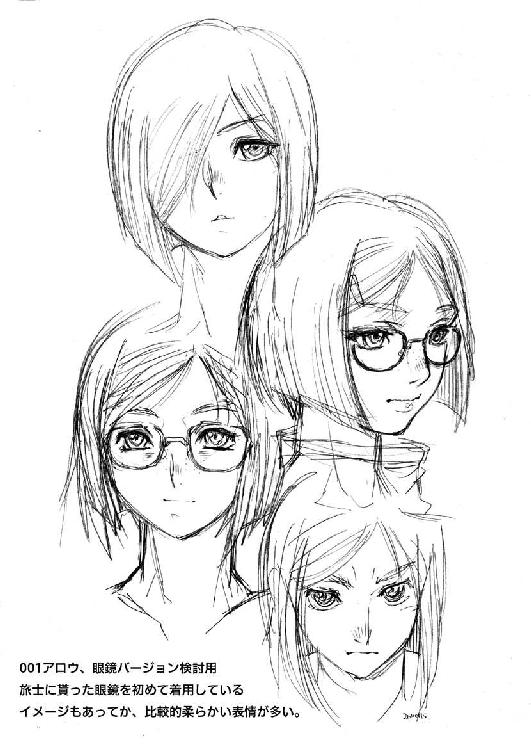
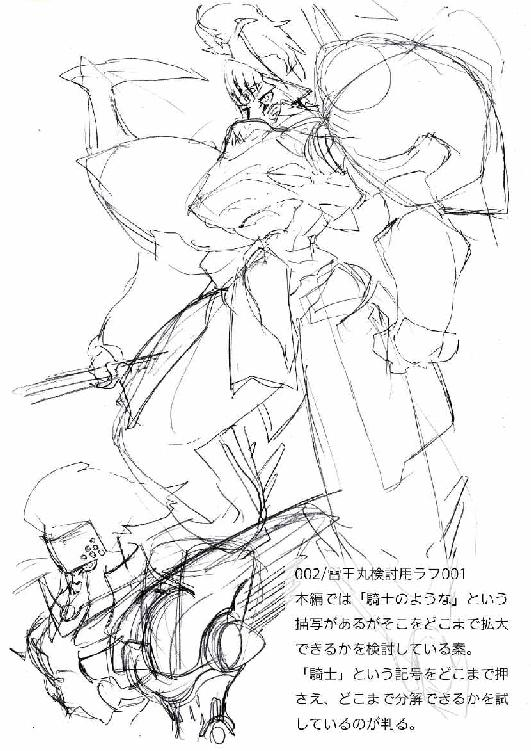
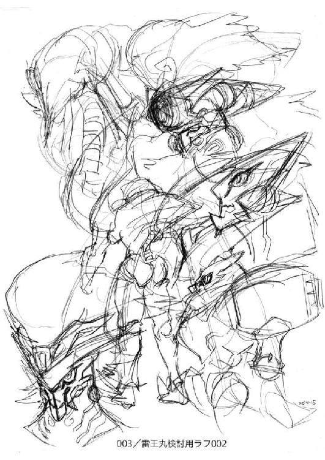
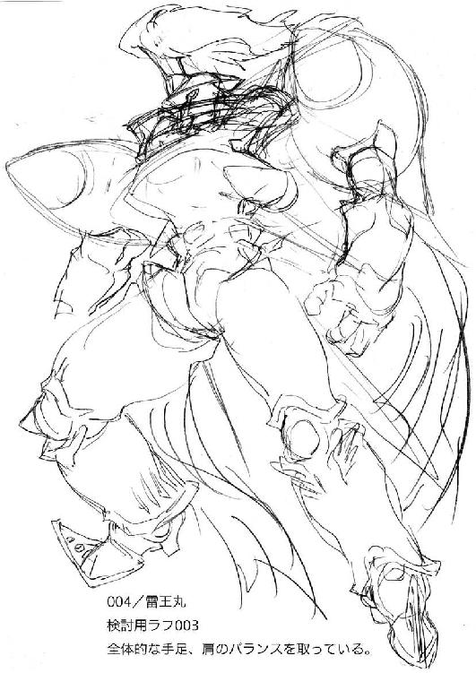
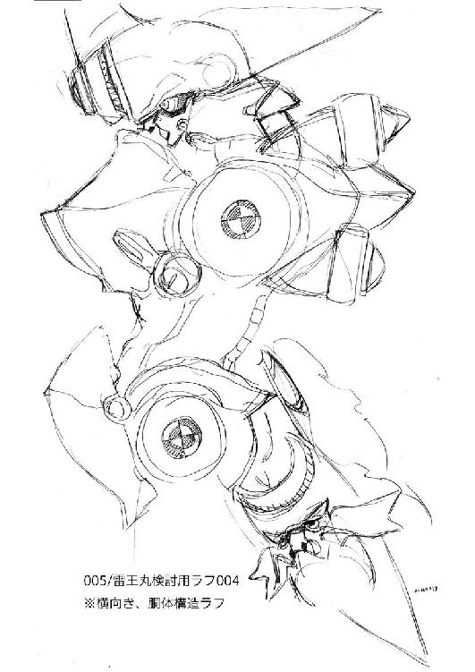
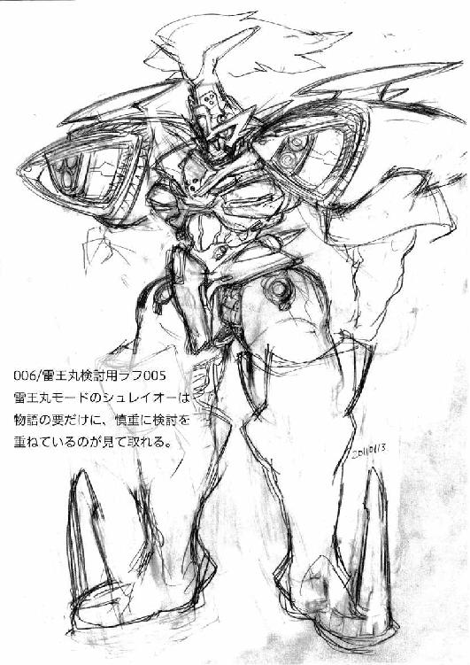
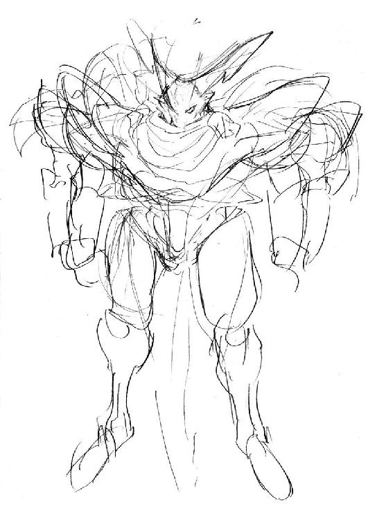

| ダマスカス・ハート〈上〉―南国戦隊シュレイオー〈2〉 神野オキナ・ベストシリーズ ダマスカス・ハート 南国戦隊シュレイオー2 (楽ノベ文庫) | |
| 神野 オキナ | |
| 株式会社マイナビ出版 (2016) | |
本書はリフロー形式で制作されています。本文は文字の書体と大きさを変えることが出来ますので、お好みの設定で読書をお楽しみください。
☆
その日、モスクワのとある喫茶店。「イムリスク」が店を閉めた。
裏路地のはやらない場所で、喫茶店だというのに、何故かたむろしている男たちは安酒場が似合いそうな連中で、暗い店内とあいまって、実際、喫茶店だというのはメニューを見ないとわからないほどだった。
さらに、そこは密かに、クレムリン宮殿にほど近い、小さな広場に建つあの建物──ロシア国家安全保安委員会こと、ＫＧＢの血を引く連邦保安局の住人たちが常にマークしている場所でもあったが、この喫茶店の主と、そこにたむろして冷たいロシア紅茶で数時間粘り続けていた常連たちは、国内にくまなく張り巡らされた彼らの目と掌をすり抜けて消えてしまった。
数ヶ月後、今度は廃艦処分になった攻撃型原子力潜水艦が数隻、実際の数と食い違うことが判明、かねてから国際社会より武器の流出が重要問題とされている中、首相の厳命により、ロシア国防軍参謀本部情報管理本部ことＧＲＵまで巻き込んだ大捜査網が展開され、これに関わった数百名に及ぶ将校と、官僚たちの逮捕者が出たが、潜水艦の行方は杳として知れなかった。
☆
二十世紀末、欧州某所。
煤と埃にまみれた黒いコートを翻し、音もなくアズロヴ・ド・ラインダム──アロウは駆け抜ける。
石畳には月の薄青い灯りが落ち、ふたつの影を映し出す。
走りながら、アロウは手にした銃──ＶＺ75の激鉄をあげた。
まだ十三歳の少女の手に握られたチェコ製のオートマチックは、アメリカ人に「青い宝石箱」と称えられた艶やかなミッドナイトブルーの肌をオイルストーンではぎ取られ、光を反射しない黒に塗装されている。
「Areter!」
アロウは叫んだ。フランス語だったが、相手の言葉──英語に言い直す余裕は彼女にはない。文法が正しいかどうかも気にしている暇はなかった。
相手が止まってくれるとは思ってもいない。
ようやく苦労の果てに手に入れた最新の液体火薬の構造式を納めたＤＶＤロムを、「あの女」はアロウの手から奪っていった。
「Areter! tier!」
一歩踏み出すたびに、体中に激痛が走った。
無理もない。「あの女」が放った、ホテルの部屋を一瞬で焼き尽くす「炎の爆発」から逃れるために、少女は窓を破り、階下にあったゴミの山に飛び降りていたのだから。
拳銃速射方式で引き金を引く。
金色の空薬莢が銃口からの閃光をバックに、闇へ踊りながら落ちていく。
古びた石壁へ着弾する気配、音はわずかに遅れて響いた......外れた。
夜の彼方からの応戦はない。
走る。相手は角を曲がった。
初めての黒星を、甘んじて受け入れるつもりはない。
この先には運河がある。
水分を含んだ風邪が吹きつける中、月光を背にして、翻る白のコートが見えた。
「リミティアっ！ この薄汚いアメリカ女！」
母国語でわめきながら、アロウはＶＺを構えた。
相手が振り返る。
真っ赤なロングヘア。年齢はアロウと同じぐらいで、ドイツ系の血が混じっているのが鋭い目つきに表れている。
手の甲に五芒星が銀糸で刺繍された、茶色の手袋に握られたナイフを、赤毛の少女──リミティア・Ｍ・ボークトは顔の前にかざした。
拳銃に対してナイフ......正気の沙汰には見えないが、リミティアは、アメリカ超自然能力者軍に所属する「魔女」だ。ナイフは魔法の「杖」である。
（この期に及んで、魔法を使うつもりか！）
魔法の使用は、どうしても呪文の詠唱の問題がある......この場合、間に合うはずはない......だが、この時のアロウは、この圧倒的な状況にどこかアンフェアな思いを抱いた。
リミティアのナイフの握りの端が奇妙に膨らんでいることに、そしてそれが意味する事実に、この時アロウは気づかなかった。
しかし、それでも一瞬遅れてアロウはリミティアの手足を狙い、恐ろしい早さで引き金を引いた。
放たれた残りの十二発の弾丸、それは、すべてリミティアの握ったナイフを中心に展開された「場」に阻まれ、火花をあげて停止した。
九ミリ軍用弾、リミティアが手を下ろすと、パラパラと地面に落ちた。
「何！」
愕然とするアロウめがけ、リミティアのナイフの先端から闇夜へと青白い炎の千がいくつも走り、収束して炎の塊に変じると、恐ろしい早さで突進してくる。
「詠唱装置！」
同時に、いくつもの呪文を操る高速呪文と、それ専用の詠唱装置をアメリカが開発しているという話は聞いたことがあるが、まさか実用化されているとは思わず、黒いコートの少女は地面に伏せたが、狙いは彼女ではなく、その後ろの建物だった。
轟音とともに爆発が起き、瓦礫が少女の上になだれ落ちてくる。
転がって避けるアロウの背中を、ひときわ大きな家の破片が強打した。
息が詰まり、目の奥で星が散る。
声を出す暇もなく、アロウはその場で横に倒れ、動けなくなる。
足音が近づいてきた。
手の中にあったＶＺが蹴り飛ばされる。
うめきながら、アロウは真っ白に汚れたコートの背中を丸めた。
「まだ、生きているのね」
せせら笑うような声。
必死に目を開けると、燃えるような赤い髪が、街灯を受けて輝いている。
「よくここまで追跡これたものね。偉いわ」
だけど、と言葉を続けようとした次の瞬間、アロウは左手でズボンの裾をめくった。
足首のホルスターには、いざという時のためのマカロフ自動拳銃が収めてある。
距離はほぼ至近。
リミティアの顔が引きつる。
その顔面に銃口を向け、アロウは引き金を絞った。
銃声はひと連なりに聞こえた。
銀色の破片が夜空を舞い、石畳の上に刺さった。ワンテンポ遅れて、蹴り飛ばされたマカロフがその後を追う。
「た、大したものね......それで動けるとは」
冷や汗をかきながら、それでも冷笑を唇に張り付けたまま、リミティアは、顔面にかざしたナイフをコートの内側に納めた。
その刀身は根元からへし折れている。アロウの放った必殺の弾丸を受け止めたのは、彼女の魔法ではなく、象徴──あるいは「杖」として機能しているナイフだった。
「殺せ」
今の一瞬の動作に、残り全ての体力を消耗し尽くしたアロウは、がっくりと頭を落としながらつぶやいた。
「いいえ、殺さないわ」
立ち直りが早いのか、それとも完全にアロウが無力化されたと悟ったのか、楽しげにリミティアは笑い声を上げた。
そして、アロウのコートの前を開け、懐を漁る。
アロウの白いシルクのワイシャツが街灯を受けて輝く。
ショルダーホルスターの固定紐に、革の鞘に収まった細身の短剣に目を留め、リミティアは、無造作にそれを引き抜いた。
「へえ、いい刃物ねえ」
その刀身は波紋を思わせるいくつもの優雅な縞模様に覆われた、ダマスカス鍛造法で作られたとおぼしい、人目を引く代物だった。
「や、やめろ......」
弱々しくアロウが手を伸ばす。
それは黒檀でできた柄の部分に彼女の家、即ちラインダム王家の紋章がはめ込まれた「王家の剣」だった。
古くから傭兵を主な産業としてきたラインダムの、王家の者のみが持つことを許された剣を、現代風に小さくディフォルメしたそれは、優美さと実用性をギリギリで併せ持つ魅力に溢れていた。
「貰っておくわ、これ」
鼻歌でも歌いそうな上機嫌で、赤毛の「魔女」は自らのコートの内ポケットにそれを納めた。
「それは......駄目だ、駄目......だ」
「取り返しに来なさい」
笑いながらリミティアは言った。
「あなた、きっと大した非合法工作員になるわ。だから、強くなったら取り返しに来なさい」
ばさっとコートの裾をさばき、腰に手を当ててリミティアは宣言した。
「ここまで追って来て、それだけのガッツを見せてくれたから、あなたを私のライバルにしてあげる。私には切磋琢磨するライバルが必要なのよ」
「な、なんだと......？」
理解できない、という顔のアロウに、リミティアの嘲笑が弾けた。
「だから生き延びなさい。生きて、強くなって、何度でも、何十回、何百回でも私を倒しに来なさい。でも、私は絶対に負けないから」
一方的な言葉だったが、今のアロウは地面に倒れたまま、使える反撃の手段を全て奪われていた。
「くそ......」
白いコートが風をはらんで翻る。
リミティアの後ろ姿を見ながら、アロウは萎えそうな手足を必死に叱咤して立ち上がった。
よろめきながらも蹴り飛ばされたＶＺを拾い上げ、時折、壁にぶつかるようにしながらジグザグに道を行く。
どれだけ歩いたのか......実際には数十メートルの距離を行く数分感が、少女には十時間にも、数キロにも思えた。
やがて、リミティアのコートの背中が、運河に続く桟橋の上で立ち止まっているのが見えた。
「返せ......剣を返せ！」
叫び声は、掠れていてリミティアには届かなかったが、構わずアロウは壁にもたれかかったまま、片手で構えたＶＺの引き金を引いた。
指も腕も、まるで他人のモノのように頼りなく、また思うように動かず、銃弾はリミティアの足下で弾けた。
驚いた風にリミティアが振り返る。
再び銃撃を始めようとした時、リミティアの後ろに無粋なエンジン音を騒々しく響かせながらタグボートが滑り込んできた。
その甲板の上、横に並んだ三つの銃口の下に固定されたレーザー照準器の光が、アロウの身体へするすると近づく。
間一髪、奇跡のような気力をふるって横に跳び、建物の蔭に隠れたアロウを追って、２２３レミントン弾が火花をあげながら壁を、石畳を削った。
わずか一秒、銃撃が途絶えた瞬間を逃さず、アロウは建物の蔭から飛び出し、ほとんど勘だけで銃を撃った。
瞬間、風がアロウの、見事な金髪の前髪に隠された右目を露出させる。
かまわず睨みつけた。
ふたつある右目の瞳孔が輝く。
久しぶりに右眼も使ったためか、アロウの弾丸は外れたが、反撃しようとした敵の銃は急に沈黙した。
必死に棒状遊底を引いて不発になった弾丸を排莢し、再び発砲しようとするが上手くいかない。
おそらく、全ての部品を取り替えても、彼らの銃は二度と火を噴くことはない。
それがアロウの右目に封じられた能力──「邪眼」だ。
傭兵王女は着弾位置を修正し、舷側にいる二人の男──リミティアの「回収係」だろう──を撃ち倒そうとする。
再び見えざる壁が銃弾を遮った。
火薬の爆発によって与えられた運動エネルギーを、一瞬にして完全消滅させられた弾丸が落ちる音は、焼き玉エンジンの轟音に隠されて聞こえない。
船に乗り移ったリミティアは、薄ら笑いを浮かべてアロウを見た。
同年代の少女からの嘲笑。
それがアロウの怒りを煽った。
「リミティアあああああっ！」
絶叫しながら、アロウは走り始めた。
走りながら銃を撃ちまくる。
弾丸は時折標的の周囲に火花を散らすが、どれも致命傷にはなっていなかった。
船が離れる。
運河沿いの道を走って追いながら、アロウはすべての弾丸をタグボートに叩き込んでいった。
最後の弾倉が空になる。
船は闇に消えていった。
「くそったれ......！」
熱心な王室ファンでもある、彼女の国の国民が聞けば失神しそうな悪罵を口にして、アロウは空になったＶＺを地面に叩き付けた。
頬を涙が伝うのを止められない。
全ての気力が手足から抜けていく。
跳ね上がった世界最高のコンバットオートマチックは、気の抜けた水音を伴って運河の中へ消える。
そして、アロウはその場に倒れ、気絶した。
☆
目が覚めると、泣いている自分を認識してアロウは戸惑った。
夢を見て泣くなんて、何年ぶりだろうか。
しかも、あんなはらわたの煮えくりかえるような記憶の夢を。
「.........」
ベッドの上に起きあがる。
無意識に前髪が右目を隠しているのを指先で確認しながら、時計を見る。
真夜中の三時。
ため息が出た。
（今が夏休みだからいいものの......なんという様か）
半ば自嘲しながら、ぼんやりと暗い室内を見つめた。
少女の部屋とは思えないほど殺風景な部屋だ。
窓がないのはここが地下にある施設だから仕方がない──としても、安眠を妨げないように設けられた薄い照明に照らし出されているのは、無骨きわまりない備品の机と半分は教科書を詰め、残り半分にちょっと「特殊な雑誌」を詰め込んだ小さな本棚。そしてロシア語や日本語で中身を表示された段ボールの箱の山。
かろうじて人間らしくはあるが、彼女の身分に相応しいかと言われれば、大いに疑問が残る。
唯一それらしいといえば、本棚の上におかれた略式の王冠を納めたアクリルのケースだろうか。
アロウ──アズロヴ・ド・ラインダムは東欧の小国の第二王女なのだ。
（何か......飲もうか）
自分の部屋の中を見つめながらぼんやりと思う。
どうにも中途半端な時間に起きてしまった以上、何らかの「区切り」がないと眠れそうにない。
が、この時間に執事──いや、今はビザの都合で執事は帰国し、その娘のメイドに代わっていたが──を起こすのも気が引けた。
通常の王族と違い、彼女は傭兵の世界に身を置き、同年代の一般市民の少女と比較しても苛烈な人生を送っている。
ゆえに彼女のメイドは、一流の執事たる父親同様、イギリスで一流のメイドとなるべく教育されており、この時間に起こされて飲み物を作ることをいとわないだろうが、それが一般には「非常識」の類いの行為である、ぐらいの常識は持っていた。
かといって、読書して自然な睡魔がやってくるのを待つ気分でもなかった。
冷たい石を飲み込んだような、嫌な気分だった。
アロウが初めて完敗したのはあの作戦だったのだ。
それからも何度か失敗はあったが、それは作戦上、あるいは不幸が偶然重なったもので、はっきり彼女自身にその原因があったわけではない。
（やはり......私は非合法工作員なのか）
いつになく、どこからか力が抜けていくような情けない思いで、アロウは再びため息をついた。
ついた途端、机の上の小さな写真スタンドに入れた、葉書サイズのイラストが目に入る。繊細な色使いで、北欧神話に出てくる戦乙女が、空を駆けていく絵だ。この世にたった一枚、彼女のためにだけ描かれた絵。
つい三日ほど前、アロウはこの絵が出来上がっていく様を見ていた。
まるで、あらかじめ下絵があったかのようにケント紙の上を走るシャープペンシル、その上をさらに躍動感溢れてなぞっていくピグマ。慎重にコピックによって色が乗せられたあと、最後に筆ペンが輪郭をくっきりと浮かばせる様は、まるで魔法を見ているような気分にさせられた。
（......会いたいな）
ふと、このイラストを描いた、ある少年の顔が浮かんだ。
中性的な顔に、いつも無理矢理に難しいしかめっ面を浮かべていることが多いが、笑うと思いがけず、あどけない素顔が透けて見える少年。
彼と話がしたかった。
そうすれば、この気分も晴れるのではないか。
ちら、と時計をもう一度見る。
（起きているかもしれない）
そう思うと、少し心拍数が上がるのを感じた。
枕元に置かれ、充電中の携帯電話に手が伸びる。
（寝ているかも）
迷う。
だが、迷う間にも時間は過ぎ、彼が眠ってしまう確率は高くなる。
いつもの彼女なら迷わない。
数回のコールの後、相手が出なければ諦めるし、そう出なければ万事よし、そう考えてもう電話番号をプッシュしている。
迷うのは、相手が気になる少年だからだ。
「......」
じっと手の中の携帯電話を見つめていると、不意に「非常呼集」の表示が始まった。
「起キテ、起キテ、オ仕事、早ク」
ぎこちない日本語が、闇の中に、びっくりするような音量で響き渡る。
瞬時にアロウは受信ボタンを押した。
「私だ」
我知らず、少女の顔に笑みが浮かんでいる。
これで、少年に会えることが確定した、その笑みだった。
☆
「起キテ、起キテ、オ仕事、早ク。起キテ、起キテ、オ仕事、早ク......」
エアコンの効いた部屋の中、ベッドサイドにおかれた充電器。
その中に収められた携帯電話が、軽快なテンポだが人の神経を逆撫でする一歩手前の音量で、ブザーと音声を放ち始めた。
ご丁寧にも携帯電話の上には、二頭身のネコ耳尻尾付きの少女がとてとて走り回る立体映像が動いている。──もちろん、一般にこんな機能をもった携帯電話は、まだ出回っていない、
二秒間だけ、我慢した。
「......」
御鏡旅士はむんずと携帯電話をひっ摑むと、押しつぶす勢いで通話ボタンをオンにした。
さっきまで四時間ぶっ続けでデッサンの練習をしていたので、神経はかなりくたびれている。
冗談や気まぐれを受け入れる余裕はなかった。
「仕事だろうな？」
一昨日のように、単純に暇つぶしでかかって来たら怒鳴りつけるつもりで、旅士は不機嫌そのものの声をだした。
誰からかかって来たのかは考えるまでもない。
あのふざけた立体映像が浮かぶということは、この携帯電話を、旅士を含めた三人に持たせた人物（？）だ。
「もちろん。出動よ。特Ａクラス」
子供っぽい声には、かすかな緊迫感があった。
「わかった。二分で行く」
眉間に寄せていた皺が消え、旅士は素早くベッドの上に起きあがった。
手元の明かりはつけない。すでに眼が暗闇に馴れていた。
Ｔシャツと短パンを脱いだ。
中性的な──美少年と呼んでもいい顔立ちに見合った華奢な身体だが、その首から下にはびっしりと大小さまざまな傷跡が、縦横に走っている。
傾斜した天板を持つ机の上から、身体用のウェットティッシュを何枚か取り出し、手早く身体を清める。シャワーを浴びたいところだが、時間が惜しい。
手始めに右手の小指側面を拭うと、鉛筆の汚れで真っ黒になった。
身体全体を拭き終えると、少年は眼鏡をかけ、下着一枚の姿でクローゼットを開ける。
クリーニングからあがってきたばかりの、青いパイロットスーツを取り出して袖を通す。
パイロットスーツといっても、現用兵器であるジェット戦闘機のそれとは違い、身体にフィットする薄い素材でできたもので、両の手首と頸動脈、心臓、および太腿に肉体のデータを収集するための薄い機械があるほかは、爪先まで一体化しており、外見はボンデージ衣装にも等しい。
襟元までファスナーをあげ、軽く上を押さえると、接合面はほとんど見えなくなった。
最後に、左右太腿の機械の側にある物入れを開け、中に、筆箱サイズの緊急キットとプラスティックケースから取り出した銀色の自動拳銃を納め、旅士の「職場」オリジナルデザインのジャケットを羽織る。
準備を終えると、こういう時のため、あらかじめ着替えを入れたスポーツバッグを手に部屋を出た。
足早に階段を駆け下りる。
旅士に両親はいないから、この辺は気が楽だった。
一階の居間に降りると、バッグの中からオートロックのリモコンキーを取り出し、施錠を確認しながら居間を横切り、奥にある空き部屋──かつては旅士の両親の部屋──に入る。がらんとした部屋は段ボールが腰までの高さにいくつも重ねられた物置状態で、その奥に、真新しい扉があった。
取っ手はないが、掌の形に枠を描かれた部分があった。
指紋錠にも思えるが、今の旅士の服装は指先までパイロットスーツに覆われている。
が、少年はためらうことなく掌を押し当てた。
「御鏡旅士さん、認識しました」
とても合成音とは思えない滑らかな女性の声と同時に、扉がスライドする。
まばゆい輝きが空き部屋の中を照らし出す。
思わず眼を細めながらも、旅士はその中へ足を踏み入れた。
背中でドアが閉まる。
家よりもさらに低い温度が少年の身体を包む。
夜明け前の時間だというのに、内部は人の慌ただしい気配に満ちていた。
そこは、那覇の中央にある旅士の家のどこか、では決してなかった。
一歩踏み出した旅士が立っているのは、どこまでも高い天井、それに追いつくようにのびるいくつものクレーン、忙しく走り回る作業員、そして作業用の特殊車両がびっしりと詰め込まれた──格納庫だ。
沖縄県の中心、那覇市の地下数百メートルに設けられた、俗に言う「秘密基地」というやつだ。
もっとも、沖縄のもろい地層を一〇〇メートルも実際に掘り下げるわけにはいかないから、ここは量子力学的に「重なって」いるだけだが。
驚いたことに、体育館一個は入りそうな格納庫は、壁をぶち抜いてまた別の格納庫につながっていた。
隣りの格納庫はさらに広大なのが見て取れる。
旅士は明るさに馴れるまでの間、眼を細めていたが、
「......繰り返します、仙術機パイロットはただちに第三司令室へ急行して下さい。繰り返します......」
というアナウンスを聞いて走り始めた。
「タビト！」
流暢な日本語が聞こえ、旅士が速度を緩めながら横を向くと、見事な金髪の少女が駆け寄ってきた。
「やあ」
旅士は走りながら片手を上げる。
「今日はずいぶんと急な招集だな？」
最近伸びてセミロングになりつつあるブロンドヘアを揺らしながら、少女は、ややもすると冷酷な印象を与えそうな美貌を引き締めた。
前髪が顔の右半分を隠している。奇妙だが何となく彼女には似合う髪型だ。
こちらは黒のパイロットスーツに、旅士と同じジャケット。旅士と同じ十六歳とは思えない大人びた雰囲気は、決してしなやかなプロポーションのせいばかりでもない。
彼女──アズロヴ・ド・ラインダムは東欧のとある小国の第二王女にして、世界を股にかけるフリーの非合法工作員なのだ。
「特Ａらしいよ......それ以外は僕も知らない」
「私もだよ」
うなずきながら旅士には見えないように、一瞬だけ微笑み、少しだけアロウは並走する少年との距離を近づけた。
「旅士せんぱーい！」
明るい少女の大声が遥か後ろで聞こえ、一瞬で人影が旅士の横に並んだ。
旅士よりも頭一つ、アロウよりも高い、一八〇センチの長身に、それに見合うだけのプロポーションが、同じパイロットスーツのおかげで強調されている。
カラスの濡れ羽色した長い髪は、頭の高い位置でポニーテイルに纏められている。
だが、実際には旅士よりも一つ年下、中等部の十五歳......辛うじて表情のあどけなさにその年齢が表れていた。
紫堂虎鈴といい、旅士やアロウと同じパイロットである。
一瞬にしてふたりに追いついたのは、彼女が虎に変身する能力を持つ特殊な一族──虎人間の脚力ゆえだ。
「あれ、虎鈴」
旅士が少女を見て口を開いた。
「着替えは？」
「あ、大丈夫です。あたし、いつも予備をロッカールームに置いてますから」
「ふうん......衣装持ちなんだなあ、女の子は」
旅士が感心したように言うと、少女ふたりは顔を見合わせてクスクスと笑った。
やがて三人は隣りの格納庫に飛び込んだ。
さらに広い、野球場がふたつは入りそうな空間で、作業員や作業車両が右往左往している横を駆け抜ける。
格納されている物は、ほぼ中央に立っていた。
たてがみの付いた兜をかぶった、強大な西洋甲冑。
第一印象はそんなところだろうか。
兜の眼覆いの奥は暗闇に塗り込められているが、外にいる整備員たちの話だと、旅士ともうニ名のパイロットが乗ると、いささかディフォルメされた感じの瞳が輝くという。
これが、旅士たちの乗る「仙術機」──三種類に変化するうちの、「雷王丸」と呼ばれる形態である。
三人はその足下をすり抜け、奥に設置された三基のエレベーターのうちのひとつに乗り込み、上を目指した。
古くさいデジタルプレート式の表示階数がカチカチと数を変え、やがて最上階で止まった。扉が開く。
ちょうど仙術機の頭部の横あたりに突き出る形で作られた、張り出し型の司令室に、三人は足を踏み入れた。
司令室の壁際にはずらりとオペレーターたちが並び、忙しくデータを収集、指示を飛ばしている。
左右に並ぶオペレーターたちとは明らかに違う、豪奢な椅子がくるりと回転して、旅士たちの方を向いた。
「あろはおえー♪」
黄色い声をあげたのは、十歳前後の少女だ。
にっこり笑うと、大きな目がすうっと一本の線になる。
軍服めいたデザインのエプロンドレスという、実に奇妙なものを身に着け、膝の上にはジェット戦闘機用のヘルメットを置いている。
肌の色は、最近の日差しのせいか少々小麦色に焼けた白で、髪の毛はウェーブが微妙にかかった金色。
だが、何よりも印象に残るのは、頭部にある三角形のものであろう。
どう見ても、猫の耳にしか見えない。
さらに腰の後ろからひょこひょこと手招きするように動いているのは尻尾だ。
彼女の名前は月読井草。
本人の言うとおりならば齢数百歳の仙人であり、今現在は沖縄防衛のために作られた特殊組織「シュレイオー」の長官様、なのである。
「で、いったい何があった？」
旅士が尋ねた。
「うん、実はねえ......」
☆
夜明け直前の海に、一番乗りで潜る。
朝日が差し込んで、次第に青く変わっていく海面、営みを始める海底を見つめる......サンライズダイビング。
この数年、南大東島では最近、こういうコースを「売り」にしようと頑張っている。
午前四時、「ホワイトーシャンダイビングクラブ」のチャーター船は予定の位置までやってきた。
周囲はまだ朝日の兆しさえなく、船の上の明かりがけなげに輝いている。
船のオーナーで、数年前沖縄に移り住んできた白崎輝は、時折、冗談を言い、あるいは細々としたチェックをしながら本日の客であるカップルの潜水準備を進めていた。
「......では、そろそろいきますかね？」
沖縄の海に惚れ込んでここを第二の故郷と決めた男は、各チェック表に最後の印を付けて、一昨日沖縄に来たばかりのカップルを促した。
あくまでもこのコースは「体験ダイビング」なので、白崎自身もウェットスーツに身を包み、ふたりの案内役を行なう。
船はその間、アシスタントである妻が見ていてくれることになっていた。
静かな夜明け前の海。
足ひれを装着した三名は、どこかペンギンにも似たユーモラスな動きで舷側に腰掛ける。
もちろん、足から海に入る──エントリーのためである。
「オーナー、くるっと回る方法はダメですかね？」
半ば冗談、半ば本気で男の方が尋ねる。
「ああ、あれはライセンス持ってる人でも危ないんで......」
などと受け答えをしていると、船の横に、まるで見えない手で押されてかのように、すうっと一艘のクリ船が現れた。
沖縄独特の三日月型のクリ船、「サバニ」である。
船尾には年季の入った焼き玉エンジンが付いているが、それは動いておらず、細い船の中央には、なめし革のような皮膚をした老人が怪訝そうに首を傾げて座り込んでいる。
一瞬、白崎も観光客も凍りついた。
実を言えば沖縄においても、世界の海同様に、こういう観光ダイバーたちと地元漁師との関係はあまり円満ではない。
理由は色々あるが、おおざっぱに言えば、エコロジー方向に傾きつつあるダイバーたちと、そこで「生活」する漁師たちとでは、「海」という財産の捉え方が違うのだ。
そんなわけで両者が海の上で遭遇すると、冷たい視線の応酬、もしくは怒鳴り合いになることは珍しくない......となると観光というイメージ商売のダイバー側にとってはありがたくない話である。
だが、目の前に現れたのが数少ない、ダイバーに対して敵意を抱いていない（無関心とも言う）老漁師だと知って、白崎の顔がほころんだ。
ちょっと不安げな観光客に「あの人は大丈夫ですから」とひと言いって安心させて、
「宗助爺さん、早くから大変ですねー」
いつもならここで「おー」とか何とか声をあげ、老人はにこやかに歯の欠けた口を開けて、ゆるゆると手を振る。
「.........」
宗助爺は、しかしそうはしなかった。
腕を組み、じっと難しい顔をして船底を見つめている。
よく見ると、いつごろ手に入れたのか、古くさい、ところどころゴム管部分がひび割れた聴診器を両耳にはめている。
聴診器のカップは船底に当てられていた。
「あの......何があったんですか？」
さすがに状況がおかしいと気づいて、白崎は声の調子を低く、かつ大きくした。
「.........」
老人が顔をあげ、聴診器を外した。
それをいつも餌や針を入れる小箱の引き出しに戻し、
「ああ、お兄さんたち、今日も潜るつもりかね？」
「え？」
カップルが何を言われたのかと、顔を見合わせた。
沖縄方言は、他県民からすると異国──というより異次元の言葉に聞こえる。
もっとも、老人にしてみればわかりやすく首里言葉を使っているつもりなのだが、分からないことに変わりはない。
白崎は喋れないが、聞くことだけはできるので、
「ええ、そのつもりですよ......サメでもいるんですか？」
と笑いながら問う。
「違う」
首を振ると、老人は難しい顔で、
「今朝は、しばらく潜らない方がいいよ」
一瞬、白崎は老人が宗旨替えをして、ダイバー非難に回ったのかと身構えたが、
「アメリカ軍のとっても大きな潜水艦がこの下を通っているよ」
「シンスイカン？」
今度は白崎が首を傾げる番だった。
「そうだよ、タイフーン級という奴だよ」
「シンスイカンって、潜水艦？」
「そうだよ、日本でも伊号とかあったじゃないか」
冗談、と笑い飛ばすこともできず、しかし怒るわけにもいかず、クルーザーの上で白崎たちは顔を見合わせた。
何かが爆発したような轟音と水しぶきが、白崎たちの船へと襲いかかったのはその時だ。
「わわああああっ！」
男女の悲鳴とともに、船はさっきまでの穏やかさが冗談のように、突如現れた高波と豪雨に見舞われ、嵐の中の木の葉のように見えざる力にもてあそばれた。
海面を貫き、白地に黒いラインが入った物体が、海中から沖縄本島めがけて発射されたためなのだが、白崎たちにはわからない。
ただひたすらに手近なものにしがみついてこの混乱を乗り切ろうと必死だった。
老人だけが、わずかにサバニの上で体重を移動させるのみで、この状況を切り抜けている。
☆
空中に打ち出された物体は四機。
白地に黒い幾何学模様が描かれているため、一見るすると旧式ののポラリスミサイルにも似ているが、猛烈な大きさと長さの炎を噴き出すロケットモーター部分はともかく、本体部分は鋼鉄やその他の金属らしい質感が皆無だ。
そして、「四」は「死」に通じる。
四つの物体は空中で、命と進化の象徴である螺旋を描くようにしながら、天空の一点でぶつかり合った。
火花も、爆発もない。
ただ、真っ白い粘土の塊がぶつかったように、柔らかく四つの物体はひしゃげ、次に見えざる巨人の掌の中に押し込まれたように融合した。
さらに見えざる巨人の手が動く。
融合した四機のロケットもどきは、さらに形を変えた。
すでに、高度と距離は沖縄本島上空まで数秒の位置に来ている。
落下が始まった。
変形が終わる。
四機のロケットもどきは白い「鬼」と変じていた。
全身には血管のように大小さまざまな大きさのパイプが張り巡らされ、分厚い胸板を構成しているのは金属の装甲板。
前衛芸術のように、機械のパーツを組み合わせて作られた「鬼」だった。
無機物に術をかけることで作り上げる「術式鬼」と呼ばれる存在だ。
小脇に赤黒い「杭」を構えている。
形は上下に尖った六角柱。
それは呪詛の塊。
打ち込まれれば、その土地を汚し、その土地の命脈を、さらに土地に生きる人々の命を奪い、削るための道具だ。
恐ろしい速さで後ろへ流れていく積乱雲の彼方に、沖縄本島が見る間に近づく。
「術式鬼」は小脇に抱えていた「杭」を両手に持ち替えると、大きく頭上に振りかぶった。
光が疾る。
術式鬼の眼の前に、光の輪がクルリと描かれた。
機械でできた鬼の顔面が、輝きに白くなる。
巨大な馬上槍が、術式鬼の右肩を貫通した。
光の輪はすでに消え、そこにはたてがみ付きの兜をかぶった、巨大な西洋甲冑が馬上槍を突き出す形で出現していた。
☆
「『梅陣』、敵仙術機と接触」
海の底、赤い照明に照らされた薄暗いオペレータールームに、報告が届く。
「プログラム、レベル４に移行、『杭』は圧縮回収する。東京に回収用術陣を作動要請」
落ち着いた女の命令が、吐き出される紫煙とともに響く。
「了解、プログラム移行。回収陣、作動要請します」
「『イコライザー』の用意はどうか？」
「いつでも発進可能です」
「よろしい」
女の声が満足そうに深くなる。
「では、カウントダウン開始を『イコライザー』内のパイロットへ伝達」
☆
赤黒い六角柱は、見えない手に叩きつぶされたかのように厚みを失った。
次いで、上下にも圧縮され、消え去る。
回収用の魔法陣が内蔵されていたのか、それとも、どこか別のところに設置された魔法陣が回収したのだろう。
だが、空中で対峙した二体の巨人の興味はそこにない。
目の前にいる敵の殲滅、それだけだ。
馬上槍が抜かれ、再び突きだされた
かろうじて術式鬼「梅陣」は身をひねってこれをよけたが、右頭部側面の一部が衝撃波で粉砕される。
次の瞬間、三度繰り出された槍の先端がその顔面をとらえた。
巨大な機械であることを考慮すれば不可能な動きだが、この「雷王丸」に与えられた特殊能力は、高速度移動および行動能力なのである。
ど真ん中を槍がぶち抜き、青黒い血液状に姿を変えた呪詛と、それにまみれた部品が空中に舞う。
西洋甲冑──仙術機「雷王丸」は槍を思いっきり左右に振った。
敵の頭部は上下に千切れ、次の瞬間、残った首から下も、馬上槍に無数の穴を空けられて液体呪詛を噴き出す。
だが、術式鬼「梅陣」はまだ倒されていなかった。
身体に大量の穴を空けられ、呪詛としての「体積」を減らしながらも、千切れた頭部は再生し、まだ無事な右腕が馬上槍を掴んだ。
ねじるように身体の外側へさばくと「雷王丸」はそのまま肩から「梅陣」へとぶつかった。
ぶつかった右肩の下、ワンテンポ遅れて肘が鋭く動き、術式鬼の腹を打つ。
後ろへよろめいた「梅陣」の顎を、そのまま伸ばされた「雷王丸」の右の拳が、小指側を向けて下から上へとらえる。
これはとっさに交差した右腕と左腕が防いだが、まだ再生の途中だった左の下腕部はその衝撃に耐えられず、千切れ飛んだ。
「雷王丸」の首に巻かれたマフラーが刃となって、さらに後ろへ移動して距離を稼ごうとした「梅陣」の顔面を切り裂いた。
鋼鉄の板を無理矢理引きちぎるような悲鳴が、夜空にこだまする。
月光の下、機械同士ながら凄惨な死闘の、それは終わりを告げる声だ。
「雷王丸」のマフラーは「梅陣」の顔面を切り裂いた勢いを殺さず、そのまま大きく広がった。
深紅のマフラーは「雷王丸」自身を覆い隠し、そして形を変えた。
今度はマントである。
そして「雷王丸」の姿はなかった。
代わりに現れたのは、巨大な、機械仕掛けの少女人形を思わせる仙術機だ。
「風来姫」という。
閉じられていた少女の目が開いた。
顔面を切り裂かれ、呪詛液をまき散らしながら「梅陣」がつかみかかる。
「触れるな、下郎」
声に縛られたように、術式鬼の動きが止まった。
否。実際に「縛られて」いた。
この仙術機は、特殊能力として言語に秘められた力──世に言う「言霊」を操ることができる。
マントを超高空の風になびかせながら、少女の姿をした深紅の機械人形は、腕をひと振りした。
物理的には観測できない「疾風」が吹く。
術式鬼は木の葉のように翻弄されながら落下した。
☆
「『イコライザー』発進用意」
無機質なオペレーターの声に、少女はトラックボールを動かして、モニターの映像を停止させた。
彼女の座っているコクピットは、製造するのに二十億ドルも費用のかかる人型機械の中にある。
アメリカがようやく製造に成功した、本当の意味での実用的仙術機。その十インチモニターの中では、新しい力の象徴である金色に縁取られた赤いヒーローが、今まさに必殺技を放つべく両手を広げ、腰を低く落としているところだった。
「いいトコだったのに」
舌打ちすると、リージョンコードの設定を元に戻し、ＤＶＤソフトを取り出して、シート下に納める。
「えー、もうおしまいなのお？」
スピーカーから別の声が聞こえた。いささか幼い。
「文句言わないの、お仕事なんだから」
さらにもうひとり、別の声が流れた。こちらは、コクピットに座っている少女と、幼い少女の中間ぐらいの年齢らしい。
「また、あとで......ね」
なだめるように言いながら、コクピットの少女は代わりに、作業用のＤＶＤロムを押し込み、起動させた。
作戦開始前に市販品の、それもヒーロー物のソフトを、本来の作戦システムを凍結してまで鑑賞する......もしも作戦指揮官に見つかれば、大目玉どころではない騒ぎになる行為だが、少女は平然としていた。
彼女は知っているのだ。この「作戦」が彼女なくしては為し得ないことを。
性格には彼女たち、だが。
「『イコライザー』、どうしたか？」
「『イコライザー』、異常なし、システム、オールグリーン」
「何故、返事が遅れたか？」
「システム異常の前兆らしいものがモニターに見えたので、再点検をしていた」
しれっと口から嘘が出た。
「二十五秒後に射出、戦闘開始する」
「了解」
少女の応答と同時に、彼女と、彼女を乗せた「イコライザー」が移動を開始した。
「『イコライザー』射出位置に」
「了解、システム、最終チェック」
少女の指先が再びトラックボールを動かし、システムチェックのソフトを起動させる。
「システム最終チェック終了、異常なし」
「よろしい、電磁カタパルト、最終チェック完了、射出用意」
「了解、通信カット」
「了解、鋭意努力せよ」
少女はそれに答えずスイッチを切った。
反吐が出そうな気分になる。
「筋肉バカめ」
吐き捨てて、少女はヘルメットのバイザーを降ろし、左右の操縦桿を握りしめた。
バイザーは金属でできており、周囲は見えない。
だが、すぐに少女の脳へ直接映像が結ばれた。
意識が肉体から切り離され、彼女を納めた鉄の人形に移動する。
そこもまた、冷たく、暗い場所だった。
輝きが少女の前に現れる。
ふたつ。
輝きは人型になり、映像に変わる。
「ハァイ、セブン、いい仕事しようね」
天真爛漫そのものの十二歳ぐらいの少女。そして、
「おはよう、セブン」
それよりは少々おとなしい雰囲気の十四歳の少女。
どちらも黒いローブを身にまとっている。
「おはよう、フォース、トゥワイス」
少女の顔に、はじめて人間らしい笑顔が浮かんだ。
このふたりだけは信頼できる......何しろ、それぞれ彼女自身の記憶から構成された彼女自身である。
外見と中身の違いは、記憶をダウンロードした時の年齢が数年おきだったためだ。
「ねぇ、もう時間なの？」
十二歳の時の記憶を元にしたトゥワイスが唇を尖らせる。
「あたし、あれもっと観ていたかったなあ」
「仕方がないわよ」
十四歳の記憶を元にしたフォースが言う。
「あとで、中身をダウンロードしてあげるわね」
「うん」
にっこりとトゥワイスが微笑んだ。
フォースとセブンは顔を見合わせて微笑む。
本物の微笑みはひとつだが、セブンと呼ばれた少女は、一番幼いトゥワイスの微笑みが胸に染みた。
もう、自分はああいう顔で微笑むことはない。
ぶうん、という電磁モーターの音が暗いコクピットの内部に響く。
少女の──今は十七歳のリミティア・Ｍ・ボークトの肢体は、シートに押しつけられ、同時に彼女の精神を納めた金属のボディは冷たいカタパルトに押しつけられる。
☆
薄い軽合金の箔が「梅陣」を襲い、一気に収縮した空間を狙って、「風来姫」の足下で水柱があがった。
さらに一瞬の数百分の一──刹那で、蒼く磨かれた鉄の色をした人型が背後に出現した。
術式鬼を覆っていた箔は、収縮して「風来姫」の拳大になって落下していく。
重々しい打撃音が周囲の積乱雲を震わせる。
「風来姫」は左の掌に集中させた自己犠牲型の結界により、その新たな人型の一撃をくい止めた。
蒼鉄色に塗られた新たな敵は、術式鬼よりも強いて言えば「風来姫」に変形する前の「雷王丸」に似ている。
ただ、こちらの頭部は鳥をモチーフにしたらしい鋭角なモノだし、胴体部分も無骨なローマ時代の剣闘士をイメージさせるデザインで、華麗な装飾はいっさいない。さらに、背中から金属の翼（もちろん、こちらにも羽のモールドなどはない）が二枚のびている。肩には黒のペンキで所属する国旗を塗りつぶしたらしい跡が見えた。
「風来姫」に一撃を与えたのは、それが両手で構えた巨大な両刃の剣だ。
「THISSWORDUSEFORJUSTIS.USERISNOTGILTY」の文字が、華麗な書体で刀身に大きく刻みこまれている。
右手に握られた、長い柄を持つ巨大な、収束レーザーを穂先に使った「筆」が相手の腹へと走る。
だが、瞬間焦点温度五千万度を突破するそのレーザーは、その腹部の手前で、輝く壁に絡め取られてしまっていた。
この仙術鬼は、「風来姫」同様、周囲を自己犠牲型の防衛結界に覆われているのだ。
「風来姫」の白い顔が、怒りと憎悪に歪む。
その名に「姫」の一字をいただくだけあり「彼女」の疑似人格は己の単純な判断を「屈辱」と認識していた。
「破！」
男とも、女とも思える不思議な声がその口から放たれた。
相手を守る光の壁の表面へ、レーザー筆が走る。
描かれた文字は「壊」。
相手の両手大剣へかかる力が倍加した。
「風来姫」が相手の腹を蹴り飛ばすのとほぼ同時に、ガンブルーの敵の剣が、「風来姫」の左上腕部を切断した。
二体の距離は、勢いと慣性もあり数キロにまで広がった。
ガンブルーの人型はかろうじて空中に留まったが、「風来姫」は落下し、その腕がまだ空中にあるうちに変形して、左腕のないまま「雷王丸」に戻るや、海の上ぎりぎりでとって返し、そのまま馬上槍を抱えて突進する。
突進しながら、左腕の切断面を突き出すと、申し合わせたように、切りとばされて落下していた上腕部がぴたりと合わさる。
単極子八卦炉がうなりをあげ、膨大な量の修復の「力」とそれを保存する「力場」が切断された左腕に集中する。
切断面が癒着した。切断面は原子レベルで修復され、数百分の一秒以内に完全に元に戻っている。分子構造を調べてみても、そこに切断面があったとはわからない。
最近、一部の世界で「仙術機」と呼ばれる特殊な巨大ロボットにのみ許された能力である。
これ故に、仙術機は滅多なことで傷つかない──正確には傷ついたままではいない。
ところが、相手の目的は別にあった。
腕を切り落とした剣は下へ振り抜かれ、術式鬼を包んでいた箔を切断したのだ。封印を解かれた術式鬼が、爆発するように巨大化する。
「雷王丸」目の前で。
人間同士の戦いならば、これは考えものの場面であった。
しかし結局、一瞬も躊躇うことなく、「雷王丸」の槍は術式鬼を貫いた。
槍だけではなく、「雷王丸」の身体そのものが術式鬼を貫通する。
体液のような「呪詛」と、その組み立てを成す金属フレームが夜明けの空に飛び散る。
昇りかけた朝日が霞むような閃光と、波を大きく凹ませるほどの爆発音が響く中、ふたつの仙術機が動く。
「雷王丸」は上空へ、蒼鉄色の仙術機は海面へ。
交差し、そのまま行き過ぎる。
どちらの武器にも戦果はあった。
敵の剣は「雷王丸」の左腕を再び切り落としていた。
「雷王丸」の槍は、剣を握った敵の右腕を貫き、破壊していた。
同時に振り向く。
左腕を失った「雷王丸」の身体に、可愛らしい破裂音が響いた。
ガンブルーの仙術機の頭部──西洋甲冑でいうところの「まびさし」の横に設けられたバルカン砲だ。
そのまま、蒼鉄色の機体は急速に「雷王丸」から遠ざかる。
落下しているのだ、海に向かって。
このとき、ようやく破壊された術式鬼のパーツが、海面に慌ただしい水柱をあげはじめた。
追いかけようとした「雷王丸」へ、粉砕された自らの腕を空中で捕まえたガンブルーの仙術機が、腕ごと剣を投げつけた。
自己犠牲型結界装甲が輝き、そのために「雷王丸」の動きが鈍くなる。
敵は海の中に消えた。
ひときわ大きな水柱が下から「雷王丸」へと吹き上がり、その銀色の機体を海水で洗う。
「雷王丸」は己の腕を回収しながら、海面ぎりぎりまで降下したが、水の中には入らず、睨みつけるようにバイザーの奥にある瞳を輝かせた。
やがて、諦めたように上空をあおぐと、ひときわ大きくマントをたなびかせ、上空へと駆け上がっていった。
そして、ある高さまで来ると、一瞬にして銀色の線と化し、沖縄本島へ目がけ飛び去っていく。
「な......なんなんだ、今のは？」
その光景を遠くに眺めながら、ずぶ濡れの白崎はぼんやりとつぶやいた。
あまりに非現実的な事が展開したので、まだ脳が正常に働いていない。
「だあ、幻サ」
宗助オジーは平然とつぶやいた。
「よかったネー、お兄さんたち、命は宝だからネエ」
白崎とは対照的に、まるっきり濡れていない老人は、そう言って小物を入れた軍払い下げの錆びついた弾薬箱からジッポーライターとタバコを取り出し、火を付けた。
夜明けの朝日は、まぶしいほどに海を照らしている。
※１「ピグマ」......様々な線の太さが選択できるミリペンの一種。本来は製図用だったが、八十年代頃から漫画にも転用されるようになった。（株）サクラパレス製。
※２「コピック」......コピー機によって複製した絵専用の塗料。（株）トゥールズ製。
☆
ざわめきはかなり以前からこの部屋の中に充満していた。
照明は煌々と明るいのに、立ちこめる空気は暗い。
部屋の中にいる誰もが、平均的なサラリーマンの年収でさえあがなえないほどの高級な服を身にまとい、一流のアクセサリーを身に着ける生活を最低でも十年以上続けているというのに、その顔は冬の新宿公園にたむろする浮浪者よりも哀れに引きつり、せわしなく周囲の人々の顔を見合わせ、あるいはイライラと足を揺すり、机で指を叩く。
部屋の広さも、調度品の高級さも、彼らに安らぎや充足感を与えてはいなかった。
不安。ただ不安だけがこの部屋の住人を支配していた。
半円状の会議室の奥、ドアが開く。
ノブが回り始めた時点で、ほとんど全員の視線が集中した。
現れたのは長身の美丈夫だ。
柔らかな髪、整った顔立ちは、一瞬、彼が四十歳を越える年齢であることも、男であることも忘れさせてしまう。
西洋ではホモセクシャルと間違われそうだが、眼鏡の奥にある瞳の静かな凄絶さと、それに見合う経営手腕が、海外においても彼を軽視する発言を封じている。
神武天晴。世界に冠たる神武コンツェルンの総帥。
部屋に集まった人々は、救世主を観る目つきで彼を見た。
ただし、全知全能の、敬うべき救世主ではない。
ひょっとしたら「ただの詐欺師」かもしれないという、疑いのまなざしがわずかに混じっていた......あるいは、不実な救世主を見る信者の目、とでも言うべきか。
「ようこそ、みなさん」
満面の笑みで神武天晴は一同を見渡した。
「社交辞令は抜きにしてもらおう」
野党の大物代議士が震える声で言い放った。
「我々は今。それどころではない」
天晴は肩をすくめて見せた。
「また、失敗したそうだな」
何度も生唾を飲み込みながら、代議士は続けた。
「き、君はこのプロジェクトにいくらの金がつぎ込まれたのか、ちゃんと計算しているんだろうな？」
「ええ、もちろんですよ」
ほがらかな笑みを浮かべ、天晴は答えた。
「ざっと二千二百五十億......いや、もう少しあったかな？」
「三千三百二十億だ！」
上擦る声で叫んだのは、与党の長老とか、キングメーカーとか異名を取っている白髪の議員だ......天晴を睨む目の奥に、恐れと、しかし言うべきところでは言わねばならないという計算が働いていた。
「経済効果は充分にあったでしょう？ 株価は次第に上向いていますし」
「だが、自然に上がったと言われれば文句の言えない程度だ！」
もっと劇的に株価が上昇しなければ、彼らの「投資」に言い訳は立たない。
現状では、彼らの暗躍ゆえに日本の株式が持ち直したとは、間違っても言える状況ではなかった。
「これでは我々が動いた甲斐がない」「経済学者は鼻で笑うぞ」「金に見合った効果なものか、これが！」
堰を切ったように、雑音のような幾多の罵倒が室内に満ちあふれた。
誰もが彼を恐れながら、不満は我慢できぬほどに膨れあがっていたのだ。
「し、しかも」
別の議員が、そろそろ自分の声が「その他大勢」に聞こえることを計算した上で口を開いた。
「今朝の作戦も失敗したそうじゃないか！」
「アメリカに下げたくもない頭を下げて、でき上がったばかりの仙術機を......」
「それが、何か？」
まるでアメリカ人のような陽気さで、天晴は応じた。
「アメリカも前回、嘉手納の騒ぎで国防長官の首がすげ替わりましたし、全米軍人会の会長の首も飛びました......まあ、痛い眼を見たのはお互いさまです」
「誰のせいだと思っている！」
「私は仕事を遂行する側の人間ですよ、センセイ」
天晴の笑顔にわずかな侮蔑と、恫喝が混じる。その視線にさらされて、さっきまで威勢よく糾弾の声をあげていた連中は沈黙した。
「邪魔をしているのは、沖縄の彼らです。それを政治的に何とかしていただくのはセンセイがたの実力ではありませんか......それに計画はまだ終わっていませんよ」
「これを見ていないのか！」
ついに耐えきれなくなったらしく、がっしりした体格の元総理大臣が立ち上がった。
彼の手には週刊誌の記事のコピーがいくつか握られている。
いずれも最近逮捕された大物官僚、議員たちの記事だ。
彼らはつい数ヶ月前までこの部屋にいて、苦々しい報告を聞いていた。
「マスコミが嗅ぎつけつつある。東地特（東京地検特捜部）も、だ！」
「で、どうなさりたいのです？」
ボケ老人のワガママを聞く冷徹な施設職員の優しさで、天晴が逆に問いかけた。
「事業を中止なさいますか？ ですがそれでは三百二十億の穴は塞がりませんよ」
わざと桁ひとつ天晴は間違えたが、誰もそのことを問題にはしなかった。それぐらい、ここにいる男たちは追いつめられたいたのだ。
「だが、このままでは我々の身の破滅だ！」
「ですね。この事業にゴーサインを出された首相はすでに亡くなられて久しい」
「そうだ」
この席の中、ただひとり静けさを保っていた男が初めて言葉を発した。
与野党のパイプ役と言われ、現在は無所属ながら、政党政治の節目には必ずその裏舞台に現れると言われる大物である。
「死人に罪を被せることはできない。だが、我々も罪を被るつもりはない。今のままでは東地特に自首して出た方がまだ罪は軽い。これでは困る」
全員が不満爆発というピークを終えていたため、彼の発言を妨げる者は誰もおらず、故にその声は重々しく部屋に響いた。
「なるほど」
天晴は笑った。
「つまり、将棋でいうところの手詰まり、というわけですね」
「そうだ。このままでは我々全員に王手がかかる」
「では、こういうやり方ではいかがでしょうか......将棋盤を丸ごとひっくり返す」
「！」
大物の眼が開かれ、彼の他にもその意味を理解した者が愕然とする中、何も理解できない連中だけが顔を見合わせた。
☆
「うーん」
旅士たちが帰還すると、司令室では珍しく井草が苦い顔をしていた。
もっとも、ちんちくりんの金髪碧眼ネコ耳尻尾付きの少女が言うと、何となく可愛らしく、事態の深刻さは、何も知らない人間にはほとんど伝わらない。
「どうした？」
司令室の一角にある冷蔵庫からスポーツドリンクの缶を一本取りながら尋ねると、
「今回出てきた仙術機のことよ」
という返事が戻ってきた。
「ああ、あれか」
旅士は別に驚くつもりも、悩むつもりもなかった。
いずれ敵が同じ機材を投入するのは時間の問題だと普段から思っていたし、そうなったらそうなったで対策を立て、それに従って行動すればいいことだと割り切っている。
そして、対策を立てるべく、まず最初に頭を悩まさなければならないのはこの司令官殿なのだから。
「どっちにせよ、考えねばならないことはいっぱいあるわ」
井草は深刻な表情で腕組みをした。
「その一、あの仙術機は何処の国の物か、そのニ、我々の仙術機を持ってしても凌駕してしまうようなパイロットは何者か」
「神武コンツェルンが関わっていることは間違いないんだろ？」
パイロットスーツ姿の旅士が「何を今更」と言いたげな顔で口を開く。
「問題は、神武に仙術機を作るだけの技術はまだないはず、ってことなの」
「そうだな」
旅士に遅れて入ってきたアロウがうなずいた。
「仙術機の製造技術は世界各国の重大関心事だが、まだ完成の域まで達した国はない......少なくとも、この半年、そんな話は聞いた覚えがない」
「ここにあるのは？」
アロウにも新しいスポーツドリンクの缶を渡しながら旅士が問う。
「ここは国じゃないもの」
井草が得意げに笑った。
「ここは誇り高き市民団体組織だもの」
「誇り高き、ねえ？」
旅士はちょっと天井を見上げた。さて、ネコ耳尻尾付きのオタクネコに操られている組織が誇り高きかどうか。
「そ、誇り高き、よ♪」
「だが、お前以外にも仙人ってのはあちこちにいるんだろ？」
確か、神武コンツェルンにもそういう仙人がいると、以前、井草自身が言っていたはずだ。
「んーとね、主に操縦システムの問題」
井草はなるべく話を噛み砕いて、すりつぶすようにして答えた。
「一番簡単なシステムを採用できないのよ、ほとんどの国は」
「？」
「三人のパイロットから成る精神融合システム......これって、キリスト教圏じゃ抵抗あるみたいなのよね。現場の兵隊さんとかはともかく、首脳部は特に、ね」
「ほう？」
「つまり、それって自己の喪失と別人格の誕生、ってわけでしょ？ 個人主義の強いところだと、それは自己破壊じゃないかっていう禁忌があるみたいなのよね。それに製造方法に神秘学っぽい部分が多いし......ほら、お金出す人たちは体面が大事ってこと、多いから」
「ふーん」
「イスラム圏とかだと別にそうでもなくなるんだけど......向こうは平和な国でも戦後の後遺症が激しいし、韓国はキリスト教の影響強いし、中国はまだまだ工業力は発展途上中だから......禁忌のないところは技術がなくて、技術のあるところは禁忌がある状況なわけ」
「色々あるんだなあ」
合理主義の塊のようにヨーロッパや欧米諸国を考えていると、こういう事情があるというのはあまり理解できない。
「まあ、こういうモンはいずれどうにかしちゃうもんなんだけどね。そのための科学技術なわけだし」
旅士はちょっと考える。
（どうにかしちゃう、ってことは......）
頭の中に、ＮＢＣやＢＢＣニュースに、シュレイオーと同じような。人型兵器がぞろぞろ並んでいる映像が浮かぶ。
そして、筑紫哲也や久米宏の横で得意げにその解説をする井草の姿も。
（いずれ、そうなっちゃうってことか）
それは空想の世界が現実になる、ということなのだが、あまり心弾まないのは何故だろう。
「しかし、イヤな感じの相手だったな」
どこか吐き気をこらえるようにアロウが話題を変えた。
「そうかなあ？」
アロウからドリンク缶を受け取りながら、虎鈴が首を傾げた。
「速い、強い、とは思いましたけど......」
「私も理論的に説明はできないんだが......何か、こう......精神融合を解除したときからそう感じられてならないんだ」
自分でも納得していない表情で、アロウはつぶやいた。
「なあ、司令官殿」
旅士がちょっと気を遣うようにして発言した。
「実力行使のほうはともかく、政治的工作のほうはどうなってる？」
「あ、そっちは大丈夫」
にっこりと井草は笑い、傍らに置いてあったヘルメットを指し示した。
ヘルメットの左側頭部には油性サインペンで星マークが刻まれており、真新しい星が二つほど増えていた。
「今朝、またふたり逮捕されたから」
この一見お気楽極楽の極地に見える生き物は、旅士たちを使った「実力行使」に対抗する行為とは別に、裏から手回しをして、このくだらないオカルトゼネコンとでも呼ぶべき公共事業に関わる政治家や閣僚を次々と逮捕させるという、少々テクニカルな行為も同時進行させていた。
「で、あと何人逮捕されたら終わるんだ？」
「十五人ぐらいかなあ。こっから先はケッコーな大物が控えてるから、東京地検の人たちも慎重でねー」
「大物ねえ......」
旅士は現実感のない息をもらした。
一介の高校生には身長数十メートルのオカルト動力なロボットも、政財界の大物も、同じくらい非現実的な存在に思える。
「だから、もう少し現場で頑張ってね」
と、最高司令官様は軽い口調で現場職員を励ました。
「......にしても、色々やんなきゃいけないことがあって、まったく頭が痛いわぁ」
井草は長いため息をついた。
「アニメの方もビデオシリーズが始まるっていうから、色々手続きやら契約やらも煩雑になってきてるし......」
「あれ、ビデオになるのか？」
旅士が顔をしかめた。
井草の趣味と、もし間違って一般人が仙術機の姿を見ても「幻」として納得してもらうため（？）に、「シュレイオー」をモデルにしたテレビアニメ「南国防衛指令！」が今年の頭から放送中である。
「三十九話に放送延長が決まったんだからもういいだろ？」
などと旅士は言うが、事情を知らないアニメファンが聞いたら激怒するかもしれない。
潤沢すぎるほど潤沢な資金と、メインスポンサーである井草のマニア性によって選りすぐられた高い技量のスタッフの実力をバックに、アニメ「南国防衛指令！」は多方面のメディアミックスを展開し、かつてない規模の大宣伝もあってか、前評判は上々でスタートした。アニメ本編は宇宙からの侵略に対抗する巨大ロボットもの、というベタベタな内容ながら。ハードな裏設定や、毎回の打ち合わせで監督や脚本家が吐きそうになるほどの練りに練った人物描写が受けて、土曜の深夜枠としては異例の高視聴率をあげて二クールの延長が取られた。音楽、映像ソフトや関連玩具も大ヒットし、嘘か誠かハリウッドで映画化の企画もあがっているほどだ。
「残念でした。資本主義国家においては、作品はすべからく『受ける限りは骨の髄まで』ってことになっているのよ」
「じゃあ、せめて僕のキャラクターを男にしてくれよ」
直接、旅士たちをモデルにしたキャラクターがいるわけではないし、お話の内容も（何故か美少女ばかりの）宇宙人との戦闘をメインに描いているのではあるが、何となくこのキャラクターがパイロットシートの自分の席に座っているという感じはしてくるものだ。
それが女性......しかも眼鏡、三つ編みお下げに隠れ巨乳の委員長タイプ、というのは、少年としては非常に居心地の悪い話だ。しかも行くところへ行けばそのキャラクターへの愛を熱心に語る連中が見られたりすれば。
「駄ぁ目」
あっさりと井草は旅士の願いを拒絶した。
「三人の美少女が恋あり笑いあり涙ありの冒険活劇ロボットアニメだからこそ、受けるのよ。男の子なんか入れたら、ファンのみんな、がっかりするでしょう？」
「くそー、こういう時だけ冷静なプロデューサーなんだからな、こいつ」
すねる旅士を見て、アロウと虎鈴が顔を見合わせて笑った。
「笑うところじゃないぞ」
「すまんすまん」
と口では言いながらまだ笑いを消せないアロウに、旅士は背中を向けた。
「まったく......」
顔に浮かべた表情は渋いが、実際には少々目元が赤い。
アロウの笑顔というのは、それぐらいの価値がある......少なくとも旅士はそう思ってる。
「怒った......のか？」
アロウがさすがに笑みを消して、心配そうに肩越しに旅士の顔を覗き込む。
「い、いや違う。なんかこー、大人げないことをしたなあって」
「そうそう、大人げない大人げない」
井草がうんうんとうなずいた。さっきまでの深刻な悩みぶりはもう欠片もない。
「お前に言ってない」
「あらー、アロウとあたしじゃ随分と反応が違うのねー」
「ネコと人間じゃ、人間のほうが偉い」
「差別だー」
「区別だ」
素っ気なく言い捨てて、旅士はちょっとアロウに目配せした。
一瞬、少女は不意をつかれた表情になったが、一瞬だけ嬉しそうな笑みを浮かべ、うなずいた。
「あ、いま先輩たち、アイコンタクトしたでしょー」
この中で一番動体視力に優れた虎鈴が、まぜっ返すような声をあげた。
一斉にふたりは振り向き、虎鈴にずいっと詰め寄ると、
「違う、絶対に違うっ！」
と同時に大声をあげた。
「あ......は、はい」
訳もわからず、ダブル先輩の迫力に押されて虎人間の少女はコクコクとうなずく。
「青いわねえ......」
その背中で、妙に訳知り顔で井草が頭を横に振っていた。
☆
ドーム方式のハッチが閉じた潜水艦の内部では、回収された「イコライザー」の周囲からようやくすべての海水が排出され、整備班が、横たわるその巨大なボディに群がっていった。
厳重に封印されたコクピットが開けられ、中から赤い髪の少女が六角形のデバイスを片手に外へ出る。
海水とオイルの臭いの入り交じったものが漂う艦内に眉一つしかめるでなく、少女はひとりで『イコライザー』のボディからデッキへと降り立った。
その前に、長身の美女がつかつかとヒールの音も高く歩み寄る。
彼女だけが作業服でも、軍の制服でもなく、ぴったりとした青のスーツ姿だ。
「ご苦労様でした、少尉」
教本にあるとおりの完璧な敬礼。
少女もまた完璧な敬礼で応じる。
「ありがとうございます、レディＳ」
「ですが、作業準備に二十秒の遅れが生じた理由について、後で説明をいただきます」
冷たい目が少女を軽く睨んだ。
美しいが、女の美貌がひどく人工的な冷たさを持っていることが、この瞬間に露呈する。同時に皮膚の下にあるおぞましい本性も。
この女は、必要なら平然と人を殺せる......それも想像以上に残虐に。
「事情は発令所に報告したとおりです」
視線にひるむことなく、少女は応じた。権力を背景にした威圧には馴れている。
それに、この女は、少女が着任早々にこの「イコライザー」の内部を誰の許可もなく勝手にいじろうとし、それ以来潜在的な敵対関係にある。
「それ以上は文書にしてご報告します」
「私の指揮下にある以上、私の命令に従ってもらいます」
「レディＳ」と呼ばれた女の、少女を見る目つきがキツくなった。
底光りする眼の中には、あからさまな殺意と、狂気が薄く透けて見える。
「私はここへ出向しているにすぎません」
少女は、並の人間なら震えあがりそうなＳの眼を平然と見つめ返した。
「私は合衆国大統領直属の特別心霊捜査官です。私が拒否したい命令は、拒否する権限があります」
「.........」
「それでは、また」
少女は女の返事を待たず、歩き始めた。
〈ざまぁみろ、だね♪〉
少女の耳に取り付けられたイヤホンから、トゥワイスの明るい声が響いた。
〈でも、大丈夫なの？ セブン〉
フォースの心配そうな声。
今、彼女たちは少女が持っている六角形の金属の箱に入っている......というより、これがトゥワイスとフォースの「本体」だ。
この、ちょっと大きめのポーチの中に、少女の十二歳と十四歳の時に全人格、知識、記憶が入っている。
本来は仮想人格と親密にコミュニケーションを取ることで、どうしても機械的に拾いきれない思考のバグを修正し、システムの運用を円滑に進めるのが目的だが、今は機密保持の意味で、少女が携行することになっている。
何しろ、合衆国初の──つまり、西洋諸国初の実用型仙術機だ。日本ごときに渡したくないという上層部の考えであるが、今の少女は、そんな事情よりも、この作戦の直接上官であるレディＳへの、本能的な嫌悪ゆえの意味が大きい。
こんな女に、たとえ指一本といえども自分の分身に触れて欲しくない。
〈ありがとう、セブン〉
フォースが不意に言った。
「どうして？」
なるべく声に出さないように問うと、喉のマイクが筋肉の震動を拾ってデバイスに伝えた。
〈あたし、あんな女に二度とあれこれ調べられたくないもの〉
〈うん、あたしもイヤ〉
少女は薄く微笑む。
デバイスの中にいる、少女の仮想人格ふたりもどうやら彼女と同意見らしかった。
☆
「それじゃ」
朝十時。細々とした記録書類を提出し、タイムカードを押して、旅士とアロウ、そして虎鈴はそれぞれの部屋に通じる「通路」のドアの前で軽く別れの挨拶を交わした。
「今度はもうちょっと遅い時間だといいですねえ」
「まったくだ、夏休みだってのに、朝寝坊もできない」
「確かに」
などと言い交わしながらドアをくぐる。
「ふう」
扉を後ろてで閉め、アロウは自室でため息をついた。
「お帰りなさいませ」
静かな女の声が出迎えた。
肩の上数センチのところできちんと切りそろえた黒髪、伏し目がちの整った顔立ちは、しかし決して主を押しのけて自己主張するような厚かましさがない。
服装はロングスカートのメイド服。
先月、ビザの切り替えなどの都合でアロウの母国、ラインダム共和国へ帰国したソノムラの代わりに、彼女の身の回りの世話をすることになったその娘、ナツメだ。
ナツメはアロウのパイロットスーツを受け取りながら、さりげなく銀の盆に載ったぬるめの紅茶を差し出す。
「うむ」
うなずきながらそれを一口含むと、アロウは自分の寝室へ入った。
紅茶の香りが喉を滑り降りていくのを感じながら、ぐるりとベッド周囲を一周する。
そうしながら壁にかかった車の鍵を取った。ラインダムでは自動車免許は十四歳で取得可能で、彼女は日本の公安試験にも合格している。
そのままドアへ向かいかけ、踏みとどまってベッドサイドの本棚から何冊か本を抜き取り、パラパラとめくっては本棚に戻す。
だが、いつもならものの数秒で読書に没頭するはずなのに、アロウの眼は文字を追いかけていない。
本を戻し、夏の普段着であるところの、ゆったりとしたブラウスの胸ポケットから、ふたつ折りにされた親指大の紙を取り出し、広げてみる。
まだ湿っている紙には、ボールペンで「帰ってから二〇分後に、車で来宅希望」とある。
司令室で旅士から、室温で汗をかいたスポーツドリンクの缶の表面に張り付けて渡されたものだ......それが、彼女を本の中身に没頭させない。
クールな無表情を装っているその顔は、ほんのりと赤く染まっていた。
「あっ」
やがて、本が誤って手の間から滑り落ち、アロウは慌ててそれを拾い上げてまた本棚に戻した。ついでに手首のＧショックを見る。なんと、まだ二分しか経過していなかった。
ため息が出る。最低でもあと十分、ここにいなければいけない。
そうしたら、車を飛ばして旅士の家に行くのだ。
アロウは確信していた──旅士は私に話があるのだ。ふたりっきりで。
そう、ふたりっきりで。
アロウの薄い唇が、笑みの形にほころんだ。
☆
国際通りの裏通りにあたるパラダイス通りをさらに奥へ移動した場所に、今は亡き両親が残した御鏡旅士の家はある。
さて旅士の方は、アロウよりもさらに二十分ほど待たねばならない身の上だった。
とりあえずパイロットスーツを片づけ、部屋を片づけ、銃をしまい、さらに乱雑になってきた机の上を整理した。
さらに今日の「行き先」に電話を入れて確認を取ると......もう、やることがなくなってしまった。
気を紛らわせようとリビングでスケッチブックを広げてみるが、シャープペンシルは無駄に線を描くばかりで、何の絵にもなろうとはしない。
「くそ、だめか」
つぶやいてスケッチブックを閉じ、旅士はため息をついた......無事、紙片の内容はアロウに伝わっているだろうか。
つい数十分前まで確信していたことが、とてつもなく不安に思えてくる。
「......」
ふと、窓の外を見た途端、旅士は見馴れた何かを見たような気がした。
「えっと......」
思わずつぶやき、眼鏡を外すと眼と眼の間を軽くもむ。そして、旅士は受話器を取った。
「念のため、だよな......うん」
☆
さらに十分後。
アロウの運転する中古のカプチーノが旅士の家の前に停車した。
中から降り立ったアロウは、どことなく周囲を警戒しつつ、しかし、実質は上の空の状態で旅士の上のインターフォンを押し、すぐにドアを開けた旅士に招かれて中に入った。
ちなみに、その間に交わされた会話は、
「あ、その......こ、こんにちは」
「だ、誰も......来てない、よね？」
「あ、ああ。た、たぶん大丈夫だ」
という短いものだったが......。
「ふっふっふっふ......」
がさごそ。
ドアが閉まって数秒後、旅士の家の向いにある植え込みの中から、井草が顔を出した。
「甘い、甘いわね旅士君、アロウ君」
ネコ耳尻尾付きの仙人はにたりと人の悪い笑みを浮かべた。
「伊達に四百年も生きていないのよーん」
がさがさ。
井草の隣りに虎鈴が現れる。
「ふふふふ、これくらいで私たちの目をごまかせると思ったら大間違いですよね」
ふたりとも何のつもりか、ベトナム戦争で一部の軍装備マニアには有名なタイガーパターンの布で頬被りをした上に、ドイツ軍の迷彩服を着用している。
「『人の恋路を邪魔する奴は、馬に蹴られて死んじまえ』という話もあるがー」
偉そうにふんぞり返り、井草は小声で滔々と訓示をたれ始めた。
迷彩バンダナで頬被りをした少女ふたりが、植え込みの中、腰をかがめ、小声で電波な掛け合い漫才をしている光景は、見る者がいればかなり目撃者に言葉を失わせてしまうシュールな光景ではあるが、幸か不幸か、夏の正午手前の住宅街、ふたりの周囲には人の気配はなかった。
「それはやっぱり、とても楽しい行為だからであーる」
「そう、そのとーり」
大きくうなずくと、井草と虎鈴は互いにぴしっと敬礼し合った。
「ではこれから我々は、御鏡旅士邸の監視強化体制に入る」
「はい、隊長殿」
井草はどこからともなくライフル型のレーザー盗聴器を取り出した。
「ささ虎鈴隊員、さっそく家の中の音声を傍受するわよ」
「らじゃ」
盗聴装置の検出装置に一切引っかかることのないこの装置は、窓ガラスなどの微妙な振動を音声に変換するもので、国家機関以外への販売が禁止されているはずの代物である。
ストックを伸ばし、電源を確認、井草は再び植え込みの中に身を沈めた。
「では、オペレーションナンバー９、開始」
「.........」
だが、返事がない。
「どうしたの？ 虎鈴隊員」
「.........」
「？」
振り向いた井草の顔が凍り付いた。
「......何をなさってるんです、ネコちゃん・長・官？」
拳を腰に当てた「先生怒りますよ」のポーズで、「シュレイオー」の副司令官、謝華オリエが、ふたりを睨み付けている。
「私、今朝がた『今日は予算決算日ですので、十八時までに書類を決裁してください』、と申し上げたと思うのですけれども？」
静かな声だった───それはもう静かな。
「ひぃ」
ワンテンポずれて、井草が息を呑む。
「どうして、長官の机の上には決裁されていない書類が三十五センチ十八ミリも積まれていらっしゃるんでしょうか？」
「ず、ずいぶんと細かいところまで計測してるのね」
「ええ、それはもう、何度も何度も計り直しましたから、アルミの定規で」
にこにこ。
高圧力の笑顔、というものがあるのなら、今のオリエの圧力は軽く深海潜水艇ぐらいは押しつぶしそうだった。
「あの......」
「しかも、そのレーザー盗聴器、ウチの保安部門が昨日から必死になって探し回ってる物ですわよね？」
「いえ、そ、それはその......」
じろり。
言い訳しようと口をぱくぱくさせる井草を、北極の氷並みに白くて冷たい、オリエのひと睨みが封じた。
「長官」
にっこりとオリエは微笑んだ......眼は笑っていない。
「たーっぷりお話があります、が、その前に、三十五センチ十八ミリも積まれた書類に全部眼を通して、決算の可否を詳細な説明付きで決定していただきますね」
有無を言わさぬ鉄壁の声。
「あ、いや、でもその前......」
ぐいっ、と井草の襟首がひっ摑まれた。
「お仕事は人生の最優先事項です！」
「ゔみい......」
首を捕まえられた子猫のように井草は黙ってうなだれた。
「それと、虎鈴さん」
それまで、オリエの後ろで凍っていた虎鈴の背中がしゃんと伸びた。
「は......はいいっっ！」
「私、長官のお言葉を書類にせねばなりませんから、お茶を入れたり、肩をもんだりするお仕事してくださる方が欲しいんですの」
にっこり。
細い眼がさらに細くなる、無邪気な......それだけに背筋の凍る笑み。
「わ、わっかりましたあっ！ 不肖、紫堂虎鈴、お手伝いさせていただきますですっ！」
びしっと背筋を伸ばし、訓練期間最終週の兵士でもそうはできない敬礼をして、虎鈴は歩き出したオリエの後に続いた。
☆
「......ったく、油断も隙もあったもんじゃない」
旅士はレンズから眼を離してつぶやいた。
「まったくだ」
その隣で、座り込んで壁にもたれたアロウが憮然とつぶやく。
文字通り、襟首摑まれて引きずられていく井草たちを、旅士とアロウは窓の下で見ていた。──正確には玄関横の窓から、アロウの持ち込んだ着弾観測用のＬ字ピノキュラーで、である。
接眼部から垂直にのびた本体の先にレンズがあるおかげで、顔を出さないでも外が見られるという代物だ。
「人の恋路を邪魔する奴は、馬に蹴られて死んじまえ......か」
思わず旅士はつぶやき、慌てて頭を振った。
「どうした？」
「あ、い、いやなんでもない」
金髪の少女は首を傾げたが、すぐにここへ来る前からの疑問を口にした。
「で......今日はどうして私を？」
前髪に隠されていない青い左目が旅士を見つめる。
真夏の昼間、少し暗めの室内で、少女の髪と瞳は艶やかに輝き、その静謐な美しさに旅士は思わず言葉を失った。
この瞬間、あらめて自分が「ふたりっきり」の状態にあることを再認識したのである。
少しだけ、沈黙があった。
思わず互いを見つめ合い、数秒の後、旅士とアロウは我に返って視線を逸らし合った。
「いや、その......車、出せるかな？」
「あ、ああ、それはかまわないが......」
☆
「それでは、私はこれにて」
神武天晴は笑みを浮かべながら優雅に一礼し、足早にドアをくぐった。
ワンテンポ遅れて、部屋の中が騒然とするが、ドアが閉じられて、それは遮断された。
「待たせたね、南瑠」
天晴は、見た者すべてが微笑みを返したくなるような本物の笑顔を、ドアを閉じた人物に向けた。
「いいえ」
薄い微笑みで応えたのは、十四歳ほどの少女だ。
黒い軍服らしいものに身を包んでいる。
どういうデザイン意図なのか、上半身は人形のように美しい小さな顔が埋まりそうな大きな襟といい、細い手指の先まで来そうな長い袖といい、まるで極寒の地へ赴くようなボリュームなのに、下半身は股下数センチというミニスカートで、足首まで覆う無骨なブーツまで、少女ならではのしなやかな曲線を描く生脚が露出していた。
「退屈だったろう？」
天晴は、鍔のない大きな路帽を被った少女──南瑠の頬をそっと撫でた。
少女がぽっと頬を染める。
「でもお父様」
ちょっとだけ南瑠は視線を横に走らせた。年上の恋人に甘えるように。
この場に経済誌の記者がいれば、スクープだと叫びながら電話に走ったかもしれない。
公的に、神武天晴は未婚者ということになっているからだ。
そして、噂では、大量の私生児を彼は産ませ、何処かの国で密かに育てて、自分専用の軍隊として使っているとも言われている。
少女との会話はその噂を裏付けていたからだ。
「あの部屋の中の人たち、嫌いです」
「どうしてかね？」
「自分たちは何もしないくせに、要求ばかりお父様に......いっそ撃ち殺してやろうかと、何度思ったことか」
黒い革手袋に包まれた少女の手が、無意識に腰のホルスターに触れた。
そこには、旧式のモーゼルミリタリーが収まっているはずだ。
「南瑠」
天晴は長身を折って、少女の頬に口づけをした。
「あ......」
それだけで少女は眼を細め、まだ幼さのの残る肢体をおののくように震わせる。
ベッドの中で愛する人に抱きしめられた「女」がそうするように。
「心配してくれてありがとう......だが、あまりそういうことを言ってはいけないな」
唇を離しながら、天晴は笑う。
「彼らが無能で、無知で、何もしないからこそ、我々は自由に行動できるのだからね、それに、彼らなんて、いつでも殺せる」
さらりと恐ろしいことを口にした。
「はい......」
頬を真っ赤に染めながら、少女はこっくりとうなずいた。
天晴の後ろの風景が人型に歪んだ。
一瞬、南瑠の目が厳しく光ったが、すぐに穏やかなものに戻る。
「お迎えに参りました」
深く重い声の主に相応しい、岩を削りだしたような白人の大男だ。
銀色の髪は腰までの長さを持ち、白く、ゆったりとしたローブのようなものに身を包むその姿は、高層ビルの通路よりも、何処かの神殿の祭壇こそが相応しい。
この人物、天晴の片腕と目される男であり、経歴はおろか本名さえ誰も知らず、ただ「マロイ」と呼ばれている。
「マロイの小父様、お久しぶりです」
南瑠の丁寧な挨拶に、男は静かにうなずいて応えた。
「京都と千葉、埼玉の準備はどうなっている？」
「予定通りに......しかし、派手な花火になりそうなですな」
静かなマロイの口調には、わずかに皮肉とも自嘲ともとれる響きがあった。
「仕方がない。そろそろこのゲームにも飽きてきたしね」
「また恐ろしいことを」
男たちは顔を見合わせて声もなく笑い、少女はその中に入れないために少しだけ寂しそうな視線を向けた。
☆
ひんやりしたクーラーの冷気の中、防音された大きな窓の向こうには毛穴に突き刺さるような夏の日差しと、往来する車や人々が見える。
だが、今ここにいるふたりには、そちらよりも重要な物を見なければならなかった。
「.........」
じっくりと、視力測定用の椅子に腰掛けたまま、アロウは手の中の物を見つめた。
この場所へ来る途中に旅士が百円ショップで買った、黄色い目覚まし時計だ。
視線を文字盤に集中させる。
秒針はカチコチと小気味よいリズムを刻んで動いていく。
さらに視線を文字盤から、時計全体に変える。
アロウの右目の中で、ふたつある瞳孔が大きく開いた。
いつもならこの瞬間、時計は止まる。いや、これぐらい強く睨み付ければバラバラに分解する。そうなると、たとえ電池を入れ替えようと、再び組み立て直そうとも、二度と動き出すことはない──「邪眼」。アロウの一族で、女性が三人産まれると、必ず一人はそうなるという霊的特異体質だ。
秒針は止まらない。
さらに一分待ってみた。
時計は何事もなく動き続ける。
「成功みたいだね」
アロウと同じく、いやそれ以上に息を詰めて時計を見つめていた旅士が、ため息のような息を吐き出した。
「あ、ああ......」
自分でも信じられない、という顔で、アロウは手の中の時計をもう一度見た。
間違いない、動いている。動き続けている。
「本当だ......邪眼が封じられている」
アロウの白い指先が、前だけではなく、側面にもガラスの張られた、ゴーグルタイプの眼鏡に触れた。
「当たり前さあ」
明るい声。
「人を殺すぐらい強いものならともかく、機械が止まるくらいの邪眼なら、私にも何とかできるさー」
うんうん、とうなずくのは、髪の毛をアップにまとめた、四十代後半の女性だ。
今なお美貌と呼べる顔立ちと体型で、洗い晒しの白衣に身を包んでいるが、冷たさがなくてどこか肉体労働者のような楽天的な雰囲気があるのが、典型的な沖縄の「おばちゃん」らしい。
旅士の伯母で渡良識早苗という。
那覇市内で一番活気のある場所、那覇（天久）新都心近く、興南高校裏手にこの眼鏡屋を構えてニ十年......だが、副業で「ユタ」と呼ばれる霊能者をやっている変わり種だ。
「度は入れなくてよかったよねー？」
「あ、はい、そうです」
こくこくと、アロウはうなずいた。いつも右目を隠すために長く伸ばしている前髪は、早苗伯母のヘアピンで上にあげた状態で固定されていて、いつも神秘的なイメージの彼女を、ひどく幼く見せていた。
「じゃあ、とりあえずそれ、一週間ぐらい試して、勝手に壊れたりとかしなければ、本格的に眼鏡を作ろうねー」
「は、はい」
「早苗おばさん、一応、予備と、水中眼鏡も頼めるかな？」
「水中眼鏡は簡単サー、なんなら少し待ってもらえれば作るよー？」
「うん、よろしく」
はいはい、とうなずきながら、早苗伯母は奥にある作業室へと入っていった。
「た、タビト」
アロウはふたりの会話をぼけっとした顔で聞いていたが、はっと我に返ると少年の袖を引っ張った。
「何？」
「言いにくいんだが......」
「いいよ、僕がおごるから」
「お、おごるって......」
日本の眼鏡がいかに高い物か、アロウはクラスメートとの会話から知っている。最近韓国や台湾などの影響で値下がりが始まっているというが、ここは個人経営の店だ、どれくらい取られるか。
収入の95％以上を母国に送金し、自分は一ヶ月食費込み数万円で生活している彼女としては、いかに自分の邪眼を封じることができるとはいえ......いや、むしろそれだけのために何万円もする眼鏡をほいほいと作るわけにはいかない。
むしろ旅士の申し出はありがたいのだ......だが、彼女にもプライドがある。小なりとはいえ、王族の誇りが。
いわれのないプレゼントは施しなのだ。受けるわけにはいかない。
「す、すまないが......」
断る、と言いかけたアロウを制するように、旅士はポツリと、
「誕生日だろ、今月」
と言った。
「え......」
言われて頭の中でカレンダーをめくる。
確かに、今月八月十三日は彼女の十七回目の誕生日だ。いつも戦場にいる彼女にとって、この数年間の誕生日は、ソノムラ手作りのささやかなケーキや、本国にいる家族からの無線やメッセージカードで知らされるまで忘れ去っている、そして翌日にはまた忘れてしまう日でしかなかった。
「だから、その......誕生日のプレゼントだよ。それだけだ」
ぶっきらぼうに言って、旅士は日本人らしく窓の外を見た。
「ちょ、ちょっと早いけど......まあ、誕生日に出勤が入ったら渡す暇もないし、それに......眼鏡だから、やっぱり直接ここに来て作らなきゃいけないし」
「.........」
「その......迷惑なら、やめるけど......」
「い、いや、受けよう。その、ありがたく」
何度もアロウはうなずいた。
うなずきながら、アロウは自分の顔がどんどん熱くなっていくのを感じていた。
嬉しくて息苦しい。
「あ、ありがとう、タビト」
「あ、いやその......よ、喜んでくれれば、その」
恥ずかしさをごまかすために鼻の頭を掻き掻き振り返る旅士に、アロウは真っ赤な顔で微笑んだ。
「本当に、ありがとう」
☆
部屋に置かれたラジカセから、「森田公一とトップギャラン」の歌う「ローテーション」が流れている。
「あ～あ～」
ぽて。
そんな音が似合いそうな唐突さで、井草の頭が書類の山の上に落ちた。
文字通り首根っこを引きずられて執務室に放り込まれて、かれこれ三時間が経過している。
書類の山は十四センチ減って、さらに二十五センチ増えた。
「いつまで続く、この作業......」
空しく、哀れを誘う声でつぶやいて、井草はため息をついた......もっとも、横目でちらりと副長官を見て、反応を確かめているから、油断はできない。
「そんな声だしても駄目ですからね。こんな眼に遭うのも普段から遊びほうけて書類業務を怠っているからです。今日は全部処理してもらいますからね」
井草の右隣で他の書類に目を通し、チェックを入れながらオリエはばっさりと切り捨てた。つき合いが長いだけあって、このネコ耳尻尾付きの生き物の行動理念は理解しきっているらしい。
「楽したいから長官になったのに～」
「毎日きちんと書類を処理していれば、こういうことにはならないんです」
「う」
井草は言葉に詰まった。
「ネコちゃん長官～」
井草の左隣で、残暑見舞いの宛名書きをさせられている虎鈴が半泣きの声をあげた。
「もー観念しましょうよ～、早くこの仕事終わらせて楽になりましょー」
「くぬ～～」
再び書類の山に向かいながら、井草は心底悔しそうにうめいた。
「きっと今頃、旅士ちんとアロウ、いい感じなんだろーなあ。手とか握ったりして」
「えーと、あのふたりの性格からだと、何にもないと思いますけど？」
とっさに反応した虎鈴だったが、こちらを睨むオリエの視線に、思わず顔が引きつる。
「あるわよー。絶対あれ、誕生日のプレゼントを渡すつもりなんだから」
「どうしてわかるんですか？」
虎鈴は慌てて作業に戻りながら問う。
「だってこの前、オリエちゃんにアロウの誕生日はいつだ、って聞いてたでしょ？」
口を滑らせた井草に、オリエの視線が飛ぶ。
「やっぱりあのとき、戸棚の裏にいたんですね？」
「......しまった」
☆
雲を踏むような、という言葉が日本語にあるが、それからのアロウがまさしくその通りだった。
確か、それから眼鏡を受け取り、県道三三〇号線沿いのＡ＆Ｗで食事をしたはずだ。たぶん、あまり話はしなかったと思う。食べ終わるとそのまま旅士を家に送り、それから......それから......部屋に帰ってきたはずだ。
アロウにとっては、その間の風景が抜けている。映画のフィルムがコマを飛ばしてしまったように。
気がつくと、掌が汗ばむほど眼鏡のケースを握りしめて、ベッドに腰掛けていた。
「.........」
我に返ると、アロウはゆるゆると自分の頬に触れてみた。
なんと、微笑んでいる。顔中の筋肉が弛緩してしまったかのように、でれでれと。
ぼふ。
アロウは俯せになって、枕を引き寄せると、顔を埋めた。
ひんやりした布地が頬に心地よい。
何か、ひとりごとをつぶやきたくなった。今の胸の内を、何か言葉に代えて口から吐き出して、己の耳で聞いて、この心弾む状況を、でれでれしてしまう状況を、何としてでも確認してみたかった。
「.........」
だがこういうとき、何とつぶやけばいいのか。唇は動いたが、声は出ない。
今まで観てきた漫画やアニメの、よく似たシーンを思い出す。
ある単語が頭の中で明滅した。しかしそれはあまりにも自分には似合わない。
しかも、身近な人物が時折口にする単語である......にもかかわらず、彼女は決意した。
「う......」
言いかけて唇が固まりそうになり、別の意味の恥ずかしさで耳まで真っ赤になる。アロウは勇気を振り絞った。どうせ誰も見ていない。ここは私だけの部屋だ。
「う......う、うにゅうぅぅ」
口にすると、実に気持ちがよかった。普段の自分が決して使わない言葉は、非常に心になじんだ。
「うにゅう、うにゅううう」
言いながら、アロウは枕を抱きしめ、ゴロゴロとベッドの上を転がった。
何度も、何度も。
「はぁ......」
数分後、さすがに理性がストップをかけ、アロウはベッドの上に起きあがった。
前髪が揺れる。
「そうだ......ナツメに頼んで、髪を切ってもらわねば」
指先で右目を隠す長い前髪に触れながら、アロウは理性の戻った声でつぶやいた。
そして安堵し、満足する......よかった、普段の自分に戻っている。
だいぶ歪んだ知識から作られたものではあるが、普段の冷静沈着な自分ではなく、「可愛らしい女の子」の言動はそれぐらい心地のよいものであったのだ。
アロウは枕を元に戻し、ドアの向こう側で待機しているメイドに用事を頼むべく、ベッドから立ち上がった。
※１「クール」......日本国内におけるテレビ番組の放映単位。一クールは十三本。アメリカは事情が特殊なのでこの単位は用いない。
※２「眼鏡、三つ編みお下げに隠れ巨乳の委員長タイプ」......おそらくこの地球上最強の「委員長」の形態（参考文献、西川魯介著「ＳＦフェチスナッチャー」）
※３「カプチーノ」......コーヒーの種類ではなく、スズキがバブル時代に出したミッドシップカー。この当時、ホンダはビート、マツダはロードスターなど、後に「バブルカー」と呼ばれる車がキラ星のごとく発売されていた。ちなみに太っていたりすると非常に乗りにくい......というか、乗れないぐらい狭い車。
※４「ローテーション」......配置、順番のことではなく、曲名。小林桂樹の主演ドラマ「亭主の家出」の主題歌。「潜在意識」という言葉が初めて出てきた日本語の歌ではないだろうか。
※５「Ａ＆Ｗ」......沖縄独自のファーストフード。名物は「ルートビア」と呼ばれる独特の清涼飲料水。最初は「湿布薬のような匂い」と嫌う人も多いが、飲み馴れると癖になるという不思議な物。
☆
密閉された室内に組み立てられた巨大なセットは、殺風景なものだった。
いくつものドアと長い長い廊下、中には、センサーを想定しているらしい段ボールの箱と、等身大のマンターゲット、それを自動的に立ち上げるためのモーターが組み合わされて配置されている。
窓はない。それはこのセットの元になっている建物に存在しないからだ。ここは、英語圏の人間に通称「キリング・ハウス」と呼ばれる仮想訓練用の施設なのである。
「用意！」
ロシア語の女声が響くと同時に、セットへの入り口で待機している、熊のようにいかつい男たちはかすかに緊張した。
人種も、国籍も様々だが、彼らは全員「元軍人」あるいは「現役傭兵」というキーワードで共通していた。
それまで用心鉄に添えられていた指が、引き金にかかる。
手にした武器は東欧圏ならおなじみのＡＫ74突撃銃を切りつめたものだ。
仲間たちを見回し、準備よしの意味で、チームリーダーが親指を立てる。
拡声器の主は、ゆっくりとうなずいた。
「突撃！」
迷彩服に身を固めた男たちは一斉にドアを蹴破る。
攪乱用のガスグレネードを模した缶が転がされ、ふたり一組で、素早く交互に移動しながら奥へ奥へと進んでいく。
最初のマンターゲットが起きあがった。
一発目の銃声が響く。
次々とマンターゲットが立ち上がり、ドアが開く。
「急げ、急げ！」
銃弾がドアを貫き、薄っぺらい建材の破片が乱舞する中、男たちは流れるような動きで奥へと進む。
最後のドアを蹴破り、大きなデスクの前に座った最後のマンターゲットを「射殺」した瞬間にホイッスルが鳴った。
「三分二十五秒......貴様ら、全員銃殺だ！ このノロマ、屑、○×□××！」
質の良くないハンドマイクからの声は、鋭かった。
「もう一度だ！ ××××野郎！」
男たちの身体が脱力し、のろのろと元の位置に戻ろうとする。
「走れ！ 屑ども、お前たちに歩く資格なんかなんかない、走れ！」
声と同時に銃声がし、男たちの足下に弾丸が炸裂した。
男たちは猛然と走り出す。
「この○○野郎ども、よく聞け二分だ！ 何度言えばわかるこの×××ども！ 二分で殺せ、皆殺しにしろ！」
女の声とは考えたくないほどに汚い罵声をあびせながら、女はストップウォッチをリセットした。
「この練度で計画実行だと......正気なのか？」
建物の中で、彼女以外は理解し得ない言語──日本語で、吐き捨てる。
男たちはすごすごとスタート位置に戻り、別のスタッフがマンターゲットを回収、新しいものを、今とは違う位置に配していく。
それを見下ろしながら、ハンドマイク片手の冷たい美貌が怒りに黒く歪んでいる......数日前、沖縄を襲うべく出航した潜水艦の中で、「レディＳ」と呼ばれていた女だった。
☆
「......誰？」
久々の登校日、教室に入ってきたアロウを見て、クラスメイトの女子のひとりが、最初に発したのがこの言葉である。
無理もない。それまで片目を隠した無表情な少女が、どこかはにかむような薄い笑みを浮かべ、眼鏡少女になってやってきたのだから無理もない。
もちろん、髪型も両目を見せるために、ややオールバック気味に変えてある。
「私だが」
アロウはこの言葉をその後、クラスメイトの数だけ繰り返すことになった。
「え？ あ、アロウなの？」
こくりとうなずくと、クラスメイトは長いため息をついた。
「そっかー」
「？」
ぽん、とクラスメイトはアロウの肩を叩いた。
「おめでとう」
「？」
アロウは首を傾げた。
「そっかー、『夏休みデビュー』なんだね」
「芸能活動はしていないのだが？」
「うんうん」
ぽんぽん、とクラスメイトの少女は、実は東欧某国の王女だとはつゆ知らぬ、金髪の友人の肩を叩いた。
「まー、これで御鏡君との仲は決着、ってことね。おめでとー」
「どういう意味だ？」
「まーまー。細かい意味はあとでナツメちゃんにでも訊いてよ」
「......？」
首を傾げるアロウの横を、「おはよう」と素っ気なく言いながら旅士がすり抜ける。
「ああ、おはよう、タビト」
「え？」
半袖の制服姿の少年が振り返る。
すぐにぽかんとした表情になった。
「......あ、アロウ？」
「......そうだが？」
応えた途端、少年の顔が真っ赤になるのを見て、アロウは何故か自分の頬も熱くなるのを感じながら、妙な幸福感が身を包むのを知った。
「い、イメージ、変わるね。どこでカットしたの？」
自分でもどうして顔が赤くなるのかわからないらしく、へどもどしながら旅士は続ける。
「そ、そうか？ 昨日、あれからナツメに髪を切ってもらったのだ」
「あ、な、ナツメさんなら、わかるな、センスいいもの」
「似合うか？」
「う、うん」
☆
というやりとりから、ややあって。
「お呼びでしょうか？」
メイド服から学校の制服に着替えたナツメがひょっこりと顔を出す。
「ナツメ、いいところに来た」
アロウは先ほどクラスメイトに言われたことを繰り返した。
「なるほど......」
きらり、ナツメの目が光る。
「どういう意味なのだ？」
「姫様、つまりこれは『一気に攻勢に出るべきである』ということです」
ナツメはロシア語で事実を告げた。
ちなみに、目立たないように腰の位置で隠した拳は「ぐっ」と握りしめられている。
「何？」
「姫様」
ナツメは畳みかけるように言った。
「『夏こそ時期』なのです。旅士様とのご関係を、ここで一気に縮めるべきなのです」
「何を一気に縮める」のか、察したアロウの顔に明らかな狼狽の色が浮いた。
「い、いや、し、しかし......わ、私は......」
「姫様、何を躊躇われているのですか！」
小声で、しかし、きっぱりとナツメは叱咤した。
「私は......私の手は、血で汚れすぎている」
寂しい光が、アロウの目に宿る。
一気にそれまで自分の身体に満ちていた幸福感が引いていく。
掌を見つめながら、王女は続けた。
「王家とはいえ非合法工作員だ。手には火薬の匂いが染みついている。私はもうタビトには汚れすぎている女だ......彼の好意だけで、私は満足だ」
「何をおっしゃいます、姫様！」
ナツメはあくまでも押し続ける。
「旅士様のことがお好きなのでしょう？ ならばこの夏のうちに、是非関係を進めるべきです！ 不肖ナツメ、姫様のためなら粉骨砕身、知恵も力もお貸しいたします」
「やめよ、ナツメ」
アロウは湿った声で命じた。さすがにクラスメイトが明らかに「英語ではない」謎の言葉を操って会話を続けるふたりを奇妙な目で眺めている。
「皆が見ている」
この話題はこれで終わりだ、という意味でアロウは言ったのだが、
「わかりました、姫様」
ナツメがうなずく。
「では、旅士様はわたくしめと結婚するということで」
「な、何？」
さすがにアロウが血相を変えた。
「どうして、そういうことになるのだ！」
「旅士様は結構美少年ですし、オタク趣味は後々矯正すればよいですから、わたくし的には何の問題もありません......そろそろ父も結婚に関してとやかく言ってくる時期ですし」
「ゆ、許さんっ！」
「お気遣いは無用です」
いたって大まじめに、ナツメは今にもつかみかかりそうな勢いのアロウを片手で制した。
「身分の違いがあるもの同士が恋に落ちた場合、隠れ蓑として家臣と結婚させるのは、中世の昔よりヨーロッパではよくあることですから」
「どうしてそういう話になるのだ！」
「大丈夫です、わたくし、世間が何と言おうと構いませんので」
「人の話を聞けっ！」
「では姫様、ご自分で旅士様との距離をお縮めなさいますか」
ナツメの問いにしばらくアロウは口をパクパクさせていたが、やがて恥じらうように床を見つつ、
「......いや、その、だから......私の手は血まみれで......」
どうやら、まともな言い訳が思いつかないらしい。
「......姫様ぁ」
時代劇なら、ナツメは情けのうございます、と続きそうなメイド少女の声が聞こえた。
☆
「なあ、旅士」
クラスメイトのひとりが、何やら意味不明な言語で会話している金髪の美少女と、対照的な黒髪の美少女を顎で示しながら尋ねた。
「何やってるんだ、あのふたり」
「わからないけど......多分、掛け合い漫才みたいなもんだと思う」
旅士も首を傾げながら、当たらずとも遠からずな答えを出す。
「止めないでいいのか？」
「僕にも言葉がわからないからね。下手に手を出すとますます長引く」
過去の経験から旅士はそう学んでいた。
「ふうん......で、何かあったのかよ？」
「え？」
ぎく、という顔で旅士が顔を強張らせる。
「な、何って、何が？」
「とぼけんなよ」
にやり、とクラスメイトの嘉数睦月は白い歯を見せて人の悪そうな笑みを浮かべた。
「女の子が髪型変えて、アクセサリ変えるってのは、何かあったって証拠だよ」
「ち、違うよ。どうして僕に訊くんだ、ってことだ」
「当たり前じゃないか、なあ、麗」
睦月が横を向いて、おとなしげな笑みを浮かべる栗色の髪をした美少年に話題を振る。
「昨日、見たよ」
「え？」
「興南高校の裏手の眼鏡屋さんで、アロウと眼鏡のフレーム選んでるトコ」
「いや、あれは、その、つまり、あの」
「まあ、いいや、後でお前の家でたーっぷり聞かせてもらうわ」
「そうそう、このところお互い忙しくてロクに会えなかったもんね」
麗がうなずく。
思わず旅士はため息をついた。
「それに、造形も見てもらいたいし」
「え？ アレ、もうできてるのか？」
今の状況を思わず忘れ、旅士が勢い込んで訊くのへ、麗はにっこりと、
「まだ細かいディティールはまだだけど、頭部はほとんどできてるよ」
☆
後から、アズロヴ・ド・ラインダムの声が聞こえた。
フランス語で、止まらないと撃つと警告している。
ああ、懐かしい雇われ非合法工作員のお姫様。
九ミリ軍用弾は、リミティアが手を下ろすと、パラパラと地面に落ちた。
彼女から奪ったばかりのダマスカス鋼のナイフは、即席ながら立派な「杖」として機能していた。
遠くからタグボートに偽装した特殊工作船が恐ろしい速さで近づいてくる。
「早く飛び移れ！」
エンジン音にかき消されないように、タグボートにいる現地のＯＣＦＡ工作員が声を張り上げるのに、リミティアは応えないまま、後ろ向きで跳んだ。
甲板を靴が踏みしめると同時に、彼女の左右から工作員たちが現れ、手にしたＭー16が火を噴き、金色の空薬莢が空中でダンスを踊りながら運河の水面へ消えていく。
アロウが反撃する。さらにやり返そうとして、工作員は自分の銃が作動不良を起こしたことに気づいた。実際にはアロウの右目がその魔力を発揮したのだ。
必死に棒状遊底を引いて不発になった弾丸を排莢し、再び発砲しようとするが上手くいかない。
リミティアは再びナイフをかざし、魔法を発動させた。もう、これ以上の人死には見たくなかった。
再び見えざる壁が銃弾を遮った。
リミティアは、見た......金髪の王女が怒りに燃えた視線で自分を睨むのを。
「リミティアあああああっ！」
絶叫し、アロウは走りながらリミティアめがけて銃を撃ちまくる。
弾丸は時折船体に当たって火花を散らすが、人間には当たらない......あんなボロボロの身体で撃って当たるはずはない。銃のエキスパートであるアロウは充分知っていながら、それでも撃っていた。
目頭が熱くなり、涙が頬を伝う──何という純粋さ。何と言う気高さ。
だが、彼女の誇りを踏みにじらねばならない。
「紅の魔女」の商品価値を高めるために、あちこちに怨みを作らねばならない。
怨みと怒りを買い、恐れられなければならない。
病院の奥、不治の病に冒されて、高価な医療機械と、同じくらい高価な治療薬を投与することで生きながらえている母親の姿が浮かぶ。
そう、母親のために。
やがて、アロウの姿が闇に取り残された。
リミティアは、両手で顔を覆うと、肩を震わせ始めた。
☆
真っ暗な部屋の中で、リミティアは目を覚ました。
激しく咳き込む。口元を押さえた掌が、赤黒いもので染まった。
「大丈夫？」
枕元のデバイスから、トゥワイスが声をかける。あの事件の直前にダウンロードした、まだ純粋だった頃の彼女が。
「うなされてるみたいだったけど......」
「何でも......ないわ」
いつの間にか流されていた涙を、デバイスに装着された外部監視レンズから隠してそっと拭い、リミティアは乾いた笑顔を浮かべた。掌は握り込んで見えないようにする。
腕時計を見る......午後二時。そろそろ起きる時間ではあった。
ベッドから降りると、狭い室内を見渡す。
室内は、驚くほど物がなかった。せいぜい私物と言えばＤＶＤソフトの入った箱ぐらいのものだ。
素早く掌を枕元に置いたウェットティッシュで拭うと、スレンダーな身体から、寝汗で重くなったタンクトップと下着を引き剥がすようにして脱ぐ。驚くほど白い肌が表れた。アメリカ人にありがちなソバカスがひとつもない、綺麗な体だった。
クリーニングから帰ってきたままの、ビニール袋に包まれた新しいのへ着替えながら、リミティアはそっと唇を噛んだ。
（また......あの夢を）
苦い思い出が胸の中に広がる。
同年代の相手で、あれだけの怨みを買ったのはアロウだけだった。
それから後、ふたりは何度か対決し、そのたびに彼女の反撃をリミティアは辛うじて押さえ込み、あるいはかわしながら何とかやってきた。
彼女の宣言通り、ふたりは闇の世界のライバルとして広く認知された。
リミティアが母親の看病のため動けない間も、アロウは活発に活動し、闇の世界に名を知られ、その名前の価値が上がるたび、相対的に「アズロヴ・ド・ラインダムがかなわなかった唯一のエージェント」として「紅の魔女」の名前は価値を上げていった。
ひどく陰険で、狡猾な博打の結果だが、彼女はその汚さから目を逸らすことができた。
母親が生きている間は。
しかし、去年母を失い、今年の始め、肺の中に巣くうモノの正体を知った時から、その行為の狡猾さが彼女の最大の後悔となって、日夜彼女を苛んでいる。
（今度は......絶対に借りを返さないと）
少女は決意を刻むように、親指の爪を噛んだ。
血の味がする。
☆
ホットプレートの上で、ほどよくピッツアが焼け始めている。
「......とまあ、そういうわけで、さ」
どこかに視線を泳がせながら、ふたりの友人にしつこく問いつめられた旅士は、昨日、アロウに眼鏡をプレゼントしたことを報告した。
「ふぅん、あの様子を見るとかなり上手くいったわけか」
クラスメイトの嘉数睦月は何度もうなずきながら、本来はキャンプ用の簡易ガスバーナーの火を、旅士お手製のピッツアの上に近づけた。
真っ黒に日焼けした肌は、夏休み早々始めたビヤホールのバイトの賜物である。
カセットコンロ用のガス缶をつけたバーナーの火に炙られて、モッツァレラチーズがとろとろと溶け、少々厚めに切ったサラミがちりちり音を立てて、いい具合に上面のピザ生地にも焦げ目がついてくる。
「俺のトコ、もう少し焦がすぞ」
「あ、ボクんとこもお願い」
対照的に抜けるように白い肌の、一見、女生徒に間違えられそうな美貌が印象的な、同じくクラスメイトの田神麗が飲み物をコップに注ぎながら睦月に頼む。
このふたり、旅士のクラスメイトであると同時に、三人とも両親から独立して生活をしており、睦月はパソコンゲーム、麗は造形物を手がけるオタク仲間で、いつの間にか毎週土曜日には旅士の家で手作り料理を食べながら色々な四方山話をする間柄である。
もっとも、この数週間は睦月のバイトが忙しくて集まる暇はなかったのだが。
「おいよ。いいところで止めてくれい」
バーナーが睦月の取り分の隣りにある三分の一を重点的に炙る。
「......で、次はどうすんだ？」
「つ、次って......」
それぞれの取り皿を並べる旅士の顔が戸惑いに揺れる。
「あのなあ」
多少呆れ顔で睦月がバーナーの火を絞った。
「せっかく接近したんだからさ、ここで一気に追い込みだよ、追い込み」
「追い込みって......競馬じゃあるまいし」
「バカだねえ、恋はレースですよ、ホント」
神妙な顔でうなずきながら、睦月は麗の分の表面を慎重に焼き始めた。
「......まあ、睦月の言うことはちょっとオーバーだけど」
苦笑しながら麗。
「夏なんだから、それなりの思い出、作った方がいいとは、ボクも思うな」
「......そういうもんなのかな？」
「ほら、造形でも漫画でも、弾みがついたときにガーっとできるところまでやらないと、妙にノリがなくなったりするだろ？」
「それは、まあ......ね」
旅士は複雑な表情を浮かべた。
実を言うと、その「弾み」がいかに重要なものか、最近理解する出来事があったからだ。
今年の夏に開かれる同人誌即売会に出品するべくして描いていた、彼の初の漫画同人誌は、この「弾み」を逸したために中断を余儀なくされ、結局、今年の末に予定を変更せざるを得なかったのである。
「弾み」を逸する羽目になったのは、そのころ頻発した「シュレイオー」の仕事のせいではあるが、文句を言っても始まらない。
「あ、睦月、それでいいや」
「ほいよ」
睦月はバーナーの火を自分の分に向けながら、旅士にウインクした。
「な？」
「そりゃあ、そうだけど......」
旅士は少々納得いかない顔になった。
「ノリでそういうこととはやるもんなのか？」
「ノリで悪けりゃ、そうだな......とととと」
睦月が頭をひねり、あわててバーナーの火を消した。
「あーあ、ちと焦げすぎた」
舌打ちする睦月の発言を麗が引き取る。
「ノリって言葉じゃなければ、多分......勢いとか、時期、って奴だね」
「そうそう」
睦月がうなずく。
「......じゃあ、どうすればいいんだよ」
「うーん......」
ここでふたりとも腕組みをする。
なんだかんだと偉そうなことを口にしてはいるものの、三人とも同じ十六歳、大して経験があるわけではない。
「これは、誰か女性に協力を仰ぐしかないな」
睦月が真っ先に結論を出した。
「クラスの女子だと、噂とかが大変だからやめた方がいいね」
麗が修正する。
「クラスの女子じゃない、女性ねえ......」
旅士は首をひねった。
学校関係以外での、女性の知り合いを片っ端から浮かべていく。
真っ先に、アロウよりも背の高い能天気なポニーテイルの虎娘と、それ以上に能天気な金髪碧眼、ネコ耳尻尾付きが頭に浮かんだが、これはすぐに抹消する。
このふたりだけは最優先で除外である。それこそ、燃料タンクの中へ火炎放射器をぶち込むようなものだ。
そして、三人目と四人目が浮かんだ......こちらなら、まだ大丈夫だろう。もっとも、完全に恋愛経験がないかもしれないが、それでもあのふたり（正確には二匹、もしくは一名一匹かもしれないが）よりは口も固いだろうし。
「ふたり、心当たりがあるなぁ......でも、大丈夫かどうか」
つぶやく旅士の声は、バーナーの火を止め、早速切り分け始めたふたりの友人の耳には届かなかったらしく、睦月は以前のバイト先からくすねてきた専用の切り分けナイフで、ピッツアを分断しはじめた。
「ほれ、お前の分」
睦月が旅士の分を取り皿に載せた。
「うん......」
「気合い入れろよ」
バイト少年が笑いかける。
「アレのモデル、彼女だろ」
言って指さしたのは、応接間のテーブルの上に静かに鎮座している戦乙女のフィギュアだ。
まだ色がついていない、アーチスタ・フォルモの塊だが、すでにほとんどディティールも入れ終わり、あとは分割し、型どりを待つばかり、という状態──作ったのは麗だが、その元デザインを描いたのは旅士という共同作業で、八月に開催されるワンフェスにガレージキットとして出品される予定だ。ちなみに睦月はこれの複製品を売る時のパッケージデザインを担当する。
「え......そんなつもりは......？」
言われて旅士はじっとフィギュアを見つめた。
確かに、言われてみると顔立ちはどこか、いや、かなり......前髪をあげて、両目が見えるようになったアロウに似ていた。
「れ、麗っ、何のつもり......」
「残念でした。ボクはデザイン画から得られる情報から、一番らしい線を拾っただけだよ。つまり、絵の方がそっくりだった、ってこと」
まるでアンドロイドのような答えが返ってきて、思わず旅士は検討用に広げていたスケッチブックのページを見た。
......反論できない。
「でしょ？」
幾分笑いを含んだ麗の声に、旅士は何も言わず、自分の分のピッツアを口に押し込んだ。
次の瞬間、口の中を火傷しかけた少年の苦鳴が響いた。
☆
ずらりと大小のモニターが並ぶ部屋は広く、照明はあくまでも暗かった。
「進行状況は？」
音もなく開いたドアから入ってきた天晴が、最初に尋ねたのはそのひと言だった。
「順調です。現在下準備の75％は完了しています」
即座に南瑠が答える。
「アレは？」
天晴の言葉に、南瑠はモニターの一つの画面を切り替えた。
「現在フレームの構築チェックを完了、内部システムも最終チェックを迎えております。後はただ外装の歪みチェックを行なえば、核を待つばかりです」
モニターの中には闇があり、その中にぼうっと白い、獣と人の骨を混ぜ合わせたと思わせるものが浮かびあがっていた。
微笑みさえ浮かべながら、天晴は満足そうにうなずく。
「アメリカの方はどうだね？」
「そろそろ混乱は収拾されつつあります。我々が好き放題できるのもあと三日ぐらいではないかと」
「仕方がないな」
薄く天晴は笑った。
「前回の嘉手納での騒動が尾を引いておりますな」
天晴の後ろに蔭のように付き添いながら、マロイが言う。
「あのおかげで、我々との友好的な人脈がことごとく首を切られた」
「軍人会と統合作戦本部の『友人』を失ったのは痛かったなあ」
大して気にもとめていない風で、天晴が笑う。
だが、実際には笑い事ではない。前回、嘉手納基地を舞台に戦闘を行なった結果、彼らは敗北し、その結果、今アメリカ本国では前代未聞、空前絶後かつ未曾有の大首切り劇が進行しているのだ。
法律的には様々な事情があるが、その根本の理由は簡単である。軍人特有の異様な心理だ。
沖縄は、極東最大の軍事基地であり、補給基地であり、航空兵団を要する場所であり、訓練施設であるが......それ以前に、今から五十年以上昔、彼らの祖父が、父が、兄が、あるいは彼ら自身が、血を流して獲得した「土地」なのだ。
この土地にはアメリカ兵の血が吸い込まれている。
彼ら以上の数の日本兵や、沖縄県民の血が──という概念はアメリカ軍の軍人にとって二の次、三の次だ。
だから彼らは沖縄を手放さない。イスラム教徒がメッカを放棄しないように、ユダヤ人がエルサレムを放棄しないように。たとえ日本本土に代替地が提供されようとも、彼らはここに固執する......ここは聖地なのだ。
もっともこの思考が沖縄でアメリカ軍が引き起こすトラブルと、それを（表向きはともかく実状として）緩やかに上層部が容認している心理的な根底要因ともなっている、最大の問題点でもあるのだが。
「そういえば共和党関係の友人は？」
「いずれ首を切られるでしょう。何人かは自殺したようです」
さらりと南瑠。この少女にとって、父親以外の人間は「役に立つためのその他大勢」か、「役に立たないその他大勢」と「敵」の三つしか存在しない。
一般の観客が映画に出てくる群衆に注意を払わないのと同じ感覚で、彼女は世界を見つめているのだ。
「で、ＯＣＦＡは？」
「今のところは友好関係の存続、というところで合意していますが、新しい長官のサレンジャーは我々をそろそろ生け贄にしたいようです。これまでのデータから推測すると来月の頭には準備を開始すると思われます」
「では、しばらく病気になってもらおうか......殺してはいけないよ」
「はい、お父様」
うなずきはするものの、南瑠は「敵」を早急に「排除」しないことを明らかに不服そうであった。もっとも、それは注意していなければわからないほどの顔面筋肉の動きであったが。
天晴が深く笑った。
「殺せばＯＣＦＡの態度は硬化する。それも急速に。ＣＩＡ、ＤＩＡも国防省も黙ってはいない......それでは困る。我々がことを起こす間、黙っててもらわねばならない」
やっと納得したように、南瑠はうなずいた。
「戦死者よりも負傷兵の方が、部隊の動きを鈍くする、ということですね？」
「そうだ。我々は『勝利』することが目的で『相手の消去』はその手段のひとつでしかないのだよ」
天晴は、利発な生徒を見る教師の目で微笑んだ。
「では、そろそろ『剣』を手に取ることにしようか」
天晴が宣言した。
「いまから十五日後に、ことを起こす」
☆
司令室の扉を旅士が開けると、机の上に山と積まれた書類と井草が格闘しており、オリエはそれを監視するように、ビニール製のピコピコハンマーを片手に、腕組みしてパイプ椅子に座っていた。
「どうしたんですか......？」
妙に張りつめた空気に、思わずたじろぎながら、旅士が口を開くと、井草は遭難した登山家が救助ヘリを見つけたような顔になり、反対に、やや充血したオリエの眼が「ジロ」とこちらを見た。
「何か、用なの？」
有無を言わせず斬りかかりそうな迫力をそこに秘めた声でオリエ。
「長官への用件なら私が受けます」
「あ、いえ......長官じゃなくて、その......副司令にちょっとご相談したいことが」
「私？」
オリエの顔から険が取れて、きょとんとした表情になる。
「はい」
「あ......そ、そうなの？」
「お時間、いただけますか？ 何なら出直しますけれど」
「いえ、わかりました......虎鈴ちゃん！」
「は、はいいいっ！」
ガタガタタ、とけたたましい音とともに、オリエの後ろで机に突っ伏していた虎鈴が立ち上がり、敬礼する。二日ほど前に別れたときの服装のままで、少々薄汚れているのは、ひょっとしてずっとここにいたのであろうか。
「私は十分ほど留守にします。その間、司令の監視をしていてください」
言いながら、厳かにオリエはピコピコハンマーを手渡した。
「もしも逃がしたり、一緒になって遊んでいた場合は......わかりますよね？」
にっこり。
明るい──しかし、眼の笑っていない笑顔。
「は、はいいっ、ふ、不肖、紫堂虎鈴、つ、謹んで副司令の代役をつとめあせていただきまぁす！」
「よろしい」
にっこりと......今度はちゃんと眼も笑う笑顔でオリエはうなずいた。
「じゃあ、行きましょうか、旅士君」
「あ......は、はい」
うなずきながら、旅士は自分が相談する時期を間違えたのではないかと考え始めていた。
☆
「如何でした、姫様」
学校から帰ってくると、メイドのナツメの微笑みが出迎えた。
「疲れた」
ため息をついて、アロウは鞄を彼女に預け、ソファに横になった。
「私が髪型を変えるとは、誰も想像していなかったらしい。ずっと説明し通しだった」
それも同じような説明だ。
「観光地の解説テープにでもなった気分だ」
ぼやくと、黒髪のショートヘアがくすくすと揺れた。
「何がおかしい？」
「いえ、姫様がとても楽しそうですので」
「楽しそうに見えるか？」
「はい。とても」
言われて、アロウは初めて自分が薄く微笑んでいることに気がついた。
「......妙だな」
むりやり渋面を作って、アロウは腕組みをした。
「そういえば」
たった今まで忘れてましたが、というニュアンスを乗せてナツメが問う。
「旅士様はどういうご反応でした？」
「た、タビトか？」
一瞬、素直に報告しかけ、アロウはなんとか舌にブレーキをかけた。
「そ、その......別に変わりはなかったぞ。ちょ、ちょっとだけ......そう、ちょっとだけ驚いたようではあったが」
また頬が熱くなる。それをナツメに見られまいと、少女は顔に手をあてて考えている風を決め込んだ。
「ご感想は何か？」
「まあその......似合うな、とは」
「それはよろしゅうございました」
それ以上深く追求することなく、ナツメはこの話を打ち切った。
「そういえば、オリエ副司令からお電話がありました。なんでも情報分析を手伝って欲しいとか」
「......？」
首を傾げながら、アロウはソファから起きあがった。
今日の旅士は友人たちとの会食がある日らしいから、出勤でもない限りどうせ会えない。かといって虎鈴は井草とふたりして（何故か）司令室に缶詰にされているし、学校の生徒にそれほど深いつき合い友人はいないから、むしろいい暇つぶし......のはずだ。
だが、妙にアロウは気が進まなかった。
「お断りしましょうか？」
ナツメがアロウの雰囲気を察して言う。
「いや、行こう......どうせ暇だ」
答えながら、アロウは自分の中にある妙な違和感に気づいていた。
何故それが発生しているのかはわからない。だが、いつもと違い今日は、進んで軍事や戦闘がらみの話をしたいとも、考えたいとも思えないのであった。
☆
医務室。
「ごめんなさいね～」
ぽややんとした声がオリエに向けられた。
「私、医務室で寝起きしてるだけだから、沖縄のことあんまり詳しくないし、デートスポットなら～、オリエちゃんのほうがいいと思ったの～」
声の主は白衣を羽織った、腰まである黒髪の美女だ。
「いくらなんでも～、こんな話、おねーちゃんにはできないからね～」
信じられないは話だが、井草の妹で菖蒲という。
外見年齢は二十歳中盤、微笑むと一本の線になってしまいそうな目といい、染み一つない、透明感さえ漂う素肌といい、どう見ても十歳前後のチンチクリンで、ドングリ目玉に日焼けした肌、しかも金髪碧眼の井草とは何から何まで正反対だが、本人たちが姉妹というのだから仕方がない。
ついでに言えば性格も正反対で、常ににぎやかな井草と違い、こちらは医務室でのんびりさんぴん茶でもすすって、とろとろ昼寝をするほうが性にあっているらしい。
「で、デートだなんて、そ、そんな」
珍しく、冷静沈着な──少なくともオリエはそう思っていた──少年があたふたと慌てるのを見ながら、ほのかに温かいマグカップの中身をすする。
喉の奥をすべり落ちながら、ジャスミンの香りがささくれた神経をなだめてくれる。
「デートねえ......」
ようやく、クスリと笑う余裕ができた
悪い司令官ではないのだが、どうにも普段の井草は行動原理がお子さまなので、補佐する側は神経をすり減らすことが多い。
叱ればしばらくは（本当にしばらくの間だが）おとなしくしてくれるのがせめてもだが、時にはこちらが目を三角にして大声をあげねばならないこともある。
そして......残念ながら人間にとって「怒る」という行為は、本心を伴わないにせよ、ひどく疲れる行為なのだ。
「で。とりあえず本屋からスタートして、古本屋、模型店、ガンショップ......って感じでいいのかしら？」
「い......」
「だって、相手はアロウなんでしょ？」
ようやく「怖い副司令殿」から本来の「年上のお姉さん」に戻ったオリエのひと言に、まだ誰と一緒に、という話をしていなかった旅士は凍り付いた。
「ど、どうしてそのことを！」
まるで予言者に会った無辜の民のようにおののく旅士へ、オリエは悪戯っぽくウインクしてみせた。
「誰でも知ってるわよ、アロウとあなたがいい感じ、ってのは」
「......」
呆然とする少年を見ながら、オリエは少々甘酸っぱい思い出が蘇るのを感じた。
（結構、本人たちは隠しきってるつもりなのよねえ）
「で、どこがよかったの？ やっぱりファーストキスの相手だから？」
「あ。い、いやその、そういうことじゃなくて......や、やっぱりその、チームメイトだし、まあ、その、こ、虎鈴は特撮で、彼女はアニメとか、漫画がメインだから、僕とその、話が合うわけで......実際、最初の戦闘の時には命を救ってもらったし、だからその、なんとかこう......」
大汗かいて真っ赤になって、必死に旅士は言い訳をした。これが初対面、図々しくも「報酬はいくらだ」と言い出した少年と同一人物なのであろうか。
「はいはい」
少年を傷つけないように笑いをこらえながら、オリエはそれ以上の追求をうち切った。
「んで、オタクなデートコースなの？ それとも、もちっとロマンティックなほうにする？」
無邪気に尋ねると、少年は視線をあちこちに泳がせながら、
「その......ロマンティックなほうを......」
と答えた。
「ロマンティックなほう、ねえ......」
オリエは人差し指を頬にあてて、考え込むふりをした。
オタクなデートが楽しめる場所は、軍事オタクでもない限り沖縄には皆無だが、ロマンティックなら腐るほどある。
何しろ、ここは沖縄なのだから。
「そうねえ......スタンダードなところで......」
「海ね」
断言した声は、オリエのものではなく、天井から降ってきた。
「え？」
思わず見上げる一同の視界に、何とも珍奇なものが飛び込んできた。
天井にヤモリか蜘蛛よろしく、両手両脚を使って井草が張り付いている。
見上げる三人と、得意満面な井草......たっぷり十秒、沈黙が落ちた。
「あ......お、おねーちゃん！」
菖蒲がようやく声を出した。
「し、司令、どうしてここに......」
「ふふふふふふ......珍しく旅士ちんがオリエちゃんを連れて行ったんで妙な気がして尾けてきたのよ......ふふふふふ」
井草は含み笑いをしながら、かさこそと天井から降りてきた。
「ゴキブリか、おのれは」
つぶやく旅士の言葉は無視して、床に降り立つと、井草はぴしっとオリエを指さした。
「で、どこを薦めるつもりだったの？」
「そ、それはまあ......」
オリエの言葉を最後まで言わせず、
「王道は海よ！ 海っ！」
言い切る。
「今は夏！ 輝く太陽、広がる海原、ドッキドキなきわどい水着！ 沈む夕日、白い砂浜、赤く染まる君と僕！ 触れる指、からまる指先、ふれあう唇！ そして......おおおっ、これぞ王道、これぞ青春！」
どうやら仕事をしすぎて脳の回路がいくつか「飛んだ」らしい。口調も目つきもいつになくテンションが高い。
「やれやれ......」
徹夜明けで真っ赤な目が、さらに妙な具合に充血するのを見ながら、旅士は頭を抱えた。
「どうせお前もついてくるんだろ？」
「当っ然！」
井草はずいっと胸を張った。
「私は司令官で長官で、あんたたちの上司なのよ！ ことの詳細を見極める権利......もとい、義務があるわ！ 第一ね......」
奇妙な音が、次の瞬間、井草の長広舌を中断させた。
ぽけきゃん。
何とも間抜けな音を立てて、井草の頭にピコピコハンマーが叩きつけられた。
「だ、誰よっ！ 人が気持ちよく演説ぶって......」
振り向いた井草の声が尻窄みに小さくなる。
そこには、息を切らした虎鈴が半分涙目で立っていた。
ぽけきゃん、ぽけきゃん。
「わわ、わわ」
井草の頭の上に、何度も何度もピコピコハンマーが振り下ろされる。
「どうして、どうして逃げるんですか、ネコちゃん！」
「あ、いや、あの......」
「私一人おいてきぼりにして、自分だけ逃げるつもりだったんですよね！」
「いや、その、それは......」
「後でオリエさんに怒られるのは、あたしなんですよ！」
おそらく井草の作業にずうっとつき合わされていたためか、珍しく虎鈴までが「壊れた」らしい。
「自分だけ逃げるつもりだったんですね、裏切り者ぉ！」
「あ、いや、ち、ちがうの、違うの～。海に行く相談をね、してたの」
「海？」
「そ、そう海、海、行くでしょ？ アロウも連れて、みんなで行こう？ あたしが車出すから」
「そのちっこい身体で運転できないでしょ。嘘ついて」
「ち、ちがうちがう、ほら、おっきくなればいいのよ、ほら、あたし仙人だから、それできるのは知ってるでしょ？」
「本当ですかぁ？」
「本当、本当だってば！ ね、旅士ちん、そうだよね、そうだと言って！」
「副司令、こちらにいると......」
アロウがひょっこりと顔を出した。
「ああっ、アロウちんも、一緒に、海行く？ 行くよね、行くよね！ 行くって言って！ お願いだから！」
「え？ え？ え？」
いきなり井草に襟首へしがみつかれて、目を白黒させるアロウ。
もう雰囲気もへったくれもない。
「......勝手にしてくれ」
何とも灰色な気分で旅士はふてくされた。
※１「コミケ」......正式名称はコミックマーケット。年に夏と冬の二回行なわれる日本最大の同人誌即売会。おそらくたった数日しか行なわれないイベントとしては未曾有の人数と金額が動く巨大イベントであり、ここから巣立っていったプロのクリエイターは数知れず、また、ここで売れる同人誌の収入のみで生活する人もいるほど。今やその名前は海外にも轟き、ここを目指す海外の同人誌関係者も多い。なお時折、特に地方や半可通のマスコミにおいて同人誌即売会すべてをひっくるめて「コミケ」と呼称するがこれは間違い。略称も正式名称もちゃんと商標登録されているのでご注意。
※２「ワンフェス」......正式名称はワンダーフェスティバル。八十年代初頭、コミケの造形物版として、海洋堂、ゼネラルプロダクツ（後のガイナックス）を中心に開催され、現在も続くアマチュア造形物の一大イベント。コミケとの最大の違いは造形物を扱うことと、すべての出店物に一日だけの正式版権を申請し、ちゃんとした二次創作物としている点。二〇〇〇年の「リセット事件」以降、イベントそのものよりも、主催している海洋堂の、現状に危機感を抱いた七十年代っぽいアジじみた発言、動向の方が注目を浴びるという部分が大きくなっている。
☆
銃撃戦は数分で終了した。
「ひでえなあ」
つぶやいて、糸満署の刑事、山城勝北は、応酬した箱の中身を見た。
漁船を偽装した密輸船の底、山と積まれた粗末な木箱には、真っ赤に錆を吹いた、弾倉を別にされたＡＫ47が無造作に詰め込まれている。
「こんなん、使い物にならんじゃないですか」
山城の言葉通り、どの銃も弾丸を装填して引き金を引けば吹き飛びそうなオンボロぶりである。何しろ、いくつかの物は、明らかにパーツが錆び落ち、欠けている。
「まあ、相手がヤクザだからな......それに、最近ソビエト時代の銃器はむちゃくちゃに値下がりしているし」
同僚の刑事が肩をすくめた。その横を通って鑑識の職員が入ってくる。
「あ、聞いたことありますよ、『千円トカレフ』ってやつでしょ？」
もともとトカレフ自動拳銃は共産圏でもお役ご免になった旧式銃で、値段が安いが、最近はあまりにも大量に出回りすぎて、千円でも売る連中が出てきているという話だ。
「そうそう。最近はガラクタ同然のライフルが出回ってるっていうから、こいつのことかもしれんな」
「どっかの陰謀っすかね？」
「さてなあ」
同僚はホルスターに収めた銃と、空になった弾倉を何本か取り出して、点検した。
「えーと、三弾倉か。意外に少なくすんだな」
それを見て、山城もあわてて銃を点検する。日本の警察は、銃撃戦が日常茶飯事になろうとも何発撃って、何発外したかを書類提出しなければならない。
「あ、自分は......四本ですね......大里さん、何発当てたか覚えてます？」
「まあ、後で足りない分は海に向かって撃った、ということにしときゃいいさ。ははは」
「ですねえ。ははは」
少々疲れた顔で笑い合いながら、山城は先週出した転属願いが早いところ受理されることを祈っていた。
早くここから異動しないと、命に関わる......何しろこの半年、週に三回は銃撃戦の末の密輸現場の取り押さえである。
一地方署である糸満署でこれであるから、沖縄管区の海上保安庁に至ってはほぼ毎日、銃撃戦をする羽目になっているという。
（マイアミ・バイスは好きなんだけどねえ......これじゃあな）
内心、山城はため息をついた。
何よりも、これから待っている大量の書類の処理のおかげで、好きな模型作りのための時間がとれないことが、彼にとっては最も大きい苦痛であった。
（明後日、『すえぞう』の定例会に顔を出せればいいんだけどなあ）
☆
「.........」
メイド服のナツメは、洗濯物にアイロンをかけている手をふと止めた。
壁に掛かっている時計を見上げる。
「姫様。そろそろですわね」
ぐっ、とメイド少女は拳を握りしめた。
「御武運を」
☆
「あー」
ぼやあっとした声を、旅士は漏らした。
「暑いなあ......」
そう言うのも無理はない。ここは真っ昼間の砂浜である。
果てしなく空は青く、広がる砂浜は輝くほどに白い。
ちりちりと毛穴にまで差し込むような太陽は、松林のおかげである程度は緩和されている。おかげで旅士もバミューダ型の水泳パンツと、ヨットパーカーだけで何とかしのげる。
ここは那覇から車で一時間、名護市のとある場所にある海岸である。
かなり広く、白い砂浜が続いているというのにあまり人影が見えないのは、井草が言う通り「穴場」だからなのか、それとも彼女が昨日から張った「結界」ためか。ともあれ、旅士は今のところひとりでぼんやりとしていた。
ひとりで来たわけではない。そして、残念ながらふたりで来たわけでもない。
左手首に巻いた、細縄のブレスレットをいじくり回す。
ブレスレットからは四本の縄がのびていて、いざという時にこれを引きちぎると、それぞれに応じた武器や装備が現れる仕組みだ。
実はこのブレスレット、井草の作り出した緊急の護符なのである。
「遅いなあ」
あんまりブレスレットをいじって、誤って装備を出現させるわけにもいかないので、旅士は手を止めて後ろを振り向く。
奇妙なものがあった。真っ黒なバルーン式のテントである。その彼方に、ここまでやってくるのに使った足──中型のステップワゴンが停車していた。ちなみにこれは井草の車で、今日は「行き」だけの条件で本人がステアリングを握っている──どうも帰りはビールでぐでんぐでんに酔うつもりらしい。
バルーンテントからはきゃいきゃいと声がする......アロウと虎鈴、そして井草だ。だが、騒いでいるのは虎鈴と井草で、アロウはぽつぽつとしか答えていない。
（まあ、いつものことだよな）
思いながら、旅士は防風林として植えられた松の木によりかかった。
風に乗って、会話が旅士のところまで流れてくる。
とぎれとぎれではあるが、何となく聞いていると、
「先輩、いいなあ。おっきいのに垂れてなくて」
「ベル、君だって綺麗じゃないか」
「あたしのはおおきすぎるんですよお。将来、絶対に垂れるに決まってるんです、グス」
「うふふふ、あたしは大丈夫～」
「いいですよねえ、ネコちゃんは、縮んだりおっきくなったりできるから」
「でもいいなあ、虎鈴ちんの、ほら、こんなに張りがあって柔らかくてえ」
「きゃあっ」
「ああ。若い子はいいわねえ。ふにふにで」
「あんっ......も、もうっ、ネコちゃんわあっ！」
「あはははっ、ほらほら、次はアロウのを......」
「わわわわっ、や、やめろっ」
「先輩だけ被害ゼロは駄目ですよお」
とまあ、こんな感じの会話に、笑いが挟まるという寸法だ。
「.........」
旅士の顔がみるみる赤くなる。何の会話をしているのか、何となくわかってしまった。というより、これでわからないのがどうかしている。
「ジュースでも買ってこよう」
火照った頬をごまかすようにうつむくと、つぶやいて歩き始めた。
これ以上あの会話を聞いていると、前屈みじゃないと歩けなくなりそうだ。
「睦月と麗、連れてくりゃよかったな」
多分、睦月なら「率直な」反応を示し、麗がたしなめ、旅士がそれを苦笑しながら混ぜっ返す......という風になるのだろうが、ひとりきりだと、どうにもこうにも恥ずかしさの方が先に立つ。
自販機は砂浜からしばらく離れた道路側にあった。
がこん、と音がして、自販機からコーラが転がり出た。観光地ならブタ缶ひとつで三百円ぐらい平気で取るが、ここは一般の土地だ。ロング缶でもちゃんと百十円である。
プルタブを引いて、ちびちびやりながら戻ってくると、バルーンテントの出入り口であるジッパーがさがるところだった。
「！」
出てきたアロウたちの格好を見た瞬間、思わず旅士は手にしたブタ缶を取り落としそうになった。
普段からの顔見知りとはいえ、水着姿ともなればまた別である。
しかも、そろいもそろって過激な水着であった。
「えっへへへ～、どうですか？ 旅士先輩♪」
虎鈴は赤いビキニでくるりと一転した。
引き締まった大きなヒップを包むアンダーはハイレグ処理されており、ただでさえ長い脚が、さらに強調されて見え、どおんと張り出した乳房を覆うトップはストラップレスなため、胸の谷間を強調するデザインになっている。
「はろー、お待たせ～」
井草は、いつものちんちくりんの格好ではなく、車を運転するために二十歳ぐらいの、グラマラスな姿になっていて（本来はこっちが正体らしい）そのまま競泳用の薄い布地を使った、デザインだけはおとなしめの白いワンピースで、胸の先端のディティールが、水に濡れていない状態でもうっすらわかる。
「......遅くなった」
だが、一番旅士の目を奪い、最終的にその思考を一瞬、ホワイトアウトさせたのは、アロウの水着だった。
分類的には黒のハイレグワンピース......らしい。
らしい、というのもその水着の上半身と下半身が辛うじて繋がっているからで、下半身の切れ込みなんて、帯状のラインが何本か走っているのでごまかされているが、実際はほぼ脇の下数センチから始まっているような凶悪さだ。
しかも、胸の谷間から臍の下ギリギリのところまで、大きなスリットが入っている。
布地を留めるために首に巻いたチョーカーだけがきりりと赤く、それが妙に旅士をどぎまぎさせた。
「......」
いつまでも何の応答もないまま、ぽかんと自分を見つめている旅士に、アロウは少々頬を上気させながら、首をひねった。
旅士がプレゼントした眼鏡がきらりと陽光を受けて輝く。
「何か、変か？」
「あ、い、いや、別に、その、ま、待たなかったから」
慌ただしく舌を動かしてそれだけ言うと、旅士は残ったコークを全部飲み干した。
「あ、そ、そうだ、そっちの分も缶ジュース、か、買ってくるんだったなぁ」
体中が妙に引きつって声が裏返る。
「青春だねぇ」
「ですねえ」
訳知り顔にうんうんうなずく虎鈴と井草。
飲み干したコークの空き缶を、旅士はとりあえず井草の頭にぶつけてやった。
☆
「ふう」
謝華オリエはため息をついて机の上に頬杖をついた。
一週間前まで、副長官の机の上に山と積まれていた未決裁書類は、今や一枚もない。
すべて、井草が片づけたのである。
「まったく、長官は遊ぶためとなると行動が早いんだから」
つぶやいて、しかし何もかもすっきりした、マホガニーの机に「んー」とか言いながら頬ずりする。
この感触はなかなかによかった。
「でも、海かあ......行きたかったな」
考えてみればこの数年、忙しくてロクにプールにさえ行っていない。
そろそろ新しい水着が恋しかった。
「せめてお買い物ぐらいは行くべきだったわねえ......」
ぽやんとした声でつぶやき、
「でも、それ以前に......男の子が欲しいなあ」
決して産みたいという意味ではない言葉をつぶやくと、オリエは再び机に突っ伏し、数秒も経たないうちに小さな寝息を立て始めた。
眠れる時に眠る、というのがオリエの健康維持の秘訣でもある。
☆
ビーチボールが突き抜けるような青空に舞う。
「ほら、イクサ、そっちへいったぞ！」
「あわわわわ！」
チンチクリンな十歳児程度の姿であるいつもとは違い、長い手足を持てあまし気味の井草が慌てて白い砂浜を走り、落ちてきたビーチボールを打ち上げる。
「ネコちゃん、こっち！」
「タビト、迎え撃て！」
「わ、わかった！」
珍しく黄色い声（といっても虎鈴や井草と比べれば遥かにおとなしいものだが）をあげながら、アロウはこっそりとタイミングを計っていた。
何かに熱中するふりをしながら、別のことに集中するのは、彼女にとってさほど難しい類の話ではない。
雇われの非合法工作員ともなれば、周囲の風景に溶け込むために、それぐらいの偽装工作ができなければやっていけない。
井草と虎鈴とのつき合いから、そろそろ彼女たちがこの遊びに飽き始めるだろうとアロウは予測していた。
まだやっていない遊びをいくつか想定する。消去法からいくと、たぶん、彼女の最も望む形になるだろう。
そうなったら......
☆
「そうなったら」
ナツメはぐいっと顔をアロウに近づけて言った。
「勝負です」
「しょ、勝負？」
昨日、学校から自宅に戻り、元のメイド服に着替えたナツメはもはやアロウの意思の確認を諦めたらしく、有無を言わせず作戦指示を始めた。
最初は「何を馬鹿なことを言うのだ」などと抵抗していたアロウだったが、一旦は諦めるポーズをしたナツメがぽつりと「最近、虎鈴様が旅士様に興味をお持ちのご様子......今度の海行きは下手をすると転換期になるやも」とつぶやいた途端、顔が引きつった。
「それまで何とも思わなかった『先輩』と海で急接近することで、突然『異性』として認めてしまう......などということは世にままありますが、それでもよろしいのですね？」
ナツメの声は、さりげない分だけ、深く深く少女の胸に食い込んだ。何しろ、彼女の愛読する少女漫画に、最近そういうストーリーがあったのだ。
あの時は単にフィクションとして楽しんでいたが、こう言われるとそれが恐ろしく近い現実のような気がしてくる。
「ば、ばばばばかな」
アロウは引きつった笑い声をあげたが、我ながら空虚に聞こえた。
そうだ、最初......タビトを初めて見たとき、「ああいう人が最後のメンバーだといいなあ」などと言い、ぎゅうっと抱きしめると楽しそうだ、とか言っていたのは、確かに虎鈴ではなかったか。
一抹の不安は、黒いインクの染みのようにアロウの胸に広がった。
「わかりました、姫様が身を引き、後輩の恋の方を応援したいのでしたら、ナツメ、何も申し上げることはございません。その御意志に見合った計画を......」
「ま、まてっ！」
そそくさと退出しようとするメイドを、アロウは飛びつくようにして引き留めた。
「......姫様、どうなさいます？」
背中を向けたまま、ナツメが低い声で問う。
アロウが答えるのに、かなりの時間が必要だった。
「......わかった、話せ」
「はい」
こくりとナツメはうなずき......そして口にしたのが先ほどの「そうなったら勝負です」という言葉だ。
「そう、勝負です」
ナツメは大きくうなずき、背筋を伸ばすと、ゆっくり大股にアロウのベッドルームを歩きながら、ドイツ人の教師が哲学を語るように滔々とまくしたて始めた。
「夏、空、海、そして砂浜──自然というのは人間の潜在意識にとって『解放』を意味します。つまり、何もかもが改めて新鮮に映るわけです。故に男女の恋も進展しやすい」
「な、なるほど」
「そして、女性にとっての武器は『水着』です......正確には『水着の中身』です」
「か、身体を使えというのか！」
非合法工作員としての生活の長いアロウだが、さすがに一国の王女、性的魅力などを使った、いわゆる「女の武器」はほとんど未知の知識であり、試すことなど考えも及ばない技術であった。
「ひ、姫様、即座に『そういうこと』に結びつけてはなりません」
こほん、と咳払いしつつ、少々赤くなりながら、ナツメは続けた。
「よろしいですか、むしろ『そういうこと』には結びつけないようにしつつ、姫様の精神的、外見的魅力を旅士様の本能レベルで再認識させることこそが私の作戦の最重要ポイントなのです」
「......？」
「まず、重要なことは」
ナツメはぴっと人差し指を立てた。
「旅士様を含めたほとんどの日本人は姫様のような東欧諸国の人間のことをよく知りません──まあ、田舎モノのアメリカ人よりは遥かに詳しく知っていますが──その根本的な生活態度や、価値基準の誤差まではよくわかっていません。そして、旅士様御自身は賢明な方なので、その『誤差』があると『知って』おられます」
「まあ、私とのつき合いもあるからな」
アロウは素直にうなずいた。
旅士に限らず、虎鈴や井草とのつき合いの中で、大きなトラブルや誤解には今のところなってはないが、時折、モノの見方や考え方の違いを認識することはある。
「はい」
ナツメは続けた。
「故に、多少の非常識なことは『こちらでは常識』というベールにかぶせられるということです」
「なるほど......で、それをどう利用する？」
こうなると諜報工作の作戦会議なのだが、普段からそう言う世界に生きている少女は恋愛の恥ずかしさを一時忘れて真剣な顔になった。
「そこで、こういうモノを利用いたします......」
ナツメはそういうと、メイド服のエプロン部分のポケットから、オリーブドラブ色のプラスティックボトルを取り出した。
☆
「ふぅ......」
海で遊びはじめて三十分も経過すると、さすがに遊びの種も尽きてくる。
虎鈴と井草が沖に向けて競争を始めたあたりで、旅士は浜へ引き揚げた。
砂に深く刺したビーチパラソルの下、ビニールシートに重りとして載っけたクーラーバッグの中からキンキンに冷えたスポーツ飲料水を取り出して、プルタブを引く。
「いいな。私にもひとつ取ってくれ」
華やいだ気配がして、旅士が振り向くと、穏やかにアロウが微笑んでいた。
「あ......う、うん」
思わずぱっくりと開いた胸元へ視線が行きそうになるのを慌てて逸らし、旅士は新しいスポーツ飲料水の缶を取り出した。
「はい」
「ありがとう」
受け取ると、アロウは銀色の缶をためつすがめつしながら首を傾げた。
「？......何か」
「いや、今日は何も張られていないな、と思って」
「あ、い、いや、あれはその......」
「君でも慌てることがあるんだな」
くすくすと濡れた前髪の少女は笑った
アロウは濡れた前髪を手櫛でかきあげると眼鏡を外し、自分の荷物──といっても小さなデイパックが一個きりだが──から、コンタクトレンズのセット（これも邪眼封じが施されたものだ）を取り出す。
「あれ？ コンタクト変えるの？」
「うむ......しばらく肌を焼こうとおもってな」
「へえ」
言われて旅士は目を丸くした。虎鈴や井草はともかく、真っ黒に日焼けしたアロウというのは想像の外にあった。
「不思議か？」
「うん。日焼けは嫌いだと思ってた」
「する暇が今までなかっただけだ」
アロウは眼鏡をケースに収めた。
「私の国は北にあるからな。肌を焼くほどの日差しは滅多にない。おかげでよくビタミン不足が起こる」
「なるほど......」
カルシウムの吸収を助けるビタミンD3が日光浴によって得られることは、旅士もテレビなどで見聞きして知っている。
「だから最初沖縄に来たときは驚いたものだ......今まではヨーロッパより南に行ったことがないから、こんなに太陽がいっぱいあるところは初めてだったし」
言いながら、アロウは器用にコンタクトレンズをはめた。
顔をあげる。
「！......そ、そういうもんかな」
少女の顔が、自分の描いた戦乙女のラフイラストにぴったり重なっていることに改めて気づいて、旅士は友人の観察眼に内心舌を巻いた。
「ああ。できれば何もかも脱いで、全身くまなく日に焼きたいぐらいだ」
まぶしげに手でひさしを作りながら太陽を見上げるアロウ。
そのひと言と、今、目の前にいる肌もあらわなアロウが頭の中で結びついて、旅士は慌てて頭を振った。
「どうした？」
首を傾げる少女は、妙にあどけない。
「い、いや、目にゴミが」
などと適当なことを言って、旅士はややもすれば身体の一点に集中しようとする血液を散らすべく、立ち上がった。
慌てて眼鏡を外し、涙を出して異物を洗い流すために目頭を押さえる......という「フリ」をする。
「大丈夫か？」
「あ、う、うん」
（つまり、この水着は、少しでも日に焼きたいっていう意味なのか）
こくこくうなずきながらそう思う。同時に、少しだけ残念だった......ほんの少し、「ひょっとしたら自分のために？」という考えがあったからだ。
「じゃ、じゃあ僕、その辺をちょっと散歩するから」
「そうか......ではその前に」
がさごそとアロウはデイパックをまさぐり、昨日、ナツメに手渡された「秘密兵器」であるところの、小さなポリエチレンの瓶を取り出した。
「す......すまんが、これをた、頼む」
見上げる少女の顔が赤かったのは、日差しのせいか、それともその瓶のせいか。
オリーブドラフ色をしたボトルがアロウの手から宙を舞い、旅士の胸元手前で落ちる。
「た、頼むって......」
思わず受け取ってしまってから、旅士は呆然とした。
「塗ってくれ」
なるべく無表情を装おうとして、アロウの顔が引きつった。
「塗るって......」
手の中にある小瓶には「サンオイル」の表示があった。
「わ、私もさすがに背中とか、身体の裏面全部に手が回るわけではない」
少女がつとめて通常の声と発音を心がけているのは、傍目からはありありとわかるが、少年にその余裕はない。
「い、いや、あのでもそれはその」
旅士は口の中がからからに干上がるのを感じた。心臓がこめかみの辺りに移動でもしてきたのか、どくどくという音が大きく頭の中に響く。
アロウの、わずかに砂にまみれた長い脚、汗ばんだ太腿、そのほとんどを露出させているヒップライン、細い腰、引き締まった肩から腕、指先、さらに薄めの唇。切れ長の瞳......これらのパーツがフラッシュバックのように改めて旅士の脳裏に刻まれる。
「ぼ、僕だって、その、お、男なんだから......」
（誤解するな）
旅士は思わず自分自身に言い聞かせていた。
（きっと、アロウのいたところではとりあえず手近な人間はそういうことをしてくれるもんなんだ、だから僕に......）
「そ、そのそっちの国では大丈夫かもしれないけど、ぼ、僕は日本人なわけで、だから、そその、女の子の肌に触れるってことは、その、つまり......と、特別なわけで、だ、だからあの」
「だ、誰にでも、ではない」
アロウがまっすぐ旅士を見た。
もう、白い頬は隠しようもないほどに赤く染まっている。
目が潤んでいるように見えるのは、コンタクトレンズをはめたばかりだからだろうか。
「タビトだから......頼むんだ」
ふたりとも、それ以上、何を言えばいいにかわからず、見つめ合ったまま沈黙が落ちた。
「ここで......は、恥ずかしいのなら、その......て、テントで......」
アロウの言葉に、旅士は長い間──しかし、実際には数秒──迷い、こくんとうなずいた。
うなずいた瞬間、海が視界に入る。
のんびりと、井草と虎鈴が波間に漂っていた。
（......ん？）
不意に、旅士の頭に冷静さが戻ってきた。妙な違和感を感じる。
（漂っている......だって？）
あまり目立たないように、旅士はもう一度海を見た。
井草と虎鈴は、すでに白と赤の点と化している。
風は、海からこちらへ向けて吹いているのに、何の声も聞こえてこないのは何故だろう。
そういえば、海にいるふたりは、あの格好だと、俯せのはずだ。
「タビト......？」
顔を真っ赤にしたまま、不審げな顔になるアロウに、旅士は雑多な物が大量に詰まった井草の荷物の中身を放った。
東京マルイ製、ＦＮ・Ｐ90。本体価格二万九千円也。
さっきまで、虎鈴と一緒に「アカプルコ・ヒートごっこ」と称して、空き缶をターゲットに射的遊びをしていた代物だ。
旅士は同じ東京マルイのＭ４Ａ１カービンを手にした。
バッテリーは繋いだまま、中に入っているＢＢ弾は自然分解されるタイプだ。
「井草、虎鈴っ！」
適当な方角へ怒鳴ると、砂浜の一部がびくんっ、と動いた。
「ベル、イクサ！」
さすがにアロウも事情を察して、厳しい声とともに、エアソフトガンを構えた。
「五つ数えるうちに出てこい、そうじゃないと撃つぞ」
本気で旅士は警告した。
「一......二」
途端に砂浜が持ち上がり、砂がばさばさと落下した。
「くそー、どーしてばれたのかなあ」
心底悔しそうに、肩に報道機関専用機材らしいゴツいビデオカメラを担いだ井草が指を鳴らした。
「そーですよねー。偽装は完璧だったのに」
こちらはヘッドフォンと集音マイクを持った虎鈴である。
「お、お前たち......」
せいぜい双眼鏡ぐらいの装備だと思っていた旅士は呆気にとられた。
「そんなもん」、どっから持ってきた！」
「昨日、ここに隠したの。いやあ、苦労したわ」
うんうんとうなずきながら、虎鈴があとを引き継ぐ。
「昼間から結界張って、海の中からテントの近くまで穴を掘って......先輩たちの貴重な青春の一ページを記録しようと、頑張ったんですよー」
壮大に、無駄な努力である。いや、ある面、感動的な努力と言うべきか。
「......」
旅士とアロウは互いに顔を見合わせた。
どちらともなくうなずくと、ふたりの手が井草の荷物に伸びる。
ぽん、ぽんと何かが宙を飛んだ。
「あ」「ほっ」
思わず受け取る井草と虎鈴。
受け取った物は、サバイバルゲーム用の、フェイスガード付きのゴーグルであった。
「着用」
「あ......はい」
「いいけど......？」
有無を言わせぬアロウの声に、ふたりは従った。
「タビト」
「ああ」
ちゃき。
ふたつの銃口が上がる。
「ひ」
ゴーグルの奥で、井草と虎鈴の目が見開かれる。
ばらたたたたたたた。
「ひぎゃああああ！」
「痛い痛い痛い痛い痛い痛いごめんなさああい！」
電動モーターが奏でるＢＢ弾の発射音とふたり分の悲鳴は、夏の空に消えていった。
☆
ヘリコプターはスーパースタリオンだった。
正確には、シコルスキー社製ＣＨ-５３Ｅスーパースタリオン。
米軍の保有する最大の輸送ヘリで、ソマリア紛争の映画で有名になったＵＨ-６６０ブラックホークよりも一回り巨大で、輸送可能な兵員も、ブラックホークの十五人に比べ五十五人と圧倒的に多い。
二機だ。
機体番号はない。帰ってきたら４３１１９と４３１２１が書き込まれる予定だ。
「まだ我々にも、コレを使うだけのコネは残っている、ということですわね」
その白い機体の前に立ちながら、一週間前、ロシア人相手に拡声器を使っていたレディＳは、沖縄の刺すような日差しの中、皮肉に唇を歪めた。
柔らかさの欠片もない美貌が、そういう表情を浮かべると、ひどくどす黒く見えるのに、気づいているのか、それとも構っていないのか、今は陸上自衛隊の迷彩服に身を包んだ彼女は、隣りに立つ大男に目線をやった。
「当然だね」
ゆるやかに男は微笑む。神武天晴の片腕、マロイだった。
彼の方は何を考えているのか、真っ赤なアロハシャツに、白いスラックス、ウイングチップの白いエナメルシューズという格好だった。
ごつい、岩を削りだしたような大男が着用する、という状況を考えれば、どう見ても観光地のマフィアであるが、この男には奇妙な品があって、何処かのアクションスターがお忍びで、という風に見える。
「そんなに難しいことじゃない。これはまだ納品されていないまっさらの機体だ。最後の納品チェックに空を飛んで......帰ってくる、それだけの話だ」
「なるほど」
「それよりも、こちらの準備は大丈夫かね？」
「何とか、使える人材を集めましたけれども......」
Ｓは、不満げに鼻を鳴らした。
「本当に、あの連中で事を起こすんですか？ 元は特殊部隊とは言っても、ほとんどが落ちこぼれの元エリートでしかありませんわ。今、何とか鍛え直してはおりますが、万が一の事があった場合は」
「あっさり全滅かね？」
「粘りがありません」
滑走路の彼方からこちらを目指してやってくる、ロシア迷彩の一団を眺めながら、きっぱりとＳは言った。
「負け犬根性が身についています。いざ逆境になったらあっさりと戦線は崩壊、ちりぢりになって逃げるでしょう......まったく。あれなら以前に伽藍の作った兵隊たちの方がマシというものです」
「仕方がないな、本当に優秀な人材は必死になって国家が維持しようとする。それを嫌って流出した人材はとっくに別の仕事を見つけている」
「歩ばかりで将棋をするようなものですわ」
日本人でなければ理解の難しい譬え話に、しかしマロイはついてきた。
「安心したまえ、敵も名人ではない。七枚落ちくらいの実力だ」
「問題は」
Ｓはサングラスに隠れた目を、遥か彼方へと向けた。そこには彼女の、本日の標的がいる。正確には前世からの敵もまた。
「将棋の勝負にしゃしゃり出てくる、チェスのクイーンがいるということですわ」
「だから今日、ある程度対処をするわけだよ......くれぐれも、やりすぎないようにな、シガ」
にっこりとマロイは笑った。
「ええ......でも、うっかり御鏡旅士を射殺してしまっても、責任は持てませんわ」
Ｓが微笑み返す......とても笑顔とは思えぬ凄絶な表情を。
「何しろ練度の低い兵ですので」
☆
「.........」
潜水艦の司令室に入電した「報告」を聞き終えて、リミティアはデバイスに繋がっているイヤホンを外した。
「『はじめる』の？」
六角形のデバイスの上に、フォースの姿──といっても精巧な立体映像だが──が浮かぶ。
「ええ」
内心の憂鬱を隠すように、リミティアは微笑んだ。
「モードを切り替えるわね」
「大丈夫？」
トゥワイスがフォースの横に現れた。
うなずいて、少女はフォログラフを発生させているデバイスのレンズ部分に触れる。
「シールドモード移行、４７３９９１０・ＬＯ」
ささやくような声を音声マイクが拾い上げ、デバイスの角という角から薄い箔状の保護装甲が展開され、デバイス自体を包み込んだ。
「ええ。馴れているわ」
リミティアは枕の下から、鞘に収まったナイフを取り出した。
電子機器の埋め込まれた鹿角の柄を握り、引き抜く。
複雑な文様を描いた三十センチの刃が姿を現した。
度重なる任務によって、鞘も、柄も変わったが、刃だけは数年前にアロウから奪ったものと同じ、あのダマスカス鋼であった。
「誰かを裏切ることは、いつも」
※１「マイアミ・バイス」......84年よりアメリカＮＢＣで始まった刑事アクション番組。ＭＴＶを意識した斬新な画面作り、囮捜査官という設定をフル活用した豪華なファッション、手を抜かないハードなアクションが人気を博したが、反面、犯罪の手口をリアルに描写したため、それを真似た事件が続発したり、舞台になったマイアミのイメージダウンを引き起こして問題にもなったため、放送局は後番組でイメージアップを図ることになった。
※２「百十円の缶ジュース」......終戦後、昭和四十八年までアメリカ軍の統制下にあった沖縄は、その後「復帰特別措置法」により、県内の物価や税金の一部は低く押さえられ、それ故に二〇〇二年現在も缶ジュースは百十円である。
※３「東京マルイ製、ＦＮ・Ｐ90。本体価格二万九千円也」......東京マルイが電動エアソフトガンシリーズ発売10周年を記念して発売した商品。独特の形状と価格の安さが人気を博した。
※４「アカプルコ・ヒート」......97年よりオンエアされたアメリカのテレビドラマ。パメラ・リー・アンダーソン主演の軽快アクションドラマ「Ｖ・Ｉ・Ｐ」の成功を受けて、二匹目のドジョウを狙って作られた。アカプルコを舞台に、表向き水着デザイナーと水着のファッションモデルという秘密機関のエージェントが活躍する......が、あまりの脚本のひどさと役者の大根ぶりで一部の海外ドラママニアの間でのみ有名になった。
☆
アメリカ・ロサンゼルス。
真夜中の港は静まり返り、昼間となれば濁流のごとく行き交う港湾関係者の姿もなく、時折倉庫街を回るパトロールカーと、時折通る酔いつぶれた船員の他は、野良犬の姿さえ珍しい。
立ち並ぶ倉庫の一角。
「はい、白状しました......やはりそちらの想像通りのようです」
身体にぴったりと密着する黒いジャンプスーツの上から、同じ色のロングコートを羽織った少女は右手で銃を構えたまま、携帯電話を使っていた。
ただの携帯電話ではない、強力なイリジウム電池を内蔵した、衛星携帯電話である。
怜悧な美貌には全く表情がなく、黒いボストンフレーム越しの目には感情の色は欠片も見えない。髪の毛は黒く、肌は抜けるように白いが、明らかにアジア......それも日本系の顔立ちだった。
少女の視線と銃口の先には手足を縛り上げられ、顔に明らかな拷問の跡のある男たちがいた。
屈強な体つきと、凶暴さを凝縮したような顔つきは、拳や指に残るタコを見るまでもなく、荒事のプロだとわかるが、今やこの少女に怯えきり、何人かは失禁している。
「ええ、コンテナの中に納められた術式鬼は四体、一体は予備の部品なので実働は三体だと思われます。これで日本に向けて送られた術式鬼の総体は十体、ということになりますね」
「そうか......では君の仕事はこれまでだ。引き揚げたまえ」
電話の向こうから、落ち着いた青年の声が響く。
「了解しました。ところで、話を聞くために捕虜を数人捕獲したのですが、どうしましょうか？」
「君の好きなようにしたまえ。感謝するよ、鏡歌くん」
「いいえ......私もアズロヴ・ド・ラインダムには借りがありますから」
電話が切れた。
「お、俺たちをどうするつもりだ！」
怯えきった男たちのうち、元海兵隊員の黒人が声を絞り出した。
「殺しはしないわ。私がここを去るまでじっとしていてくれたらね」
言いながら、少女はコートの内側から、ゆるやかに曲がった小さな弁当箱のようなものを取り出した。
男たちの声から押し殺した悲鳴があがりそうになる。
クレイモア対人地雷。指向性爆薬の爆発とともに、三百発を超えるボールベアリングが飛び出すという米軍の装備だ。
少女は慣れた手つきで対人地雷を床の上に置き、音声感知信管を取り付けた。
「私がドアを閉めたら、信管が作動するわ。二十デシベル以上の物音を立てたり、声をあげたりすれば、ベアリングはあなたたちの体内に食い込む......私が無事な場所まで移動したら、信管は解除されるわ......パイロットランプが消えるから、わかるでしょう？」
男たちは声もなくうなずき、少女は静かに、影のように、踵を返すと、倉庫から立ち去った。
☆
「くそったれ！」
珍しく東欧の王女の口から母国語の罵声が飛び出した。すぐに慌てて口を押さえ、言語を日本語に切り替える。
「......まったく、呆れ返って物も言えない」
さしものアロウが今回ばかりは口をへの字に曲げて怒っていた。
「よりによって覗きだとは......いったい、我々が何をすると思ってこんなことをした！ しかもイクサだけならともかく、ベルまで！」
「とほほほ、ごめんなさい」
しゅんとなって虎鈴は頭を下げたが、
「『何をすると思って』ってそりゃあ......」
などと井草は口にし、旅士に後頭部をはたかれた。
「まったく、縮んでてもでっかくなってても、お前のチャンチキぶりがこれほど変わらないとは思わなかったよ」
ため息混じりに旅士。
「何となく予想はしてたけど」
「まあ、あえてベタを狙うのもお笑いで......いてっ」
ぽかりと井草の頭を叩いたのはアロウだった。
「まったく」
不機嫌そうに言うと、車のトランクから、牽引用のロープを持ち出してきてぐるぐる巻きに縛り上げた。
「ベル、君に罪滅ぼしのチャンスをやる」
「は、はいっ」
アロウは井草を縛り上げたロープの端を虎鈴に手渡した。
「イクサがこれ以上悪さをしないように見張ることを命じる」
「あ、は、はいっ」
「もしも......イクサを逃したり、一緒になってまたこういう悪戯をしかけてきたら」
ずい。
アロウは虎鈴の顔すれすれに、自分の顔を近づけた。それは百戦錬磨の軍人、しかも古参兵が新兵に睨みを利かせるやり方だった。
「君が今なお、カプセルトイの収集と、トクサツから抜けていないことを、東京のミズ・コベニに洗いざらいぶちまける」
「ひ」
虎鈴の顔が引きつった。
「こ、虎紅ねーちゃんに......」
みるみる青ざめる──のみならず、長身が小刻みに震え始めた。
「なお、その場合、私は君のコレクションの一時預かりを拒否するし、君が何処に預けたかをも調べ上げて姉上に申告する」
「りょ、了解しましたぁ！」
直立不動で虎鈴は答えた。
「よろしい。では、これを貸与する」
重々しく言って、アロウは先ほどの電動エアガンを虎鈴に押しつけた。
「逃げようとしたら、遠慮なく撃て」
「は、はいっ」
「では、私と旅士は散歩に出る......一時間は戻らないから、そのつもりで」
「え？ あ、あの、ちょ、ちょっとアロウ、アロウってば！」
ぽかんとする旅士の、ヨットパーカーの袖をひっぱって、ビニールシートとタオル、そして件のサンオイル小瓶を小脇に抱え、アロウは砂浜を歩き始めた。
☆
「撃て！」
の声に重なるように、リミティアは呪文の詠唱を終えた。
「風よ！」
ナイフを突き出すと、潜水艦の通路の中を、目も開けられないような突風が吹き荒れた。
弾丸は軌道をねじ曲げられ、通路を跳弾して射手へと命中し、倒れる乗組員たちの横を、六角形の──今は金属箔に覆われて楕円状に変わっていたが──デバイスを、付属のチェーンで首からぶら下げたリミティアが、格納庫へと進む。
扉を開けると、消化用の高圧放水ホースが向けられる。
「炎よ！」
詠唱を終えた呪文の効力に、さらに別の呪文を重ねて属性を変化させると、ホースから放たれた海水は、少女の手前でもうもうとした水蒸気へと転換された。
「くそ、怪物め！」
日本語の罵声が一瞬、リミティアの眉を動かした。
疾風が格納庫の中を吹き荒れ、人影が落下したら即死する高さギリギリまで放り投げられる。
「仕方がない、コクピットを破壊しろ！」
頭の回る現場指揮官が叫んで、数名の整備兵が「イコライザー」のコクピットハッチに飛びついた。
手に手にスパナやレンチを持って、ハッチをこじ開けようとする。
赤い髪に少女の顔つきが、初めて険しくなった。
口の中で言語の塊をまとめ、吐息に乗せてナイフの先から放出するイメージ。
「幻よ！」
声と同時に、整備兵の悲鳴があがった。
「へ、蛇があっ！」
「うわっ、な、なんで犬が、痛えええっ！」
「ゆ、指が指がああっ！」
手にした得物を放り出し、転がり落ちる整備兵を超然と無視し、少女は飛び交う銃弾にかすりもせず、歯で手袋の指先を噛んで引き抜くと、ゆっくりとコクピットハッチの指紋錠に手を入れた。
スキャニングの光が漏れる。
圧搾空気の抜ける音とともに、ハッチは開いた。
「撃て、撃てええっ！」
銃弾がいっそう激しく撃ち込まれるが、彼女の周りを取り囲む「風の壁」がこれを阻み、あるいはあらぬ方向へと弾丸を逸らす。
悠然と少女はコクピットに収まると、ハッチを閉めた。
一分ほどの後、重々しい起動音とともに、「イコライザー」の顔面にあるスリットに光点が灯り、その巨体が身を起こした。
その動きだけで艦が揺れたというのに、「イコライザー」は固定用のラッチを無理矢理破壊し、あるいは引きちぎり、格納庫の中で立ち上がった。
その重心移動で、激しく艦が揺れ、整備兵たちは悲鳴を上げた。
「ハッチを開けなさい」
格納庫のスピーカーからリミティアの声が流れる。
「さもないと、この艦を内部から破壊します」
どうやってあの巨大なロボットの中から艦内の通信システムをハッキングしたのか、という事実よりも、言葉の内容に全員が凍り付いた。
「六十秒以内にハッチが開き始めなければ、ここを破壊して外に出ます」
整備兵たちは大慌てで格納庫から出ようと、数少ない出入り口へ殺到した。
「無駄死には『出したくありません』が、『出せない』わけではないのですよ......さあ、どうなさいますか！」
リミティアの声に怯えるように、格納庫の中へ水を入れるための注水ポンプが起動する音が響く。
☆
井草たちから二百メートルほど離れ、大きな岩を乗り越えた砂浜に来ると、アロウはようやく旅士の袖を解放し、ビニールシートを広げ、腰を下ろした。
「まったく......」
ぶつぶつと言いながら、アロウはサンオイルの蓋を外した。
「どうしてああいう下品なことをイクサは平気でできるんだろうな？」
「あ、まあ、あれはああいう生き物だし」
答えながら旅士は、オイルを塗られて、てらてらと光り輝くアロウの肌にドギマギしながら、あらぬほうへ視線を泳がせた。
アロウの掌が動くたび、しなやかな身体の微妙な筋肉の凹凸やラインがより強調されていく......それがどうしても視界の角に見えてしまう。
（サングラスでも持ってくりゃよかった）
そんな少年の心は知らぬげに、少女は自らの身体にオイルを塗りながら、なおも言葉を続けていた。
「ベルもベルだ。ああいう下品なことをしていると、下品なオトナになると、私が何度言っても聞いてはくれない」
「まあ、虎鈴も井草と同じネコ科なわけだし......」
「タビトは腹が立たないのか！ 我々は見せ物ではないんだぞ！」
言われて初めて、旅士は自分がさほど腹を立てていないことに気がついた。
そうなると、妙にムキになって怒っているアロウが微笑ましく思え、思わず口が滑った。
「君がそんだけ怒ってくれたから、もう腹も立たないよ」
アロウの手が止まった。
（しまった......キザすぎたかな？）
顔がこわばるのを感じる。
「......そ、そうか」
何故かアロウは怒るわけでもなく、呆れたため息をつくでもなく、それ以上何も言わず、くるりと俯せになった。
「！」
旅士は思わず自分の顔面を押さえた。
もともと凶悪な水着だと思っていたが、背中を向けるとなおさら凶悪だということを認識する。
白い背中から、なだらかなヒップの曲線が双臀筋の始まるギリギリまで露出し、ヒップも八割ぐらいは布地に隠れていない。
両手を組んでその上にアロウは頭を載せているから、両腕はあげた状態である......つまり、脇から、自らの体重に柔らかく潰れた乳房の膨らみも見える。
（うわ......え、えっちだ......）
絵や資料で裸は見ても、リアルな、生の、いわゆる「顔見知り」の素肌はろくに見たことがない旅士には、刺激が少々強すぎた。
（くそ、おちつけ、落ち着け......これじゃまるで、あれだ、その、つまり......）
夏の陽射しを受ける以上に顔が熱くなる。
「.........」
ちら、とアロウが旅士を見た。
「......頼む」
「へ？」
「背中に、そ、その、オ、オイルを......」
「そ、その話は、終わったんじゃ......」
「お、終わってない......ぞ。わ、私はまだ、肌をや焼き終えていないのだから」
「.........」
旅士の視線が、思わずサンオイルのボトルと、アロウの背中の間で行ったり来たりを繰り返す。
「......た、タビト」
ためらいがちなアロウの声。
（えーい、覚悟を決めろっ！）
ぶんぶんと頭を数回乱暴に振ると、旅士は意を決してアロウの寝そべったシートの上に座った。
「手に付けて......塗る......の？」
☆
「いいタイミングだ」
薄くマロイが笑った。
離陸直前のヘリに、潜水艦での騒動の報告がもたらされた途端の言葉である。
「確かに」
Ｓは無表情のまま、迷彩服の胸ポケットからレイバンのサングラスを取り出してかけた。
「では、そろそろ茶番劇の幕を開けましょう......ネコはよろしく」
「もちろんだよ」
マロイは大きくうなずき、Ｓは軽く会釈して、それぞれのヘリと分乗した。
ローターが大きく回り始める。
☆
国道五八号線は、実はその全長の八割近くが海の中にあるという、二桁台の国道としては日本でも同じものは他に二本しかない奇妙な国道である。
ちなみに、沖縄が昭和四十八年に本土復帰をするまで、この道路は非常時の滑走路として使用されることを想定されていたので、滑走路を横切る形の電線が二十キロおきにしか張れないうえ、特殊なアスファルトで舗装されていた。
沖縄のアスファルトは、本土のそれと違い、異様に油分が多く、熱でしょっちゅう曲がるし、雨が降るとそれこそ油を流したように滑りやすくなるが、これはその時代のレシピが今なお使用されているせいだとも言われている。
で、今その道を、銀色の小さなスポーツカーが駆けている。
ハードトップのＢＭＷＺ８。Ｖ型８気筒４９４１ＣＣのエンジンの音は、室内に鳴り響くよりも先に風に千切られて後ろへ流され、車と車の間を、まるであらかじめレールでもしかれているかのように迷いなく駆け抜ける。
時折、クラクションが鳴るが、それは車に追いつけない。
まるで鉄砲水に押し流されるように、風景も後ろへと消えていく。
無言で、ステアリングを握っているのは、メイド服を身にまとった美女だ。
静かな美貌、肩のあたりで切りそろえられた黒髪。
アロウこと、アズロヴ・ド・ラインダムの身の回りの世話をを行うべく、ラインダム王国から派遣された、ナツメという名のメイドである。
精密機械よりも正確に、風よりも自然に、子牛革のドライビンググローブに包まれた彼女の手はシフトノブを操り、クラッチギアを踏み、アクセルをゆるめない。
視線は一定。
助手席には、蓋が半開きになったジェラルミンケースが置かれ、床からシートの背もたれにかけて、一見、ロールバーに誤認されそうな物が立てかけられている。
バレット五〇ミリ狙撃ライフル。本来は特殊部隊用で、飛行機の構造材越しに中のテロリストやハイジャッカーを吹き飛ばすための大口径ライフルである。
本日三度目のサイレン音が後ろに聞こえたが、ナツメの顔色は変わらない。
ダッシュボードの携帯電話ホルダーに差し込まれた携帯電話が鳴る。
「受信」
短く言うと、音声認識で電話が繋がった。
「謝華です。あとどれくらい？」
「いま、北谷を抜けました。あと十分ほどで到着予定です」
答えながら、ナツメは胸ポケットからシガーチョコを取り出して口にくわえた。
静かにアドレナリンが流れている口の中に、舌先からの甘みが心地よい。
「こっちのヘリもあと五分で離陸するわ」
口調に焦りがあった。
今日の海水浴は、旅士たちの通う学校や自宅周辺同様、井草の「結界」によって地域ごと守られている。だから陸上自衛隊に納品されるスーパースタリオン二機が神武のてによってこちらに差し向けられたと聞いても、大して慌てる必要はない。
だが、オリエが独自に持っているアメリカ軍基地内からの情報で、ある人物が同行しているとなれば話は別だ。
前回、シュレイオー基地の中にまで攻め込んできた伽藍と同じ......そして、それ以上の能力を持った「仙人」だ。
マロイという名しか判明していない、神武天晴の「影」とまで言われている男だ。
結界を破って襲う可能性は高い。
だが、結界の中には通常の電波は届かず、非常連絡用の護符は使用と同時に結界を破壊するという諸刃の剣だ。仙術機であるシュレイオー01を無人操縦、もしくは転送陣で送り込むという方法も考えられたが、これは敵に仙術機を奪取される、あるいは無人状態で破壊される可能性があるのでできない。
故にオリエはナツメを救援に向かわせているのである。
「お待ちしています」
前をのろのろ走っている軍用トラックの横をすり抜けながら、彼女はｍｐ３プレイヤーのスイッチを入れた。
ラロ・シフリンの旋律がゆるやかに流れ出す。曲は映画「ブリット」のメインテーマ。
「姫様......ご無事で」
映画史上に残るカーチェイスの場面でかかったスリリングな旋律をＢＧＭに、ＢＭＷは元滑走路を駆けていく。
☆
「ぬ......塗り終わったよ」
やっとそれだけ言って、旅士はアロウの身体から離れた。
（さ、触っちゃった......背中も、お尻も、脚も......全部）
呆然と掌を見つめる。
自らの意志ではなく、アロウに「そこも塗ってくれ」と言われたからではあるのだが。
まだ指先には生々しく、アロウの吸いつくような肌の柔らかさと滑らかさが残っている。
女性の肌の柔らかさを、旅士が知らないわけでは、ない。
数年前「変わる」ことを決意したのはそのことがきっかけでもあった。
だからそれ以来、旅士はある程度距離を持って女性に接することができるようになったし、ほとんどの同年代がそうであるように、異性に対する興味だけで頭が満杯になる、ということもあまりない。
少なくとも、つい数十分前まではそう自分でも確信していた。
心臓の鼓動が、やけに大きく耳に聞こえ続けて、止まらない。
「あ、ありがとう、タビト」
俯せのまま、顔をあげぬアロウの声が少しかすれていて、またそれが少年の心をかき乱す。
「あ......ああ、あ、うん」
我ながら「ぼやあっ」とした声が出た。
（くそ、何だってこんなに......まるでこれじゃ童貞みたいじゃないか！）
自分自身を罵るが、肉体はどうしても言うことを聞いてくれない。
☆
「荷物」をつり下げた二機のヘリコプターはようやく目的地の上空にさしかかった。
「さて、そろそろか」
つぶやいて、マロイは目をつぶり、両手で印を結んだ。
声のない気合いを入れると、印を解除し、左手は拳を作って身体に引きつけ、右手の人差し指と中指を伸ばし「剣指」の形にすると、すっと上から下へ振り下ろす。そして空中に碁盤を描くように左右に剣指を走らせた。
「我穩身安危、結界照覧、疾！」
鋭い声とともに、ヘリの真下、誰もいないはずの海岸にうっすらと輝く人の影が見える。
奇妙なことに、うち一名は縛り上げられているような格好をしていた。
☆
「ちょっと、虎鈴、ほどいて、ほどいてってば！」
それまでしゅんとして縛られたままだった井草が、急に騒ぎ出した。
「駄目ですよ、ネコちゃん。もう今回は諦めましょう」
しみじみと虎鈴が言った。
「違うんだってば！ そうじゃないの！ 何かヤバいのが近づいてるんだってば！」
「何か、って何が？」
「わっかんないわよ！」
井草はのんびりした虎鈴の反応に、とうとう大声をあげた。
「！」
虎人間の少女は、さすがに驚いた顔で玩具銃を取り落とした。
「それを探るために縄をほどいて、って言ってるの！ これ、仙術を施してあるから、あたしじゃほどけないのよっ！」
「あ、は、はいはいっ」
慌てて虎鈴は、玩具の銃を放り出したまま井草のいましめを解こうと、ロープに触れようとした。
☆
（お、終わった......のか）
アロウは思わず長いため息をつきそうになった'
身体が熱い。心臓が破れるようなリズムを刻んでいる。
正直に言えば、少年の指先が触れた瞬間から、ずっと声をあげそうになっていた。
嫌悪からではない......あまりの心地よさに、だ。
意識の片隅で、アロウはこのことを提案してくれたナツメに感謝していた。
好きな異性に触れてもらえるというのが、これほどに心地よいものだとは思わなかった。
そうでなければ、背中以外の部分まで塗ってくれとは言えない。
「あ、ありがとう、タビト」
それだけ言って、アロウは顔を俯せた。
海の香り、砂の匂い。
旅士の指先、掌の感触。
心臓の鼓動の激しさや、息苦しささえ気持ちいい。
虎鈴に旅士を取られるのでは、ということであれほど煩悶としていたという事実も、すでに遠い記憶になっている。
（幸せ......というのは、こういうのをいうんだろうか？）
好きなだけアニメを見、漫画を読んだ時に感じる、頭脳の心地よさとは違う。
すばらしい作品に出会った瞬間にも似た、「終わるのが惜しい」感覚。
それに身体の喜びが加わっている。旅士の体温、旅士の指先。
あのすばらしい絵を描く指先が、自分に触れてくれているという事実が与える心地よさと誇らしさ。
だから、アロウは口とは裏腹に、もっと旅士に触れていて欲しかった。
たとえそれが、一国の王女としては......今は母国にいる執事のソノムラに言わせれば「大変にまずい」状態を招くことになったとしても。
旅士なら構わない。頭の片隅で、しかし本気でそう思っていた。
（幸せ......そうかもしれないな）
頬が熱い、胸が熱い、体が熱い。普段は顔をしかめてしまいそうなほどに強い沖縄の太陽が心地よい。
あの暗く、頼りなげなヨーロッパや東欧の太陽と違い、ここの太陽は、何もかも溶かしてしまいそうに熱い。
自分がこんな行動をとってしまったのは、その太陽のせいなのだろうか。
「ん......」
のびをするようにして、アロウは仰向けになった。
降り注ぐ太陽。波音。
これまでの人生で、滅多に感じた覚えのない瑞々しい想いが、王女の胸にある。
ちょっと薄目をあけて旅士を見ると、少年はぼんやりとサンオイルにまみれた自分の指先を見ていた。
（旅士......旅士はどうだったんだろう？ 私に触れて、どう思ったんだろう？）
それが知りたかった。欲求は、それを自覚した瞬間から、これまでにないほどの早さと大きさで膨らむ。
冷静な判断で感情を抑制するはずの理性は、何処かに消え去っていた。
唇が動く。
だが、何と問えばいいのか、それがわからずに数回、唇は動いただけで言葉を紡がない。
辛うじて、語句の羅列が浮かんだ。しかも......何故か母国語で。
外交官や商社マンなど、外国暮らしが長いと、その国の言葉で思考が浮かぶようになるという。アロウも長年あちこちの国で仕事をしているうち、そういう言語回路を持つようになっていた。
それが、上手く働かなくなっている。
ちょっとだけ焦りながら、アロウはそれを日本語に変換した。
乾く唇を舌で湿らせ、なるべく、さりげなく、旅士を「引かせ」ないように声の音程やら強弱やらを注意しながら......。
そのとき、アロウの、というよりも非合法工作員・アズロヴ・ド・ラインダムとしての「本能」が「警報」を発した。
いつもの彼女なら、その「警報」に素直に従う。だが、その瞬間の彼女は「警報」そのものに戸惑った。身勝手な違和感が一瞬だけ......しかし、致命的な判断ミスを起こす。
（そんな馬鹿な）
まるで駆け出しの十二歳の頃のように、アロウはその「警報」に従うことを躊躇った。
身を起こす速度が、のろのろとしていた。
その瞬間、空間が「割れる」音が、浜辺にいた全員の脳の内側に響いた。
天空を切り裂くローターの音が高々と響き渡り、カーキ色をした二機の大型ヘリコプターが浜辺の砂を巻き上げながら驀進してくるのが、アロウの目に寒々と飛び込んできた。
※１「カプセルトイ」......俗に言う「ガシャポン」あるいは「ガチャガチャ」と呼ばれる安価な自動販売玩具のこと。90年代ごろより急速に造形、塗装技術が進歩し、これを専門に集める人たちも現れた。なお、「ガシャポン」は（株）バンダイの登録商標。
※２「他に二本」......その解説に「航路あり」とされている二桁台の国道は、国道四二号線（和歌山市～静岡県新居町）、大分県犬飼町（下津尾）～長崎県諫早市（小船越）をつなぐ五七号線。
※３「ラロ・シフリン」......エルマー・バーンスタインと並び称される、50年～60年代における映画音楽の巨匠。代表作に「燃えよドラゴン」、「ダーティー・ハリー」、テレビの「スパイ大作戦」などがある。
☆
ヘリのローターブレードが巻き起こす風圧はもの凄い。まして兵員輸送用のスーパースタリオンともなればなおさらだ。
たちまちのうちに名護の浜辺は撒きあがる砂埃で視界をふさがれ、吹き付ける風圧でまっすぐ立って歩けなくなる。
旅士もアロウも即座に砂浜に伏せた。井草の「結界」が破られた事実と、そこから導き出される困難な状況が背中を冷たくさせていたが、
（何としてもタビトだけは安全な場所へ！）
その思いが激しくアロウを突き動かしていた。
アロウは伏せながら細縄のブレスレットの紐を二本まとめて引きちぎった。
紐状の護符は破られることで解除され、仙術によって位相空間内に「折り畳まれて」いた武装が展開され、アロウの腰にはガンベルトに収まったＳ＆Ｗ・Ｍ29のパフォーマンスセンターカスタム、手の中に、先ほど井草たちを撃ったのと同じ（ただしこちらは本物の）Ｐ90が現れる。
さっきまで持っていた玩具とそっくり同じ大きさ、重さだというのに、アロウはこの「本物」がひどく鬱陶しく思えた。
Ｐ90の装填腕を引きながら、砂埃の中に目を凝らし、安全そうな場所を確認する。
「タビト、私が撃ち始めたら右手の方へ走れ！」
「わかった！ 『三秒交代』だね」
旅士の声が聞こえた。見ると、少年もアロウと同じＰ90を持っている。
「三秒交代」とは、片方が三秒走る間、もう片方がそのフォローをし、これを交互に繰り返していく、という移動方法だ。
「ああ、そうだ！」
にっこりと笑いかけながら、しかし、アロウは決意していた。
（絶対に、タビトには撃たせない......誰も殺させない）
（タビトの手を血で汚させてはならない......私はそのためのプロだ）
それがどれだけ難しいか、そして、今の自分、即ち「戦闘装置」としてのアズロヴ・ド・ラインダムの中に、「機械」としての「歯車」が欠けていることに、まだアロウ本人が気づいていない。
☆
虎鈴がロープを解き始めた瞬間、ヘリは結界を破ってきた。
スーパースタリオンは兵員輸送ヘリであって、攻撃ヘリではないが、横腹には無理矢理取り付けたとおぼしい二〇ミリの短銃身バルカン砲が取り付けられ、素早く回転を始める。
「！」
虎鈴は縄を解くのを中止し、そのまま縛られた井草を抱えたまま横へ跳んだ。
ミニ・ガンが火を噴き、白い砂浜にけたたましい着弾の砂煙をあげていく。
辛うじて虎鈴はこれを避けた。
アドレナリンが全開になり、転がりながら、虎鈴は井草のロープを引きちぎるようにして解く。
その間にヘリはゆっくりと地表すれすれまで降下し、後部ドアから三十人以上の迷彩服の男たちが砂浜に降り立った。
たちまち銃弾がふたりを追いかける。
それを辛うじてかわしながら、虎鈴と井草は二手に分かれて走り出した。
片や仙人、片や虎人間。どちらも通常の人間相手の戦闘に馴れた男たちには信じられない速度であり、動きであった。
走りなながら少女の胸に後悔の念がわき起こった。
（あたしのせいだ）
そう虎鈴は思い込んでしまった。
（あたしがもう少し早くネコちゃんを解いていれば）
それ以前に、あんな悪ふざけをしなければ。
苦く重い後悔の味に「シュレイオー」パイロットの中で最も若い少女はまだ、馴れていない。
後悔は責任感に転化され、責任感は決意に変わる。
少女はジグザグに走りながら、吠えた。
口の中から外へ飛び出すまでの間に、吠える声は人のもではなくなった。
虎鈴の瞳が金色に染まり、瞳孔が縦に裂けた。耳が尖る一方で犬歯が伸び、全身の産毛が金色と黒の獣毛へと変わる。
その変化を見た兵士のひとりが、何事かわめいた。
言葉はわからなくても意味は通じる。どうせ「化け物」という言葉に違いない。
悲しみが虎鈴の胸に一瞬だけ針を刺した。その言葉を浴びせかけられるのはしょっちゅうで、馴れっこになってはいたが、痛みを感じなくなるわけではない。
同時に、手首に巻いた細縄のブレスレットからのびる紐を一本引きちぎった。
引きちぎった紐は瞬時に仙術的に、あるいは数学的な意味で「展開」され、一二〇連発のドラム弾倉を取り付けたＭ－16の発展型、Ｍ４Ａ１アサルトライフルが出現する。
装填腕を引いて、薬室に第一発目を送り込むと、虎鈴は敵に向けて無造作に引き金を絞った。
反動と銃声、そしてコルダイト火薬特有の異臭が、人間の数百倍の嗅覚を持つ虎鈴の顔をしかめさせる。
この匂いと、手加減ができない、という事実が少女を銃嫌いにさせていたが、その嫌いな銃器を使うことも自分への罰として受け入れた。
そのまま虎鈴は走る。走りながら撃ちまくった。
獣の動体視力は、飛んでいく弾丸と、飛んでくる弾丸の軌跡をとらえており、容易に敵の弾丸を避け、己の弾丸の着弾点を修正させる。
もうもうたる砂埃も、彼女には関係がない。ヘリから降り立った男たちはみな独特のタバコの匂いをさせているうえ、砂地に足を取られて音を立てまくっているからだ。
一瞬で数人が倒れ......なかった。
虎鈴の視界に、辛うじて移動する人間の影が映った。彼女の放った弾丸を、相手が避けたと気づいたのは一瞬後のことだ。
（な、何？ あれ、速すぎる！）
思った瞬間、銃弾が少女の身体をかすめた。
「きゃあっ！」
慌てて地面に転がると、さらに数十発の弾丸が前後左右から飛んできた。
虎人間の自分を超えるスピードで人間が動く......シュレイオー01に搭乗し続けることで、アロウが瞬間的にそうなる、ということはあっても、これだけの人数、しかもどう考えても（訓練されているとはいえ）普通の人間が、獣人化した状態を凌駕する動きを見せるというのは想定していなかった。
パニックを起こしそうになりながらも、虎鈴は必死で銃を撃ち続けた。
☆
ヘリが低空でホバリングしながら、背中をこちらに向けた。
二〇ミリバルカンが火を噴く前に、砂浜に片膝をついたアロウのＰ90が、バルカンの弾倉部分を撃ち抜いて使いものにならなくすると、諦めた敵はさらに高度を下げ、こちらに向かって進み始める。
ヘリからバラバラと、武装した兵士たちが飛び降りる。数は一個小隊というところか。
最初の数人は打ち倒したが、すぐにＰ90は沈黙した。
弾切れだ。舌打ちしながらアロウは弾倉を交換する。
（まるで、これじゃ新兵じゃないか）
いつもの彼女なら、常に自分が撃った段数を把握し、計画的に弾倉を交換するので、このような無様な真似はさらさない。
すかさず旅士がフォローに回り、アロウを撃とうとする相手に向かって、当たるギリギリの威嚇射撃を行なう。
「早く、アロウ！」
相手の数が多すぎるし、距離が遠すぎる。やむなく、アロウは撤退することにした。
風が、鳴った。
目の前に、コマ落としのフィルムのように、唐突に男たちが現れた。
見慣れたワルシャワ条約機構軍の迷彩服、嗅ぎ馴れたマホルカ煙草の匂い、鋼鉄と木で作られた、頑丈一辺倒のＡＫに塗られた、ガンオイルの匂い。
アロウの眼前に現れた三人の男は、一斉に銃口を、薄布に包まれた瑞々しいアロウの胸元へと向けた。
応戦する暇はない。
「！」
とっさにアロウは男たちの手にした銃を「睨ん」だ。
そして気づく。今の自分が右目を封じていることに。
男たちの指先が引き金を絞るのを、アロウは愕然と見つめるしかなかった。
ＡＫが火を噴いた。
☆
弾倉が空になり、虎鈴は真っ赤に焼けた銃身のライフルをその場に打ち捨てると、別の紐を引きちぎった。
左手の中で、紐はずっしり重い金属の長槍、数本に変化する。
先端の刃の部分はタングステン、柄の内部の空洞に半分ほど水銀が詰まっていて、投擲の際、より深く突き刺さるようになっているものだ。
虎人間の筋力なしでは扱えないその武器を、虎鈴は軽々と振りかぶった。
もはや肉眼は信用できない。勘だけで気配の移動を感知し、槍を投げつける。
苦しげな悲鳴とともに、ふたつの影が実態を伴って現れ、倒れる。
獣と化した虎鈴の口元が、無自覚なまま、酔ったような淫らな笑みを浮かべる。
殺戮の衝動が、少女の肉体を隅々まで満たし始めていた。
手強い敵を倒す。それは少女の身体に流れる、虎人間の血を沸き立たせているのだ。
もう、虎鈴は肉眼に頼っていない。嗅覚、聴覚、はては全身を覆う毛皮に感じる空気の流れまで、すべての感覚を総動員して敵を追い、倒すことに夢中になっていた。
槍は次々と虎鈴の手を離れ、ひとり、ないしふたりの兵士を串刺しにした。
楽しかった。
銃と違い、手持ちの原始的な道具は、肉を切り裂き、骨を砕く感触を伝えてくれる。
頭はすっきりと冴えわたっていた。
普段、おとなしい性格によって抑え込まれていた獣の本能が、命のやりとりの緊張感と、血臭を糧に、理性をねじ伏せているのがはっきりとわかる。
無意識のうちに、虎鈴の脚が後ろの空間を薙ぎ払う。
頭蓋骨を砕かれて、兵士が倒れる。
その隣にいたもうひとりのＡＫ47が火を噴いた。
少女の毛皮に包まれた双球に赤い斑点が散る。
人間なら一瞬にして即死するようなダメージも、今の虎鈴の身体には、冷えきった身体に浴びる熱いシャワーのように心地よい。
頭の片隅で、いつもの自分が泣き叫ぶのを感じるが、心は動かない。
鉤爪の生えた右手が横薙ぎに動いて、ＡＫを撃った敵の喉笛を切り裂いた。
血しぶきが少女の顔面を染め上げる。
楽しい。とても楽しい。
獣の能力と、人間の心が融合した半獣人の心は、殺戮に酔う。
さらに残りの槍が空中を奔り、敵を屠る。
最後の敵を貫いた槍が、深々と砂地に突き立てられた次の瞬間、虎鈴は直感だけで横へ飛んだ。
風を切り裂く音は後から聞こえた。巨大な何かを叩き込まれた砂が、爆発したように吹き上がる。
砂浜に恐ろしい速さで突き刺さったのは、薄暗い、巨大なツルハシを思わせる機械のパーツだった。
そして、すぐにツルハシは空中に溶けるようにかき消える。
もう一本が急に空中に現れ、振り下ろされる。
これも辛うじて虎鈴は避けた。
全容が見えない敵は戦いにくい。
さらに、遠くから横腹を見せたヘリが、バルカン砲を撃ち始めた。
虎鈴の右のふくらはぎと太腿に血煙があがる。
指でつまめる程度の肉が、衝撃波でそぎ落とされていた。
「！」
思わず飛び出しそうな悲鳴を噛み殺しながら、それでも虎人間の少女は横へと跳んだ。
もう彼女の鼻はかなり巨大な金属の塊の匂いを察知している。
さらに横へ跳ぶと、一瞬遅れて、虎鈴のいた場所が爆発した。
炎が空気を歪めたためか、風景が歪んで、巨大な機械の輪郭をあらわにさせる。
「虎鈴っ！」
扇のように広げた黄色い護符を両手に、白い水着の井草が飛び込んでくる。
「隠行破術、具現照覧、疾！」
今は二十歳前後の美女に見えるネコ仙人の手の中から、数枚の護符が飛ぶ。
護符は空中で燃え上がり、風景のぶれは大きくなって、ついに光学的に隠れていた敵が姿を現す。
巨大な、蟹のような機械。体高は四メートル、幅も同じぐらいはありそうだ。
身体のあちこちからフレキシブルに動くチューブが生えており、先端のノズルから、風を裂いてジェリー状の物質が、雫となって吐き出されると、虎鈴と井草の周囲の砂地に当たって爆発した。吐き出された物質は、液状爆薬か、ゴム状ニトログリセリンであろうか。
すでに井草の姿は消えている、同時に、空中でいくつもの戦いの気配と、普通、目には見えない「光」が炸裂するのが、虎鈴の視界の隅に映った。
虎鈴は何度も左右に跳ねてこれをよけつつ、最後の紐を引きちぎった。
少女の両手は軽合金と特殊プラスティック製の篭手に覆われ、右手には四十センチほどの長さの、剣の柄らしいものが現れた。
手首のスナップでひと振りすると、柄の部分から、バイオリンの弦のようなものがのびた。
柄に埋め込まれたパイロットランプが輝くと、低いモーター音が響き始める......超振動刃を組み込んだ、単分子チェーンソーである。
刀を構え、虎鈴が吠えた。
地面を蹴って飛び上がりざま、チューブを数本まとめて切断し、返す刀で横に突き出された脚の一本を切り落とす。
あやうく倒れそうになる蟹型機械は、辛うじてバランスを取ろうとするが、さらに虎鈴のチェーンソーは砂の地面に舞い降りながら数本の脚を切り払う。
今度こそバランスを崩し、蟹型機械は大きな地響きをたてて倒れた。
油圧とモーターの音が激しくするが、脚を失った機械はジタバタとあがくだけで、面白いように、起きあがることができない無害な存在に堕していた。
「......ふう」
息をついた虎鈴の身体に血煙があがった。
ヘリのローターが起こす猛烈な風が吹き付け、巨大な機影が少女の上を通り過ぎていく。
「え......？」
きょとん、と虎鈴は自分の腹部に手をあてる。
うじゃけた、赤ん坊の拳が楽に通りそうな大穴が、獣毛の覆われ、引き締まった腹筋に口を空けている。
ヘリが機種を返し、再びこちらへ向けて突進してくる。
両脇からつきだした二〇ミリ口径のミニガンが再び回転を始める。
逃げようとした瞬間、脚が力なく崩れた。
「う、嘘......」
砂浜に突っ伏したままつぶやく虎鈴に構うことなく、ヘリのバルカン砲は容赦なく虎人間の少女の身体へと撃ち込まれた。
一発、二発......だが、三発目の前に、小さなため息のような音が響いた。
銃声は後から追いかけてきた。
砂を巻き起こしながら、見覚えのあるＢＭＷのスポーツカーが滑り込んでくる。
ドアが開き、メイド服に身を固めた黒髪の日本美人が、まだ硝煙のたなびく大型ライフルを両手に抱えて飛び出し、ヘリめがけ、腰だめにぶっ放す。
五〇口径の巨大な空薬莢が舞うたびに、ヘリには巨大な穴が空き、コクピットに着弾すると、明らかにコントロールを失ってふらふらと地面へ落下した。
重い地響きをたててヘリが砂浜にめり込み、煙をあげ始める。
「虎鈴様！ 大丈夫ですかっ！」
アロウのメイドであるナツメは、さらに数発をヘリに撃ち込んで弾倉を取り替えると、虎鈴のほうへとかがみ込んだ。
「あ......だ、大丈夫です」
本当は肩が千切れそうだし、腸も七割ぐらいは失っていると思いながらも、虎鈴は手を振って平気なフリをした。
「で、でもその出血じゃ」
「こ、これぐらいは大丈夫ですよお」
獣人化が解け、急速に人間の顔に戻りながら虎鈴は微笑んだ。
「それよりも、先輩たちを......」
「そ、そうでした、姫様は？」
「あの岩の向こう側です」
「わかりました、姫様をお助けしたらすぐに戻りますから、虎鈴さん、お気を確かに！」
言い置いて、ナツメはバレットライフルを構えたまま、スカートの裾を翻して走り出した。黒のローヒールだというのに、その速度はアスファルトを走るアスリートたちよりも速そうだった。
「あ......いっちゃった......」
横たわったまま、虎鈴は空しくつぶやいた。
☆
現実世界とは同じ場所ながら、「階層」の違う場所、「狭間」。
時間の流れも、物理法則も、すべて「意志」の強さと収束力かかっている奇怪な世界で、ふたつの影が激突していた。
「くそったれええっ！」
叫びながら、白い水着姿の井草は、手にした護符を叩き込んだ。
手から離れた護符は炎のつぶてとなって彼女の敵──マロウへと殺到する。
無言でマロウは掌をかざし、それを受け止める。
「火転金、転化変換金即剣也、疾！」
受け止めた炎が収束し、拡大した瞬間、細身の、黄金でできた剣に変わる。
剣を振りかざすと、刃は一瞬で数十メートルにのび、井草を袈裟懸けに切り裂く。
斜めに上下分割された井草は、今度は上下それぞれに増殖して、ふたりの井草に変わると、複雑な軌跡を描きながら空中を疾る。
「怨敵撃滅、破壊粉砕、疾！」
ふたりの井草が同時に叫んで印を結ぶと、空中にいくつかの、赤い金属でできた正八面体が出現した。
それぞれが握り拳大の八面体は、すぐにマロイの周囲を飛び回りながら、稲妻を放つ。
「来撃防御、一切無効化、疾！」
マロイの指先が空中に印を描くと、稲妻はすべてあらぬ方向へ曲げられ、八面体同士を攻撃する。
八面体は互いを攻撃し合って自己崩壊した。だが、砕けた金属は落下しながら細かい砂に変じ、砂は集まって巨大な竜となる。
「竜頭転多々、咬傷殺傷、滅殺挽歌、疾！」
竜はいくつも頭を増やしながらマロイに殺到する。
さらに井草たちの手の中に護符が並び、すべてが光り輝きながら弾丸のようにマロイを追う。追わせながら井草は再びひとつに「重な」る。
マロイは井草の攻撃をすべて食らった。あっという間に赤いアロハに包まれた肉体が膨れあがり、爆発するや、井草の後ろに現れてその側頭部へ爪先が鞭のようにしなる一撃を叩き込んだ。
紙一重でこれをスウェーしてかわした井草は、くるりと反転しざまに、今度は逆にマロイの顎を狙った鋭い横蹴りを放つ。
がっ、と通常の人間なら同時に顎が砕けたと確信できるほどの重い音が響いた。
にもかかわらず、マロイは笑みを浮かべ、その手が井草の足首を摑むと、青白い稲妻の火花が井草の身体を疾り、井草は悲鳴をあげた。
だが、井草の手からも護符が飛んだ。飛びながら護符が姿を転じ、マロイの顔面に巻き付くと、轟音を立てて破裂した。
マロイの頭が消し飛び、そしてすぐに飛び散った破片が集結して頭を再生する。
その間に井草はマロイの胸板を蹴って電撃の束縛から逃れた。
「どうしました井草、落ち着きのない」
赤いアロハの男は笑った。笑ったその額にいくつもの黒点が口を空ける。
井草の手の中に、銃身を切りつめた二二口径の自動拳銃が握られている。しかし、それらも決定的な勝利ではなく、ネコ耳美女の頭も、次の瞬間にはゆらりと動いたマロイの手刀に切り飛ばされる。切り飛ばされるや井草の生首と胴体は護符の集積物に変わって、本物の井草はまた違う位置に出現する。
「爆炎業火、一切滅却連続速射、疾！」
その井草を追って爆発が起こり、さらに違う位置に井草が現れ、そこへまた爆発、さらに井草が......これが一瞬の間に無限に繰り返され、マロイもまた井草の反撃を受けて炎と風に切り刻まれながら再生する状況を一瞬の間、無限に繰り返す。
意志と精神の集中がすべてを決するこの世界で、仙人同士が戦えば、このような悪夢のごとき状況になる。
どちらも己の無意識領域まで総動員して、各仙術を起動させ、相手の先を読み、己がそれを上回るように進めるべく術の組み立てと戦い方を算出していく。
それは、パソコンの性能テストに近い。同時に多くの仙術を起動させ、処理速度が相手に劣るか、それともどちらかが不都合を起こして決着がつく。
だから、焦ってはいけないし、のんびり構えてもいけない。すべてはニュートラルに、自然に、流れるままに、しかし迅速に対応していかねばならない。
......という状況にもかかわらず、井草はあきらかに焦っていた。
切り離した無意識のひとつが、バルカン砲に撃たれる虎鈴を「見て」いる。
不死身を誇る虎人間でも、バルカンの直撃を食らえば命が危ない。まして虎鈴は己の殺戮衝動を毛嫌いしていて、あまり長時間、最もタフな形態であるところの半獣人状態を維持できない。
ここは虎鈴のいる外の世界と切り離されており、いくらでも時間の流れを遅くすることはできるが、流れを止めることはできない......その時間の流れが虎鈴を殺してしまうかもしれないのだ。
数千年の昔ならともかく、今の世界で、仙人は死人を蘇らせることを禁じられている。理由は、その行為が世界のバランスを崩すことになりかねないという見解が仙人たちの間で確定したためである。
「太極」──即ち「完全中立」を理想とし、体現する仙人にとり、バランスの崩壊とはもっとも忌避すべき事柄だからだ。さらに正確に言えば、こうやってマロイと井草が戦うこと自体、すでに仙人同士の禁止事項に触れている。
（まったく、不味いことに......）
井草（の意識の数十分の一）は苦い思いで舌打ちした。以前、伽藍という別の仙人と戦ったことで、すでに井草は自分より立場が上の仙人たちで構成されている「大仙界」と呼ばれる組織から「警告」を受けている。
今度は下手をすれば「封印」処分か、「召還」になる可能性が高い。それだけは避けねばならなかった。
（虎鈴......もうちょっと待ってて！）
井草は無限に切り裂かれ、炎で焼かれ、水に濡れさせられながら、ついにすべての意識を総動員して一撃必殺に賭けることにした。
物理攻撃用に作った、対消滅型の黄色い紙の護符をすべて展開させて繭を作り、さらにその内側を霊的攻撃に対抗するための小さな小さな金属護符でびっしり補強する。
「よし！」
護符で作り上げた「繭」の中で、井草は豊かな胸の前で剣指を結んだ。
マロイの前ではその「結界」は二秒と保たない。
瞬く間に外側の紙護符が燃え上がりながら消え、人差し指に載るような小さな金属護符もまたマロイの攻撃に耐えられず、次々にちきちきと澄んだ音を立ててへし折れていく。
だが、その二秒で充分だった。
意識を総動員し、鋭角化し、収束させる。
意識の方向と性質を示す文字は一言「破」。
ついに、すべての護符が無効化され、井草の頭上にマロイの手刀が振り下ろされる。
井草の腕がのび、剣指がマロイの胸元に叩き込まれる。
常人なら......いや、大抵の仙人でも避けられない速さと、正確さを併せ持った動き。
が、岩を削りだしたようなマロイの顔に嘲笑が刻まれた。
「笑止！」
マロイの肉体はすぐに黄色い護符の集合体に変じた。
構わず、井草の指先から莫大な「力」が放たれた。
マロイの護符が焼き尽くされ、すぐに井草の後ろに出現した大男は、陳腐な相打ちを狙った彼女の行動を笑いながら、井草へとどめを刺そうと掌に「炎」の力を収束させた。もはや無防備な彼女の背中へ叩き込もうとする。
次の刹那、何もかもが無効になった。
「何？」
井草が相打ちを狙ったのではないと、その時にマロイは気づいた。
女仙人が破壊しようとしたのは自分ではなく、この空間そのものだということを。
彼らが使っていた仙術の、パソコンで言えばＯＳに該当する基本原則は今、もっとも効果的に活用できるように、この空間に合わせて微調整を施してある。
その空間が破壊されれば、彼らは現世に戻る......となれば、また仙術の基本原則は微調整しなければならない。
時間はわずかなものだ。一刹那の、さらに数百分の一。
決着をつけるには十分な時間だった。
そして、マロイの前に井草が出現した。
「これでおしまい」
にっこりと笑いながら、その掌が愕然とするマロイの胸板に当てられる。
マロイの術が発動する寸前、掌から「砕」の力が流れ込み、マロイの肉体を霊的、存在レベルから粉砕した。
☆
咄嗟のことだったので、ＡＫの銃弾はほとんど彼女の横を素通りしたが、二発がアロウの右肩と左の太腿を撃ち抜いた。
悲鳴をあげる暇もなく、アロウは辛うじて銃を向ける。
片腕一本で保持するにはＰ90は重い。傷ついた脚がよろめく
敵兵は勝利を確信した顔で、ＡＫの照準をアロウの頭に修正した。
命の有無を決める瞬間特有の時間が、王女の五感をすべて支配し、何もかもがゆっくりと流れていた。
にもかかわわらず、相手の動きが驚くほど速く、自分の動きが異様に遅い。こんなことは、今までになかった。
敵は照準を終え、指先が引き金を絞っていくのに、アロウの銃口は未だに相手の斜め下を向いたままだ。
（死ぬ。この速さでは勝てない）
アロウの頭の中で、冷静な「兵士」としての自分がつぶやいた。
（いやだ！）
アロウの中で、普段押し殺している、十六歳の少女が叫んだ。
何かが聞こえた......聞き覚えのある、誰かの声。
敵が引き金を絞る。
かちん、という音が連続して響いた。
兵士にとって実践では決して聞きたくないもののトップに位置する、発火不良の音だと気づくが、それが何を意味しているのか、アロウはすぐに理解できなかった。
視界が急に横に流れたかと思うと、熱い砂の感触と、人の肌の温かさがアロウを包む。
間髪を入れず、Ｐ90の銃声が周囲に響き、敵の兵士たちが、呆然とした顔で撃ち倒されていくのが、自分を抱えた誰かの、傷だらけの腕越しに見える。
「大丈夫？」
腕の束縛を解いて、素早く砂浜に伏せながら、旅士がこちらも見ずに問うた。
「た......タビト？」
呆然と声をかけるアロウの顔は、あどけない子供のようにさえ見えた。
「撃つな！」
アロウが撃ち殺される。
その事実が少年を叫ばせていた。
すでに少女の肩と、左の太腿から血しぶきがあがっている。
自分が死にかけた時でさえ、これほど鋭い叫び声は出なかった。
普段、意図的に使うことのできない言霊の力は、この瞬間、アロウに向けられたすべての銃器に対して発動した。
旅士はそのままアロウに体当たりするようにして、地面に押し倒した。
敵がライフルの使用を諦め、腰の拳銃を引き抜くのが、ゆっくりと見える。
（以前、アロウが言ってたのは、このことか）
少年の意識の片隅で、誰かがぽつりとつぶやいた。
意識とは無関係に、右腕が動き、装填されていたアサルトサブマシンガンの銃口が敵を捉えるのを直感する。
前々から、少年は決意していた。
いざとなったら、たとえ何があってもアロウを守ると。
だから、躊躇わなかった。
低く押し殺したようなＰ90の発射音。
空薬莢が舞い、相手が倒れていくのを、旅士はどこか遠くの風景のように感じていた。
人を撃つのは何度目かになる。
だが、今度の相手の「死」を強く感じていた。
考えてはいけない。
自分自身に言い聞かせる。
今は、アロウを守らなければならない。
己自身の感情の動きを、心の奥底へ押し込めて固め、少年は腕の中の少女に尋ねた。
「大丈夫？」
ぽかんとした顔で、こちらを見るアロウの顔は、ひどく幼く見えた。
「動くよ」
無事な左腕の下に身体を入れて少女を抱き起こし、旅士は精一杯の速度で移動を始めた。
戦場の真ん中で、ひとつところに動かないでいるのは危ないと、直感が告げていたからだ。
せめて安全な場所へ移動せねばならない。
少年は素早く周囲を見回し、井草たちとの間にある、あの大岩の影を目指すことにした。
☆
（お姫様に守られて王子様は退場、かと思っていたが）
スーパースタリオンの中、ミニガンにとりついたＳは、酷薄な笑みを浮かべた。
（まさかお姫様を助けに戻ってくるとは）
苦笑いを浮かべながら、Ｓはミニガンの照準を砂浜に横臥して戦う旅士たちに合わせ、引き金を引く──瞬間、衝撃とともにヘリが大きく傾いた。
「な！」
砲手として、固定帯を着けていなければその瞬間にＳは機外に放り出されていただろう。
さほど強くない衝撃はそれから次々と、次第にＳの方へと近づいてくる。
ヘリの貨物室の外壁に穴が空いた。
大人の拳が貫通するほどの大きさの穴──大口径の狙撃ライフルか、機関砲だろうとＳは悟った。
肩の辺りに固定しているナイフを引き抜き、親指でブレードを起こすと、命を救ったハーネスを今度は切断にかかる。
マッドドッグ製のナイフはハーネスを紙の帯のように切断し、Ｓは床に伏せた。
ミニガンを粉砕した銃弾は、さっきまでＳが腰掛けていた砲手用の座席のすぐ上──つまり、腹があった辺りを弾丸が貫通した。
床に伏せたまま、Ｓは旅士たちが伏せている辺りから少し離れた位置に、メイド服をまとった女が、彼女の予想した通りの武器を携えて立っているのを見た。
そして、相手が弾倉を交換するところも。
「くそ！」
不安定に半円を描きながら落下していくヘリの中、穴だらけの隔壁にすがって、Ｓは身体を起こした。
そのまま血まみれのコクピットに飛び込むと、思った通り、ヘリのパイロットは見事に射殺されていた。
素早く計器類を確認する。弾丸は正確にパイロットだけを撃ち抜いたらしく、計器類は正常に働いている。
死体のシートベルトを外し、操縦席に座る。
重い操縦桿を持ち上げようとし、飛行機と違ってそれに意味がないことを思い出すと、Ｓは左にあるピッチ制御レバーを内側に握り込んだ。
プロペラブレードの回転速度があがり、ヘリは機種を持ち上げた。
砂浜ギリギリを切り抜けて、再び空の高見へ移動する。
また、あの衝撃が来た。
コクピットの窓に大穴が空き、窓ガラスが真っ白にひび割れ、五〇口径らしい弾丸の衝撃は、通過したところから五十センチ近く離れていてもＳの頬を切り裂いたが、黒いサングラスの美女は猛獣のような笑みを浮かべて、操縦桿を操った。
「どこまでも、どこまでも邪魔をしてくれるな、神様」
女ではなく、完全に男の口調で、Ｓは笑った。
「よかろう、ならば俺の命ごと、くれてやる......その代わり、御鏡旅士を殺らせろ」
ぎらぎらと目に異様な輝きが現れた。瞳孔が開きっぱなしになり、笑みがだらしなくこぼれて止まらない。
このスーパースタリオンに、操縦席からコントロールできる武器は搭載されていない。
腰にぶら下げた手榴弾をひとつ抜いて、安全ピンを口でくわえて外す。
そのまま操縦桿を握る手に持ったまま、ヘリを操ることにする。
いざという時は、こいつを後ろに投げ、火だるまになって特攻してやるつもりだった。
弾丸を避けるためにジグザグに飛行しながら、Ｓは御鏡旅士めがけて急降下していった。
☆
千切れかけた右腕をなるべく使わないようにして、苦労して仰向けになった。
「......痛いよぉ」
涙目になって、虎鈴は青空を見上げた。
銃声と爆発音が遠くから聞こえてくる。誰も側にいない。
無事な左手でそっと傷口に触れてみると、じくじくと血が吹き出ている。どうやら、腸が飛び出していると思ったのは錯覚だったらしい......この出血ではあまり慰めにはならないが。
左手首に巻いたブレスレットには、引きちぎると応急手当の護符になるものもあったが、先ほどの銃撃で、その部分が何処かへ消し飛んでいた。
「どうしてこうなっちゃったんだろ？」
海に来て、アロウと旅士たちをちょっと冷やかして、ドキドキしたりして、帰りは名護名物のイルカ料理を食べて......今日はそれだけの、楽しい一日のはずだった（あれほどアロウが怒るとは思わなかったが）。
（それが......こんな風になっちゃうなんて）
井草のロープを解くのが遅れてしまったために、ヘリから降りてきた兵隊と戦い、自分が一番嫌いな獣人形態になって、手を血で染めてしまった。
（ああ、やだなあ。こんなに血まみれだぁ。あの人たちにひどいこと、しちゃったよなあ）
獣人である限り、避けて通れない戦い方だし、初めてでもなかったが、それでも戦闘は彼女の心を落ち込ませる。奪った命に、無関心ではいられない性分でもあった。
（......ごめんなさい、謝って済むモンじゃないけど、でも、ごめんなさい）
ぼんやりと、もう、自分のものか、敵のものかもわからない、血で汚れた己の左手を見つめる。
（いっぱい、ひどいことしちゃったなあ......この仕事、こういうことさえなければいいのに。やっぱり、兵隊さんたち、死んじゃってるよね、いやだなあ、爪の間に肉、挟まってるよ、きっと......どうして半獣人状態なっちゃうと理性の抑えが効かないんだろう？ 太陽大きいなあ。沖縄、暖かくていいよね。ああ、先輩たち大丈夫かなあ、虎紅ねーちゃんに怒られるのかな、今度のこと）
失血と傷のダメージによって、思考が千々に乱れ始めていた。
（なんか......ぼうっとして......）
ぞく。
不意に背筋を寒いものが走った。切れかけの電球のように、周囲の、夏真っ盛りの風景が暗くなったり、明るくなったりを繰り返し始め、後頭部がすうっと砂地に吸い込まれていくような感覚が身体を優しく包む。
「あ......死ぬ......の......か......な、あたし？」
何となく納得してしまいそうな気分で、虎鈴はつぶやいた。
つぶやいた途端、視界が「くにゃり」と歪む。いつの間にか、涙が溢れていた。
「死んじゃうのか......やだなあ、死にたくないよお」
恋や将来の夢という純粋なものから、テレビ番組や好きな漫画の最終回にいたるまで、ありとあらゆる、そしてまだやり残していることが、どっと虎鈴の中に溢れ返った。
「や、やだ......死にたくない、死にたくないよお」
声が掠れてきた。思わず咳き込む。鉄錆の味がするものが口の中に満ちた。
「た、助けてえ......アロウ先輩、旅士先輩、ネコちゃん......」
精一杯声を張り上げたつもりだが、自分の口から出た音は、せいぜい波の音にさえかき消されてしまいそうだ。
遠くでまだ銃声が響いている。身体が冷たくなっていくのがわかる。
「死んじゃうよお、あたし、あたし死んじゃう......」
（やっぱり、バチが当たったんだ。獣人形態での戦闘しちゃったから、あたしも......）
業罰思考が少女に「運命」としての「死」を受け入れさせていく。
「虎紅ねーちゃん、虎雪、虎奈美」
最後に、そっと父と母の名をつぶやこうとした時。
「気ヲしっカり持ちなサーい」
妙なイントネーションの声がして、虎鈴の上に影が落ちた。
真っ赤な長い髪を潮風になびかせた少女が、虎鈴を覗き込んでいる。
手には、握りの先っぽに、何やら奇妙な機械がくっついているナイフを握っていた。
「.........」
何事か、虎鈴には聞き取ることのできない言葉をつぶやくと、赤い髪の少女は、切っ先を自分の顎の下に向くように、妙な紋様の入ったナイフを右手でぴったり胸の前に捧げ持つと、左手の人差し指で虎鈴の額に、人差し指を載せた。
また奇妙な言葉をつぶやく。すると、爽やかな光が虎鈴の身体を覆った。
（あ......いいなあ。これ）
温かく、しかし決して熱くない心地よさに包まれながら、あまりの気持ちよさに虎鈴は少女の正体を詮索しようともせずに、目を閉じた。
ヘリが突っ込んでくると気づいたとき、岩の上にたどり着いていたナツメは、迷わずバレットライフルを棄て、肩紐で背中に回していた留弾砲を手に取った。
ヘッケラー＆コッホのグレネードランチャーは愛用の一品で、今やわざわざ照準器を立てなくても十分に意図した場所に当てられる。
折り畳まれたストックを伸ばして肩づけし、引き金を引くと、蹴り飛ばされるような反動と一緒にグレネードがヘリへと飛んでいく。
だが、ヘリはまるでそれを最初から予想していたかのように飛んでくる爆発物を避け、遥か後方で爆発が起こった。
スーパースタリオンは敏捷さを売り物にするヘリではない。鈍重ながら、大量の物資や兵員を輸送できるのが取り柄の輸送ヘリだ。あり得る話ではなかった。
「！」
必殺の一発をかわされた衝撃とは別に、ナツメは素早くロングスカートをめくり、白いストッキングに包まれた太腿にずらりと並んだグレネードを引き抜くと、空のグレネードの薬莢を排出し、再装填する。
次々にナツメはグレネードを発射した。
連続して起こる爆発と閃光の餌食に、しかしヘリはならなかった。
爆風で装甲はめくれ上がり、窓ガラスは砕け散る。だが、プロペラブレードに影響はなく、ヘリはゆっくりと高度を下げながら、こちらへ進んでくる。
ナツメは、今ヘリを操るパイロットに恐怖にも似た嫌悪感を感じた。何もかも捨て去った、殺意だけが、パイロットから放射されている。
「ちっ！」
ナツメは鋭く舌打ちすると、メイドらしからぬ下品な振る舞いをした己を恥じた。
「姫様！ 旅士様！」
振り向くと、少年は少女を抱え上げたところだった。
「お速くお逃げ下さい！ 早く！」
答えも反応も見ず、ナツメは再びグレネードランチャーを背中に回し、ブーツの爪先でバレットを蹴り上げて、腕の中で構えると、次々と引き金を引いた。
巨大な空薬莢が舞う。
照準がさっき岩の上に放り投げたときに狂っていた。
勘で修正する。
巨大な弾丸は、ヘリを操る女兵士の胸を撃ち抜いた。
女兵士の顔に、目を背けたくなるような笑みが浮かび、その手が、何か黒いものを後ろへ放り投げた。
そして、数秒後、ヘリは爆発した。
轟音と衝撃波が岩の上のナツメを後ろへ吹き飛ばす。
内部からの手榴弾爆発によって炎の塊になったヘリは、岩の向こう側へと落ちていく。
そして、さらに大きな爆発が起こった。
「ひ、姫様ぁあああああっ！」
☆
ヘリが大きくなってくる。
思わず、アロウはその巨大な炎の塊に魅入られていた。
炎の圧力が、顔を撫でる。
ひどく「死」が近づいてる。
（こんなに暑い、青空の下で死ねるとは思わなかったな）
沖縄へ来るまでは、死ぬときは鉛色の空の下、雪に埋もれてだと思っていた......おそらく、ひとり寂しく、だろうとも。
つい、視線が自分を抱きかかえている少年に向いた。
しかし、御鏡旅士はヘリを見ていなかった。
「仕方がないか！」
つぶやくと同時に、ブレスレットを引きちぎる。
アロウを抱きしめる腕に力が込められ、瞬時に風景が流れた。
☆
「いたたたたた......」
ぺったり。
そんな擬音が似合いそうな大きな絆創膏を車に積んだ救急箱から取り出し、井草は額にくっつけた。
「あー、死ぬかと思った」
しみじみと言う。ちなみに、今はいつもの十歳前後の「お子さま」姿である。
ちなみに、もう体中ぐるぐると包帯で巻かれていた。
「危なかったわあ」
マロイの受けた傷を考えれば、冗談にしか思えない傷だが、本人は真面目にしんどそうな声を出している。
「ほんとですよお」
半泣きの情けない声をあげたのは虎鈴だ。今はビニールシートの上に仰向けに横たわっている。こちらは井草よりもひどく手傷を負っていたので、包帯やら護符やらがベタベタと身体のあちこちに張り付けられて、首から下はまるで移送途中のミイラのようである。
「お腹に穴が空くわ、いっぱい血が出るわ、意識遠くなるわ走馬灯みえるわ......本当、死ぬかと思いましたよお」
いまにもえぐえぐと泣き出しそうな虎鈴を「はいはい」となだめながら、井草は視線を自分たちの側に立つ人物へ向けた。
「とにかく、助かったわ、えええっと......」
「リミティア」
シュレイオー01のものによく似た、身体にぴったりしたパイロットスーツ姿の赤毛の少女は、腕を組んだまま、静かに英語で答えた。
「リミティア・Ｍ・ボークト......アメリカ人よ。あなたたちのところへ『亡命』しに来たの」
「なるほど。神武の持っている仙術機はアメリカ製だったのね」
少しだけ、少女の表情が動いた。
「さすが仙人ね。話が早くて助かるわ」
「で、亡命って何が望み？」
「特にはないわ。強いて挙げれば、私の乗ってきた仙術機をアメリカへすぐ返還してもらえればありがたいけど」
「おっけー。うちの虎鈴ちんを助けてくれたことだし、一切手を触れないで返すわ。何なら、このまま嘉手納の連中、呼ぼうか？」
あっさりと承知するネコ耳尻尾付きの生き物に、かえってリミティアの方が慌てる。
「そ、それは困るわ......私は一応、本国の意向に背いているわけだし」
救急箱を閉めると、井草はぽんと手を叩いた。
「あ、そうか軍人サンは命令違反は銃殺刑だっけ」
それはいくら何でも短絡的だが、この場はあえて修正するとかえってややこしい説明をせねばならないと思ったらしく、リミティアは黙っていた。
「ああ......姫様いずこに」
はらはらと少し離れた砂浜で涙を流しているのは、誰であろうナツメである。
髪の毛は乱れ、メイド服にも砂やら爆風やらで汚れが目立つが、それを気にかける心の余裕はなさそうだった。
「大丈夫だって、さっきも言ったでしょ、転送護符の反応があったから、どっかに無事でいるってば。乱数移動だから敵さんもすぐには追跡できないし」
「でも、姫様は怪我を......」
「旅士ちんもいるから大丈夫だって。十二時間後には連絡が取れるよ」
転送護符を使用しての乱数移動を行なった場合、敵の追跡を警戒して、最低でも十二時間は能動的に連絡をとることは禁止されている。
「で、でも殿方とふたりきりだということに......」
「何の心配してるの？」
「そ、それはその、つ、つまりその」
「ははぁ」
にやり、と井草は邪悪な笑みを浮かべた。
「『ひと夏の経験』つーやつね」
「そんな具体的なっ！」
ナツメが頬を赤らめる。一般的にはかなり婉曲な表現であるはずだが、そこはやはり対物ライフルを腰だめでぶっ放し、グレネードランチャーの精密射撃を目測でできるとはいえ、やはり「王家」に仕えるメイドらしい。
もっとも、そうなる寸前までアロウと旅士の関係を盛り上げたのも彼女自身なのだが。
「ふふふ、ではもっと具体的に言ってあげましょーか？」
笑みを浮かべたまま、井草はじりじりとナツメへ近づいた。
「そ、そんないやらしい、いえ不潔な！」
先ほどの獅子奮迅な活躍からすると信じられないぐらい、ナツメはいやいやと首を振りながら後じさる。
「ふふふふ、耳を貸してみ～、いい機会だから『メイドさんロックンロール』歌ってやるぅぅ」
「聞きたくない、聞きたくないっ。そんな下品な歌はいやっ」
「ふふふふ、何を言うか、もう小娘でもあるまいに......」
「きゃああっ」
黒いローヒールが砂浜を逃げようとするが、たちまちのうちにネコ耳少女がメイド服を押し倒し、くんずほぐれつのじゃれ合いになる。
「......ひとツ聞いたイのデスけれど」
リミティアが呆然とした口調の日本語で、横たわる虎鈴に問うた。
「あなたタち、いつもああナの？」
「えーと」
虎鈴は人差し指を顎にあててちょっと考え、
「大体、こんな感じですね」
「.........」
リミティアは頭に手を当てた。
「痛いんですか？」
「いや、ドーモ......」
不思議そうに、かつての御鏡旅士よろしく頭を抱えた命の恩人を、虎人間の少女はしばらく見つめていたが、ようやく、自分がまだ彼女に礼を言っていないことに思い至る。
「あ、そうだ......ええっと、ミリティアさん、でしたっけ？」
「民兵じゃなイわ、リミティア、ヨ」
言い間違いを指摘すると、「あちゃあ」という顔をするが、虎鈴はすぐに立ち直った。
「ごめんなさい、リミティアさん、あの......」
「何？」
「ありがとう、ございました」
「え？」
「その......助けて、くれて。あたし、絶対あのままじゃ死んでました。ありがとうございます」
「い......いいのヨ、気にしナいで」
リミティアは急に表情を強ばらせて、背中を向けた。
「......お願いダから」
消え入りそうな小さな声は、海風に千切られて、虎鈴の耳には届かなかった。
※１『メイドさんロックンロール』......ゲームソフトハウス、ＰＩＬの制作した18禁パソコンゲーム「メイドインヘブン」の主題歌。正直、歌詞を口ずさむだけで変態扱いされても仕方がないほどにアブない歌。ちなみに歌っているのは南ピル子。
※２「ミリティア」......正式な軍隊でも、州兵でもない、民間の武装集団のこと。アメリカにおいて発生し、非常に白人至上主義で戦闘的、かつキリスト教原理主義者と結託することが多いため、ＣＩＡ、ＦＢＩなどから準テロリスト扱いを受けることも多々ある。
☆
傷口に張り付けた護符が小さく小さく縮んで、撃ち込まれた弾丸をくるむと、ぽろりと剥がれ落ちた。後はもう傷痕さえ残っていない。
「これでよし、と」
旅士はアロウの太腿と肩から剥落した護符を、ヨットパーカーのポケットに入れて立ち上がった。
砂浜とは打って変わって、涼しげな風が吹き抜けていく。
山の中だった......といっても、沖縄の「山」は本土でいうところの「丘」程度のものがほとんどだが。
「立てる？」
旅士の問いに、アロウは「ああ」とだけ答えた。
護符は傷を塞いではくれるが、失われた血までは戻してくれない。正直言えば、今立ち上がると、軽く貧血を起こしそうな気配もあった。
だが、アロウは無言で立ち上がる。
案の定、くらりと来たが、それは脚を踏ん張って我慢する。
裸足に地面の小石が食い込んで、思わず痛みに顔をしかめた途端、不意に風景が横に流れ、止まる。
「大丈夫？」
すんでのところで抱き止めてくれた旅士の声が、たまらなくありがたかった。
「だ、大丈夫だ。何とか......歩ける」
旅士の腕を支えに立とうとするが、足の痛みはどうにもならない。
「そんなに遠い距離じゃない......これぐらいは何とか」
「その足と、この地面じゃ無理だよ」
ふわりと、肩に暖かいものがかけられた。
「え......？」
「それに、怪我した時は体温の保持も大事だしね」
旅士は、自身のヨットパーカーをアロウに羽織らせると、背を向けた。
「背負っていくよ」
少年の後ろ姿を見つめたまま、何故かアロウは黙り込んでしまった。
子供の頃の事故によって負わされた、古傷だらけの少年の背中は、妙に広く思えた。
「さあ。早く」
少年が促す。
どう考えても、今の自分が長時間の、しかもゴツゴツした山道を裸足で移動できるとは思えない。いつもの自分なら素直に従うところだったが、何故か、アロウはムキになった。
「大丈夫だ、歩ける」
だが、珍しく少年は強引だった
ため息をついて立ち上がったかと思うと、今度は腰を沈めながらアロウの腕を取り、柔道の要領で、無理矢理に少女を背負った。
「わ、や、やめろタビト！」
「ここしばらくアロウに鍛えられてるから、しばらくは大丈夫だし......それにもし、危なくなったら下ろすよ」
少年は優しく笑った。それに呼応するかのように、広葉樹の葉が、風になびいてさざめく。
「急がないと、ここにもいつ敵がくるかわからないし、こんな格好しているのを誰かに見られたら言い訳もできないし......ね？」
アロウは、旅士の顔を背中から見つめたまま、数秒黙り込んだ。
「......わかった」
少しだけ感情が収まり、これ以上、自分のワガママで行動を遅らせるわけにはいかない、とようやく理性が言い出した。
それに、こんな山奥に、水着姿の少年と少女が、銃を片手にうろついているのを、誰か一般人に見られたら説明のしようがない。
「隠れ家まで、頼む」
少し躊躇いながらも、アロウは抵抗をやめ、旅士の背中に身体を預けた。
「で、どこへ行けばいい？」
日焼けした肌が、薄布一枚を隔てて触れあう。
「た、たぶん......あっちの方だ」
アロウは旅士の肩越しに山を下りる方角を指さした。あのブレスレットは後を追われないためのランダムテレポートの護符だが、必ず近くに「隠れ家」がある......幸いにも、この風景にアロウは見覚えがある。
「了解、じゃあ、行くよ」
両肩にＰ90を肩紐で提げ、裸足のアロウを背負ったまま、少年は意外としっかりした足取りで歩き始めた。
「気分が悪くなったら言って」
「あ......ああ」
答えながら、互いの体温が解け合わないもどかしさと、それと相反する奇妙な安らぎに、アロウは頬を赤らめた。
頭が妙にクラクラするのは、きっとそのせいだと少女は考えた。
☆
東京、神武グループ本社ビル。
空間が歪んで、モニタールームにマロイが転がり込んできた。
「小父様！」
南瑠が悲鳴に近い声をあげながら駆け寄ると、首から下をほとんど黒焦げにした大男は、炭化した足首が砕け、太腿が折れ、腰が粉々に割れて、文字通りにくず折れた。
「お、小父様っ！」
血相を変えて南瑠はマロイを抱き上げようとするが、マロイは火ぶくれで倍以上に膨れあがった右腕をあげてそれを制した。
「もう、いけません......お父様を呼んでください」
それと......と、左腕に抱えたものを、南瑠へ差し出した。
「これを、生体培養槽に」
差し出したものを南瑠は無表情に受け取った。
それは、狂気に目を輝かせ、薄笑いを浮かべた「レディＳ」の生首だった。
だが、奇妙なことに、その首の断面から滴るのは赤い血ではなく、粘り気のある水銀のようなものであり、その酷薄な唇からは、引きつったつぶやきがブツブツと洩れ続けている。
「わかりました、小父様。お父様を呼んできますからお気を確かに」
☆
旅士は、自分の心が妙に浮き立つのを自覚していた。
逃げることなく、冷静に、正確にものごとに対応してアロウを守ることができた......その満足感がある。背中の少女の重みさえ、今の少年には心地よかった。
アドレナリンが過剰分泌され、多幸状態が続いているためだと、当人は理解していない。
「重く......ないか？」
背中からそっとアロウが声をかけてきた。
「大丈夫。そっちは？」
「何とか......大丈夫だ」
アロウの、どこか遠慮するような声が、自分の行動ゆえだと、旅士は思っていた。
（驚いてるんだろうな、きっと）
まさか、自分が旅士に助けられるとは思っていなかったのだろう。
少女の心が手に取るように旅士にはわかる気がした......実際には微妙な誤差があったのだが。
☆
南瑠がインターフォンに声を吹き込んで数分もしないうちに、神武天晴はモニタールームのドアをくぐった。
天晴は表情をこわばらせ、足早に床に横たわったマロイに近づいたが、その横にかがみ込んだ時には、柔らかな笑みを浮かべた。
「負けたね、マロイ」
「はい、完敗です」
マロイは苦く笑った。
「空間ごと破壊するというのは考えていましたが、まさかあのような早さでその結論を出すとは......格言に『男子三日会わざれば、刮目して是をみるべし』とは聞いていましたが、猫にまでそれが該当するとは、寡聞にして」
「で、駄目か？」
マロイはゆっくりとうなずいた。焼け落ちたアロハの間から見える肌が、次第に炭化していく。しかも、そのスピードはゆっくりと、しかし確実に速くなっていた。
「どうやら、天晴様のお役に立てそうにはありません」
「戻ってこれそうかい？」
鎖骨のあたりまで炭化しながら、マロイは首を横に振った。
「さて......こればかりは我が命数の定めるところなれば」
「戻ってきてくれ。今度はもう少し腕をあげて、な」
「努力いたしましょう。とりあえず、私の代わりになるモノを南瑠様にお渡ししました。あとでお受け取りを」
「わかった......では、『次』を待っているよ」
「はい......では天晴様、よい御失敗を」
それが最後の言葉となった。
微笑む顔が真っ黒に変わり、かさりと小さな音を立てて影を失う。
「小父様」
南瑠が、かすれた声で天晴の背中から声をかける。
「死んだよ」
素っ気なく天晴は言った。
☆
「ここでいい」
アロウの言葉に、旅士は歩みを止めた。
最初に転送されてきた場所から、百メートルほど離れた、山の中腹である。
「ここって......本当に？」
旅士が思わず聞き返したのも無理はなかった。
何しろ、目の前にあるのは墓なのである。
三十坪はありそうな土地を切り開いた奥に、白い花崗岩もまぶしい、沖縄独特の亀甲墓だ。
それも、最近作られたにしては珍しい、文字通り亀の甲羅を思わせる外観を持つ巨大なものだ。
「間違いない。以前、使ったことがあるから覚えている」
「いや、僕の言うのはそういう意味じゃなくて、本当に、ここが『安全な隠れ家』なのかってこと」
「そうだが......何か問題でもあるのか？」
「いや......ただ、何とも罰当たりな話だなあと思って」
旅士はため息をついた。
沖縄の墓が大きいのには理由がある。毎年、旧暦の盆と、同じく、旧暦の三月に行なわれる清明祭と呼ばれる先祖供養の時期になると、一族郎党揃って墓参りをし、そこで弁当を広げ、しばらくピクニック気分を味わう。つまり、沖縄の墓は死んだ人間を葬る場所であると同時に、死んだ人間と生きた人間が一緒に遊ぶ場所でもあるのだ。
だから旅士も、本土の人間とは違い、子供の頃は墓で母方の従兄弟たちと遊んだり、楽しく騒いだ記憶があるから、不気味だとは思わない......とはいえ、ここが隠れ家の偽装であるとなると、何となく「罰当たり」な気分がしてしまう。
「で、どうやって入るんだ？」
「簡単だ、墓の入り口まで行ってくれ」
言われるままに、アロウを背負ったまま、旅士は墓所に入り、四角い石でぴったり塞がれた墓の入り口までやってきた。
入り口の上には浮き彫りで、ネコの足跡のような紋が刻まれている。
「......なるほど、これは間違えないな」
つぶやく旅士に構わず、アロウは手を伸ばしてその紋に触れた。
重々しい金属の振動がして、石の擦れる音とともに、入り口への石が奥へと開いた。
「降ろしてくれ、ここからは歩ける」
「あ、うん」
アロウは旅士の背中から降りると、そそくさと低くて小さな入り口をくぐった。
「！」
水着に包まれたヒップの、小麦色の肌が、妙に旅士の心臓を跳ね上がらせる。
「どうした旅士、早く入れ」
「あ、あ、う、うん、い、今行く」
二、三度頭を振って、旅士はアロウの後を追った。
ひんやりした空気、冷たいリノリウムの床。
暗さはすぐに蛍光灯の明かりに追い払われると、地下へ続く階段が現れた。アロウはすでに先に行っている。後ろで扉が閉まった。
彼女を追って階段を下りていくと、すぐに別の空間にでた。
「うわ......随分とまた」
旅士は呆れた声をあげた。
ちょっと前にテレビで見た、六十年代に量産されたスパイものに出てくる秘密基地を思わせる空間が、そこには広がっていた。
黒を基調に、楕円と流線をふんだんに用いたレトロフューチャーな内装で、スタンドや壁の時計など、置かれている小物もわざわざ六十年代風のものを選んでいるらしかった。
「また随分と暇なことを......」
「隠れ家」と聞いて、割れた窓ガラスの下、セメント袋が積まれ、鉄パイプやドラム缶が並ぶ埃っぽい空間を想像していた旅士は少々面食らった。
「まったくだ」
手近なソファに腰を下ろしながら、アロウが首肯した。
「どうもイクサはスパイごっこのつもりでこの『隠れ家』を作っているらしい。他のところはまた違った内装だった」
「やれやれ......」
ため息をつきながら、それでも旅士はアロウの前に二丁のＰ90を置くと、部屋の奥へと進んだ。
これまた古くさいが、新品同様のキッチンがある。
エッジ部分に金メッキを使った、アメリカの大家族が一ヵ月は暮らせそうな容量を持つ、巨大な冷蔵庫を開けると、空中に浮いている「保存」護符を引き剥がす。
念のためにいくつかの食品に鼻を近づけてみるが、護符の効力は有効だったらしく、変な匂いはしない。
「食事は作れそうだな」
つぶやいて、別の入り口を覗くと、五つの寝室と、簡単な医療設備、そしてリネン室があった......そこでアロウの格好を思い出し、柔らかいガウンを一着と、毛布を手にとって、元来たほうへ引き返す。
案の定、アロウは辛そうにソファに横座りしていた。
「これ......使うといいよ」
「すまない、タビト」
安堵の表情を浮かべ、アロウはそれまで羽織っていたヨットパーカーを旅士に返し、ガウンをまとうと、毛布を被って横になった。
「気にするなよ......何か、作ろうか？」
「そうだな」
すこしだけアロウは考え、思い直したように、
「ではスープを少しだけ......たしかキッチンの下にキャンベルのチキンクリームの缶があるはずだから」
「ミルクなし？」
できれば滋養を考えるとミルクで作った方がいいが、この場合はアロウの好みを優先させたほうがいいだろうと旅士は判断した。
「ああ」
こくり、とアロウはうなずいた。毛布を顔まで引き上げると、ゴーグル型眼鏡の奥の目が、嬉しそうに細まる。
「覚えていてくれたんだな。私の好み」
「まぁ......ね」
ちょっとだけ赤くなりながら、旅士は微笑んだ。
☆
「......で、どう思われますか？」
オリエの言葉に、いつもの執務机の上にちょこねんと腰掛け、真っ黒に日焼けした井草は腕を組んで「うーん」とうなった。
すでに傷は癒えたらしく今はぶかぶかのＴシャツにバミューダパンツ、さらに大きめのバスケットシューズという出で立ちになっていた。
「そだねえ」
オリエが言う、この場合の「どう思われますか」は「亡命者」リミティア・Ｍ・ボークトのことである。
名護での激闘から二時間近くが過ぎていた。
あれから後、すぐにオリエたちを乗せたヘリが到着し、井草、虎鈴のふたりはそれに乗って「シュレイオー」基地に戻ったが、リミティアは「護衛」という名目でお目付役となったナツメの運転するＢＭＷに乗せて「なるべく時間をかけながら」こちらへ向かっている。もちろん、その間にリミティアの「裏付け」を取るためだ。
リミティアは、アメリカ政府の命令により、神武への協力をしていたが、神武の動きが沖縄壊滅であることと、さらにその裏で何か（アメリカ本国にとって）邪悪なことを企んでいるという「雰囲気」を察して、これ以上の協力をしないために「シュレイオー」側へ逃げてきたのだ、と説明した。
「私は軍人失格かもしれないけど、アメリカ人なのよ」
事情説明を締めくくる時に発した言葉が、すべてを表していると言えないこともない。
が、裏切ると見せかけてのダブルスパイ、あるいはトリプルスパイは諜報戦の基本である。
迂闊に信用することはもちろん、「シュレイオー」基地に監禁することも危険かもしれないから、おのずと慎重にならざるを得ない。
だが、時間がなかった。
いくらナツメが優秀でも、沖縄は狭い。先ほどの報告だとあと数十分で那覇に入る予定だった。
そして、リミティア自身のことを調べるのに、二時間ではあまりに短かった。
「リミティア・Ｍ・ボークト......『紅の魔女』か......情報がないのよねえ」
資料に記されている彼女の横顔は、「魔女」と呼ぶにふさわしい戦歴だけだった。
優秀な諜報部員である、ということはわかる。だが彼女の人格や性格を示す資料はまだ見つかっていない。
「得意の占いはどうなんです？」
「駄目。さっきのドンパチで、あたしもマロイも大技使いまくったもんだから、『運気』の流れが乱れてて全然わかんないの」
「意外と使えないものですねえ」
「だから機械文明に取って代わられるんだけどね......とほほ」
首をひねっているふたりの後ろで、ドアがノックされた。
「あのぅ」
ひょっこり顔を出したのは虎鈴だ。もう包帯は取れているが、ガウン型の検査服で、ポニーテイルをほどいて、ストレートヘアにしているのが妙に「怪我人」のイメージを強調している。
「リミティアさん、どうなるんでしょうか？」
「ん？ 何か気になるの？」
「あ、あのですね......」
ちょっと恥ずかしげにモジモジしながら、虎鈴は思い切って言葉を紡いだ。
「リミティアさん、いい人だと思うんです」
「え？」
「あたしのこと、助けてくれたし......それに、何か、こう、目を見たときに、わかったんです。いい人だって。だからあたし、リミティアさんに、その......」
「わかったわ」
にっこりと井草は笑った。
「一応、味方ってことで受け入れるから、安心して医務室で寝てなさい。着いたら知らせたげるから」
「ありがとうネコちゃん長官」
安堵の笑みを浮かべる少女へ、ネコ耳仙人はやさしくうなずき、
「うんうん......ほら、早く寝て寝て」
虎鈴はぺこりと頭を下げると、元来た道を帰っていった。
虎鈴が去った後、ドアを閉めながら、オリエはため息をついた。
「いいんですか、あんな安請け合いして」
「うーん......たぶん、大丈夫」
井草は能天気なことを言った。
「ウチの組織は虎鈴ちんたち以外は、基本的にあたしとオリエちゃんがいれば運営可能だし。お互い、そう簡単には何かされないでしょ。ね？」
それは事実だった。「シュレイオー」の職員の仕事はほとんど井草たちでも実行できるし、組織として動き出す前は実際に井草とオリエだけで準備していたほどだ。
ここにおける職員は「井草たちの時間をなるべく作る」ためと「地元の雇用促進」、さらに井草の仙人としての戒律（それには『財に執着してはならない』という項目がある）の遂行が目的なのである。
「それは......そうですが」
オリエは諦めの微笑みを浮かべる。と、それに呼応するように井草は、子供の顔に妙に深みのある笑顔を浮かべた。
「それにね、正義の味方があんまり人を疑うもんじゃないわ。むしろ、信じて裏切られるほうを選ばないと」
さーて、これでナツメちゃんを呼び戻せる、と井草はバミューダのポケットから携帯電話を取り出した。
☆
「......うまい」
両手でマグカップを抱えるようにしてひと口、中身をすすり、アロウは思わずつぶやいた。
自分でも思った以上に空腹だったのか、温かいスープが喉を伝って食道、胃へと流れ込んでいくのがはっきりと認識できる。コショウが利いていてその刺激が心地よい。
「よかった」
旅士は簡単なサンドイッチを載せた皿を、アロウの前にある低いテーブルの上に置きながら微笑んだ。
「食欲、ないかもしれないけど、これも」
「ああ、ありがとう」
食べなければ倒れることは、これまでの実戦経験から理解している。
アロウは掌の三分の一ほどの大きさのサンドイッチをつまんだ。
食べてみる。中には厚く切ったハムと、卵焼きにレタスと薄切りにしたタマネギが忍ばせてあった。こちらは芥子だけ。
これもアロウの好みだった
「.........」
微かに笑みを浮かべながら、アロウはサンドイッチを噛みしめた。
☆
ごぽり、と音がした。
戦闘機のキャノピーを思わせる生体培養槽のカバーが開いて、培養液が溢れたのだ。
ゼリー状の培養液を身にまとい、引き締まっているだけではなく、つくべきところにはたっぷりと脂の乗った妖艶な女の姿が立ち上がる。
女は医療用テープで顔に留められていた酸素呼吸用のマスクを引き剝がし、長い髪を手櫛で後ろへ払うと、皮肉な笑みを浮かべた。
「また、死ねなかったようね」
「小父様に命を助けられたくせに、いい心がけね」
闇の中、ぼんやり光る計器類に照らされて、黒いミニスカートの軍服を着けた南瑠が皮肉を言って出迎えた。
「もうこの身体も、言葉遣いも飽きたのよ......とにかく女は三日で飽きるわね。くっだらない生き物だわ」
フェミニストが聞けば目を剝いて怒りそうなことを、女──レディＳはさらりと口の端に乗せた。
「で、マロイ閣下は何処？」
「死んだわ」
少女の言葉の調子に、ほんのわずかな色がついたが、Ｓは気にも留めず、ケラケラと笑い声をあげた。
「そう、死んだの！ あっはっはっはっはぁ！」
南瑠の目に感情は動かず、ただ、その右手だけが腰の後ろのモーゼルへ伸びると、さすがに女の高笑いは止まった。
「で、今は何時？」
「あなたが作戦に失敗してから、六時間が経過しているわ」
ひゅう、と品のよくない口笛が、Ｓの唇から洩れた。
「時間ぴったりね。さすがはマロイ閣下。死んでも計画通り。でも、ご自分の死までは想定してなかったようだけど」
南瑠が何かを抑えつけるような声で言った。
「......それ以上、小父様のことを皮肉ったら」
「皮肉ったら？」
轟音が轟いた。
魔法のように少女のモーゼルの銃口はＳの顔の横ギリギリに突きつけられ、放たれた弾丸による衝撃波で、Ｓの左こめかみあたりの肉が裂けて、血が流れていた。
モーゼルミリタリーは、撃鉄を起こしてからでないと引き金を引けないシングルアクションの自動拳銃である。
腰の後ろから、異様に大きな袖のついた上着を着たまま、引き抜き、撃鉄を上げ、発射するまでのプロセスがあったとは思えないほどの速さだった。
「もう三センチ、銃口を右に移動させるわ」
しかし、Ｓは怯えも驚きもせず、にやりと笑った。
「それで困るのはあんたでしょ？ 大事なお父様に怒られるわねえ。もう、ベッドの上でファックしてもらえないかもよ？」
さすがに南瑠の顔に朱が走った。
モーゼルの銃口が横へ走る。
瞬間、魔法のようにＳの腕が動いて、南瑠の手首を摑むと、次の瞬間にはモーゼルは奪い取られ、南瑠は床へと突き飛ばされていた。
「『撃てる時に撃て、撃つ時は殺せ』、銃を扱うときはそうするべきなのよ」
余裕の笑みを浮かべながらＳはサーボスタッドの縁に肘を置いて、倒れた南瑠の額に照準を合わせた。
少女は銃口を睨み付ける。
全裸の美女は、ゆっくり引き金を引く。が、銃声はしなかった。
Ｓの親指は、ゆっくりと撃鉄を戻し、安全装置をかけると、くるりと反転させて銃把を前にして、ひょいと少女へ放り投げた。
南瑠が思わず受け止めると、
「雇い主の娘を殺すほど、バカじゃないの」
くすくすと笑いながら、サーボスタッドから出る。
ぬめぬめとした培養液に包まれた女体は、計器類の放つわずかな照明を受けて輝き、よりいっそう肉体の凹凸が強調され、淫ら以外の何ものでもない。
「さ、私に負けたんだから言うことを聞いて頂戴......何か身体を拭く物と、ガウンを」
「......くっ」
立ち上がりながら悔しそうにＳを睨み付け、南瑠はモーゼルをホルスターに戻すと、踵を返して走り去った。
にやにやとそれを見つめつつ、Ｓはサーボスタッドにもたれかかり、服の内ポケットから煙草を取り出す仕草をした。
当然、その場所に煙草などはない。
「しまった、煙草とライターも持ってこさせるべきだったわね」
にやにや笑いを苦笑に変えて、つぶやき、無意識のうちに喉の辺りに手をやる。
六時間前、そこにあった切断痕は、どこにも見あたらなかった。
☆
ぽけっと虎鈴は天井を見上げていた。
医務室のベッドの上である。
ほんの数時間前、「死」を間近に感じて泣きじゃくっていた心細さは、もう彼女の中にない。だが、その恐怖の名残だけはまだぼんやりと彼女を支配していた。
何となく脱力してしまって動く気がしない。
「ふー」
ため息なんか、ついてみる。
「寝ちゃおうかなあ」
もう、何度も繰り返している言葉だ。いつもなら、このあとすぐに「くかー」という寝息が聞こえてくるのだが、今日は目が冴えて、目を閉じることさえ忘れてしまっている。
と、医務室のドアがノックされた。
菖蒲と誰かの会話があって、人影がベッドの周囲に張られたカーテンに映った。
「虎鈴いル？」
アロウと違い、ちょっとイントネーションのおかしい日本語は、リミティアだ。
「あ、はいはい」
慌ててベッドの上に身体を起こすと、カーテンを開けて赤い髪の少女が入ってきた。
「身体、大丈ブ？」
「ええ、もう、ぴーんぴんです、はい」
にこにこと、虎鈴はガッツポーズなんぞ取ってみたりする。
「大しタものネ」
「まー、ネコちゃん長官『てんさい』だし」
「天才......確かニネ」
「いえいえ、違うの『てんさい』です」
「？」
ちなみに旅士が言うと「天災」、アロウやオリエに言わせれば「天才」になる。虎鈴の発音はそのどっちとも取れるが、リミティアにはわからない。
「日本語、難しいですネ」
「まー、馴れますよ、うん」
虎鈴は自信たっぷりにうなずいた。何しろアロウも来た当初はリミティアとどっこいどっこいな日本語の読解力と発音だったのが、半年もしないうちに今の状態になっている。
「ところで、あたしに何か用事ですか？ 今ちょっと力仕事は無理なんですけど」
少々ピントのずれた虎鈴の問いかけに、リミティアは「Ｎｏ」と首を横に振り、
「ありがトう。それだけヲ言イたかっタノ」
「え？」
「あなタが......言い添えテくれたんデシょ、私のコト」
「ああ、そのことですか......だって、あの、あたし、本気でそう思ってますから」
にっこりと笑って、虎鈴は答えた。
「リミティアさん、いい人だって」
虎鈴の笑顔に、リミティアも微笑みで返した。
その笑みの中に微かな、引きつるような痛みを感じるには、まだ虎鈴は幼かったが。
☆
レム睡眠からノンレム睡眠に以降する瞬間に存在するまどろみの海。
その心地よい時間の中、アロウは何となく目を覚ました。
食事を終え、旅士が後片づけをする水音を聞くうちに眠り込んでしまったらしい。
身体が暖かい。自分が巻き付けた毛布の上から、電気毛布が掛けられていた。
眠っている場所も、ソファーではなく、柔らかいベッドの上になっている。
（タビトったら......）
思わず笑みがこぼれる。少年のことだ、おっかなびっくり、しかし大まじめに「王女様をベッドにお運び」したのだろう。
ガウンは綺麗に前を合わせてあり、中身に指一本触れていないのは明白だった。
目で時計を探すと、壁に大きめの時計がかかっていた。
午前三時。
もう少し寝なければならない時間帯だが、同時に二度寝のしにくい時間帯でもあった。
（しかし......昼間は何という様だったことか）
ため息をつく。旅士の行為は嬉しいが、それに甘えるわけにもいかない。
何しろ、アロウは戦闘のプロであり、旅士はまだアマチュアで......。
そこまで思い至った時、気がつく。
今日、旅士が自分のために何をしたのかを。
（くそ......私は何をいい気になっていたのか）
思わず歯ぎしりしそうになる。
あの、すばらしい絵を生み出す指先で、人を撃たせてしまった。
長年の荒事稼業のおかげで、アロウは放たれた銃弾が相手の何処に、どう命中したのか覚えていた。おそらく、相手は即死だろう。
（人の命を......奪わせてしまった）
今まで、甘い思いに満たされていた分、後悔の苦さが強烈に染みてくる。
アロウは、どこまで行っても自分の本業は戦士であって、創作者ではない、と思っており、そんな彼女にとって御鏡旅士という少年はいろんな意味で特別な存在だった。
決して誰にも喋ったことはないし、口に出してはっきりと確認したことさえないが、アロウは密かに、「絶対に旅士に危険な真似をさせない」ことを目標にしていた。
人を傷つけたり、殺したりするという行為は、その人の人生を決定的に歪めてしまうことがある。ましてそれが日常の一部と化していた場合は。
アロウ自身、この沖縄に来て、それを痛感することが多くなった。
たとえ高校の制服を着け、クラスメイトとおしゃべりに興じていたとしても、そこにはアロウだけに感じられる微妙な溝が、確かに存在する。
たとえば映画の話。戦争を扱った映画を、彼女たちや、あるいは男子のクラスメイトたちは楽しそうに話す。リアルであれ、非リアルであれ、「戦争映画」という娯楽が、実際に存在する「戦争」の「写し絵」である事実を、忘れきって彼女たちは話題にする......いや、忘れているのではない。
日本のみならず、アメリカ、イギリス、東欧諸国──戦争のない平和な国の普通の人間、と呼ばれる人々は「知らない」のだ。
旅士や、虎鈴と話している時でさえ、その違いを感じてしまうことがある。
任務や仕事で人を殺したことを、アロウは後悔していない。引き金を引かねば自分が、あるいは部下が殺される状況で、悩むことは「死」に直結している。
何よりも、彼女の国は、彼女が手を血で汚さねばならないほどに貧窮しているのだ。
本国にいる彼女の姉も、そしていずれは幼い妹も、業種は違えども彼女と同じく、手に職を持って働いている。
たまたま、アロウはこの職業を選んだ、それだけのことだ。
だが、そんな自分がひどく呪われているような気がすることがあるのだ。そんな自分が日本製の戦争アニメなどを好むのは矛盾しているかもしれないが、それが「絵」であるが故に安心して娯楽と認識できるからではないか、とアロウは自己分析している。それどころか、時折、逆恨みに近い感情だとは理解していても、周囲の人間がひどく遠く、ひどく醜い生き物のような気がしてしまう。
彼が仲間になり、最初の精神融合を行なってからこっち、次第に自分の中で旅士の存在が大きくなっていくにつれ、少女の胸に「絶対に旅士をこっち側に立ち入らせてはならない」という思いが強くなっていた。
仙術機で敵の術式鬼を破壊するのはまだいい。だが、決して人を殺させてはならない。
自分が今抱えているような歪みや、苦しみを、少年には与えたくはない。
......が、思いに反して、今日、旅士はとうとう人を撃ち殺した。
しかも、それは自分の油断が招いた事態なのだ。
（すまない......タビト）
気持ちがズンと落ち込み、東欧からやってきた傭兵王女は、ある面、身勝手な自己嫌悪に、日焼けした小麦色の身体を丸め、毛布を頭から被った。
うめき声のような、悲鳴のような声が、小さく聞こえたのはその時だ。
「？」
空耳かと思ったが、アロウは嫌な予感に心臓を掴まれて、身を起こした。
どたばたと人の足音、ドアが開き、閉まる音、少し間をおいて、トイレの水音。
アロウは思い出した。
自分が初めて人を撃った夜のことを。
撃った瞬間は無我夢中だった。だが、二時間も過ぎ、その場から離れると、それから後はいつも通りに振る舞うことができた......しかし、夜。
フラッシュバックするのだ、その瞬間のことが。自分が人を殺した、殺して生き延びたという現実が。
自分が簡単に人を殺したという事実、そして自分も簡単に死ぬかもしれないという事実。
普段の生活の忙しさに紛れ、隠されて見えない「死」という現実が。
「タビト......」
アロウは毛布をはねのけ、ベッドから降りた。
リノリウムの床の冷たさが足の裏から伝わり、頭の中が冴えてくる。
ドアにたどり着くまでの数秒......しかしその間にアロウの頭の中では、無数の逡巡と懊悩が繰り返された。
ドアノブに手が触れる。
「.........」
ある決意が、少女の中で固まった。
ドアノブにかけた手を放し、首の後ろにもっていく。
チョーカーの下。細い紐の結び目は、すぐに探りあてられた。
深呼吸する。
☆
吐瀉物は着けていたヨットパーカーまで汚したので、脱いで洗濯機の中に放り込んだ。
旅士は台所で口をすすぎ、それでも残る嫌な匂いを消すためのオレンジジュースを片手に、重い足取りで広間のソファに腰を下ろした。
「ふう」
ちいさなため息をついて、ソファの中に背中を沈める。
上半身の素肌に、ソファの冷たさが心地よい。
おっかなびっくり、オレンジジュースに口をつけるが、案に反して、嘔吐感が押し寄せることもなく、冷たい果汁が口の中に広がり、喉を滑り落ちていく。
焼けるような胃酸の痛みが鎮まっていくのがわかった。
アロウを寝かせた部屋のドアが開く音がした。
「大丈夫か、タビト？」
「うん、大丈夫だよ」
ひたひたと、裸足の足音が近づいてくる。
「スリッパ、ベッドの下に置いといたけど？」
なるべく振り向きたくなかった。今の自分はきっと、ひどく間抜けな顔をしているに違いないから。
「ああ、そ、そうか......ありがとう」
「いや、いいんだ。でも、いいの？ 起きてて」
「タビト」
少女の手が、やさしく少年の肌に触れた。
電流に触れたように、旅士の身体が強ばり、背筋が伸びる。
「タビト」
ぴったりと、アロウの身体が背中に押しつけられる。
温かい。素肌の温かさだ。
あの豊かな胸が背中で潰れる感触が細胞ひとつひとつから伝わる。
「あ、あ、アロウ？」
「すまない......タビト......」
少女の、小麦色の腕に少しだけ力が入り、少年の身体を抱きしめる。
それだけで、旅士の息は止まりそうになった。
心臓が早鐘を打つ、呼吸が苦しくなる。身体の奥がかあっと熱くなるのがはっきりと理解できた。
「私は......君に、あんなことをさせたくなかった......すまない」
絞り出すような声。
「.........」
「本当にすまない」
「......アロウ」
口の中が渇く。
「私にできることは、これくらいしか......ない」
普段は、理性で抑えつけている獣ががちゃがちゃと鎖を引きちぎり始めている。
アロウ......アズロヴ・ド・ラインダム。
金色の髪、美しいがほとんど無表情の顔、冷静な戦士。だが、笑顔が綺麗で、可愛くて、一キロ離れたピーナッツを撃ち抜く精密射撃ができるくせに、どこか不器用で。
だから、眼鏡を受け取ってくれた時、嬉しそうにしてくれた時、それだけで旅士は幸せな気分になれた。
そして海。
きわどい水着、てっきり外国人独特の感性だと思っていたが、サンオイルを塗ってくれと言われた時に、違うのだと気がついた。
あのしなやかな身体、柔らかい肌。
たった半日前の映像が異様なリアルさで再生される。
その肢体が、今、薄布さえない状態で自分の身体と重なっている。
手の中に、サンオイルを塗ったときの肌の感触が蘇る。
獣が膨らむ。
「アロウ...」
少年の中の獣が、指を動かし、アロウの腕に触れる。
腕を摑み。向き直り、唇を奪い......。
別の温かいものが、背中に落ちた。落ちて、流れる。
一滴、二滴。
「......！」
その感触が、旅士の理性を呼び戻した。
正確には、プライドを。
手首をしっかり摑むはずだった指先は、そっと少女の腕を外した。
「いいんだ」
「え？」
少女が息を呑む気配が伝わってくる。
「僕は......大丈夫だから。アロウは、寝ていて」
「た、タビト......」
少女の顔を見ないように、また獣が理性を破ってしまわないように注意しながら、旅士は微笑んだ。
「大丈夫、しばらくしたら、僕も寝るから」
「辛いんじゃないのか？ 苦しいんじゃないのか？」
明らかに、アロウは混乱しているらしかった。
「うん」
素直に、少年はうなずいた。
「正直、さっき起きたとき、このまま怖くて死ぬんじゃないか、って思ったし、正直、今でも手が震えそうになるのを必死に抑えてる」
「なら......私にも、その痛みを分けてくれ」
「いいんだ」
少年は首を横に振った。
「この痛みは、僕の痛みだ」
きっぱりと、言い切った。
「僕が、自分で乗り越えていかなくちゃいけない痛みだ。だから、独りで耐えるよ」
「た、タビト！」
アロウの声は悲鳴に近かった。
反対に、旅士の笑みは深くなる。
「今、ここで君を抱いたら、きっと楽になれると思う......だけど、僕は君に頼るようになる。ひょっとしたら頼るだけになる。それじゃ駄目なんだ」
ひと呼吸置いて、
「僕は......君が、好きだ」
アロウの身体がびくっと震える。
「だから、君に頼るだけの存在にはなりたくない......いずれ頼るのかもしれないけど、こういうところではまだ、君に頼るのはいけないと思う」
「タビト、そんな......私は、私は......」
半泣きの声を、少年は遮った。理性が蘇っているとはいっても、それはあまりに細かく、頼りない、いつ切れるかわからない糸のようなものだからだ。
「嬉しくないわけじゃないんだ。本当だよ。正直言えば、今すぐでも君を抱きたい」
本音だった。下半身に集中した熱は、岩のようになっている。
「.........」
「でも、僕はもう逃げない、って決めたんだ。誰かに頼るだけにはならない、って。時には君が頼ってくれるような男になりたいんだ、だから......」
「わかった」
ぽつり、とアロウは言い、肌の感触が遠のいた。
「結局、私は君を......見下していたのかもしれない。すまぬ」
ひどく冷えた声だった。
「.........」
今度は旅士が黙る番だった。
「違う」と言うことはできる。むしろそれはアロウの優しさだと言うことはできる。
だが、それはアロウのプライドを傷つけてしまうような気がしたのだ。
少なくとも、自分は今、プライドのために、女の子の決意を拒絶している。その上、そんなことを言うのはあまりにも自分だけが格好よすぎる。
少年は、そこまで身勝手になれなかった。
「明日は......早い。連絡が取れ次第、移動するから、そのつもりで、な」
それだけ言い置くと、アロウの足音が再び遠ざかっていく。
ドアが閉まった。
「......アロウ、ごめん」
旅士は小声で、やっとそれだけを言った。
☆
脱ぎ捨てた水着を踏みつけて、アロウはベッドの上に倒れ込んだ。
「......タビトのバカ」
俯せになったまま、少女はつぶやいた。
眼鏡を外し、枕元に置くと、そのまま腕枕に顔を伏せる。
「私が......私がせっかく決意したのに......バカ」
薄暗い視界が曇って歪む。
母国語でつぶやきながら泣いていた。
「二度とない、ふたりっきりの......ふたりっきりの夜なんだぞ、バカ」
だが、バカはどちらだろうか、と冷静なアロウがつぶやいた。
少年が己より弱く、もろい存在だと勝手に思い込んでいた自分はどうなのか。
安手のラブコメのように、自分が女神になれると錯覚してしまったことはどうなのか。
（わかってる、結局、私はタビトのことを何もわかっていなかったんだ）
自分の中にある理性に対して、言い訳するようにアロウは思う。
（だから、だからあんなことをした自分が恥ずかしくなって、だけど納得できなくて、勝手にタビトを逆恨みして、八つ当たりしているんだ......だからどうした！）
理性ではわかっていても、感情は納得してくれない。
「タビトのバカ、バカ、バカああああっ！」
いつもの理知的で、クールで、無表情かつ冷静沈着な王女の仮面をかなぐり捨てて、ドアの向こうにいる少年に聞こえるほどの大声で叫ぶと、アロウはわあわあと、子供のように泣き始めた。
※１「キャンベルのチキンクリーム」......アメリカ・キャンベル社製の缶詰食品。通常は缶の中身と同量の牛乳を同じ鍋に入れて作るが、水で代用することも可能。
シュレイオー一作目の後書きから、次はこのダマスカスハートだと勝手に決め込んでたんですが、諸事情ありまして間に「星魔の砦」を挟んでの登場となりました。
如何だったでしょうか？
「ダマスカス・ハート」というのは今回出てくるリミティアとアロウ、アロウと旅士、リミティアと虎紅、虎紅とアロウ、という人間関係における心の矢印が複雑な紋様を描くようなお話、という意味でつけたものです。
タイトルを告げたときソノラマの石井編集長がこちらのセンスを信じて下さって、「よくわからないけど、これで」と仰ってくれたのが嬉しかったのを覚えています（デビュー作は勝手に改題され、挿絵の人も勝手に決められていたという経緯があったのでなおさらでした）。
原稿を読みかえすと、まだこの頃は平成ライダーが「仮面ライダー龍騎」までで、その後紆余曲折を経て今も続く人気シリーズになってくれるとは思いも寄りませんでした。
ウルトラマンも今年新作があり、当時「ガメラはあんなに凄いのに......」ということで個人的に株が下がるいっぽうだったゴジラは「シン・ゴジラ」として華麗な復活を遂げて、スターウォーズの続編がスタートし、マッドマックスの新作が封切られ、ライトノベルからは「オール・ユー・ニード・イズ・キル」がハリウッド映画としてヒットし、「ソードアートオンライン」がアメリカでドラマ化、というのもこの当時にしてみれば信じられない話ですね。
この作品中に登場した県警関係者のキャラのモデルになった方はすでにご結婚されてお子さんを持ち、地域活動に本職にと今も頑張っておられますが、たまり場という設定だった模型屋さん「すえぞう」はすでになく。
本編中に悪のりで書いた「五年後の読者のための解説」は今や本当に解説が必要なものばかりとなってしまいました......というより、漏れてるものも多いですね。あのころはまさかスマートフォンなんてものが出てくるとは。
ましてそれがアップルコンピューターから販売され、世界を塗り替えるなんて。
あの頃大抵のパソコンユーザーは「ＰＣ、ましてやハードディスクを使い、容量と負荷を犠牲にして音楽を聴くなんてバカのすること」と断言してはばからなかったところもあったのですが。
今やＭＰ３はあたりまえ、メガを越えてギガをも通り過ぎ、テラさえそろそろ、というぐらいの世界になってきました。
そして携帯小説を通り越し「電子書籍」が普通となって、今この作品も皆様の御前にあるわけです。
沖縄を巡るゴタゴタも色々と複雑怪奇になりました。
私もこれを書いていたころは、まだ牧志の裏通りにある妙に風呂場の大きなアパートに住んでいて、大家から「そろそろ２万値上げする家賃に同意するか、出て行ってくれ」とやんわり言われたり、小さな嫌がらせを受けて仲介してくれている不動産業者に文句を言ったりしてました。
まだ専業作家としてご飯が食べられるのか不安で不安で、時折警備員のアルバイトをしつつ、出入りさせて貰っていた友人たちの経営するデザイン事務所から貰った地元アルバイト情報誌のコラムの仕事とかを受けさせてそれで細々食いつなぎながら頑張っておりました。
まだジュブナイルがライトノベルと呼ばれ始める前で、一冊の発行部数が多かったころだったから何とか出来たのでしょう。
さて内容の話を。
この中に出てくる「亀甲墓の中のセイフハウス」は本来「シュレイオー」のほうに出す予定でした。
これはその数年前に亡くなった母方の本家の大叔父が、一族の亀甲墓の裏に収納庫を作り、年に数回の清明祭や旧盆の時以外も簡易にキャンプが出来る様にしていたのを見て思いついたことです。
本土の人たちからすれば想像も付かないでしょうが、沖縄の、それなりの家の亀甲墓というのはそれぐらい大きかったんです。
中身が60年代スパイ映画な内装と家具類なのは個人的な趣味（笑）。
今回急接近するアロウと旅士の中をあれこれ詮索する井草と虎鈴ですが、このふたりのやりとりは大変楽しく書けて、「ひょっとしたら自分はコメディがちゃんと書けるのかもしれない」と思えた初めての場面だったりもします。
急接近と言えば、アロウと旅士の仲ですけれども、今ならもっと段階を踏んで書くのですが、書いていた当時は「一冊まるごと使って死線をくぐり抜けてきたふたりだし、アロウは旅士を尊敬している部分があった上に、お肌の触れあいもあったし、省略しても読者は判ってくれるはず」とあえて省略していました............これもまだ20代の尻尾が残ってた頃の名残でしょうか。
さて、電子書籍版を再構成するにあたって、予算の問題もあり田沼雄一郎先生の絵は表紙のみですが、今回は電子書籍ならではのオマケとして田沼雄一郎先生のラフ画を上下巻に分けて掲載することとなりました。
たった２枚のイラストですが、そのためにはここにある以上のラフ画が存在し、丁寧に描かれているということと、本編での彼らがどう動いているかの「参考資料」としてお楽しみ下さい。
では、また下巻で。
これらのラフ画は当初、シュレイオーを自前で電子書籍化するために発注されたものである。
伊東岳彦版とは違う、「田沼雄一郎」ならではのデザインと絵の素晴らしい世界としてシュレイオーを再構築するための基礎であり、田沼先生が原作小説をいかに読み込み、文章を咀嚼、分解して「絵として」再構築していったか、という痕跡でもある。
なお、この設定は後に「あそびにいくヨ！」コミカライズのさい、コミカライズを手がけた８８８先生の手元に渡り、「あそびにいくヨ！」版の彼らの基礎デザインとなった。







１９７０年、沖縄に生まれる。中学生の頃、第一次ジュブナイルブームに遭遇、作家を志す。94年ごろから文筆業を開始。紆余曲折を経て99年、アスキーの 「第１回日本えんため大賞」に応募、奨励賞をもらい現在のペンネームで再々スタート。去年まで、関わった全ての編集者が声を知ってはいても姿を見たことが ないという、奇妙な存在であった。なお、座右の銘は「換骨奪胎」。
『闇色の戦天使（ダークネス・ウォーエンジェル）』（ファミ通文庫）
『南国戦隊シュレイオー』『星魔の砦』『封神機伝マカリゼイン』（ソノラマ文庫）
『鬼姫斬魔行』 （ハルキ文庫）
『シックス・ボルト』（電撃文庫）
『五月二十七日』 （創元推理文庫）
『あそびにいくヨ！』『王国から来た少年』 『疾走れ、撃て！』『キャットテイル・アウトプット！』（ＭＦ文庫）
『虚攻の戦士』『ぷりんせす・そーど』（ＧＡ文庫）
『うらにわのかみさま』『きぐタン 可愛くて凶悪な○○者』 （ＨＪ文庫）
『あくまデふぁんたジー!?』（富士見ファンタジア文庫）
『リカバイヤー［奪還者］〜喪失れた女神〜』（幻狼ファンタジアノベルス）
『刃の王 堕刻使いの旅立ち』（朝日ノベルズ）
『ウォーロック・ウィッチクラフト』（講談社ラノベ文庫）
『まだ来る』 （竹書房文庫）
『イコライザー！』（ダッシュエックス文庫）
ほか
２０１６年11月４日 電子版Ｖ１・００
著 者 神野オキナ
イラスト 田沼雄一郎
発行者 滝口直樹
発行所 株式会社マイナビ出版
〒１０１―０００３ 東京都千代田区一ツ橋２−６−３ 一ツ橋ビル ２Ｆ
電 話 ０３―３５５６―２７３３（編集部）
電子メール kikaku-hensyu@mynavi.jp（質問用）
●本書をお読みになったご感想、ご意見等ございましたらアンケート用ＵＲＬにお寄せください。
https://book.mynavi.jp/quest/all （アンケート用）
●本書は、著作権上の保護を受けています。本書の一部あるいは全部を著者、発行者の承認を受けずに無断で複写、複製することは禁じられています。
●内容への電話によるお問い合わせには一切応じられません。ご質問等がございましたら右記質問用のメールアドレスにご送信ください。
●本書によって生じたいかなる損害についても、著者ならびに株式会社マイナビ出版は責任を負いません。
ⓒ2016 Okina Kamino／Mynavi Publishing Corporation